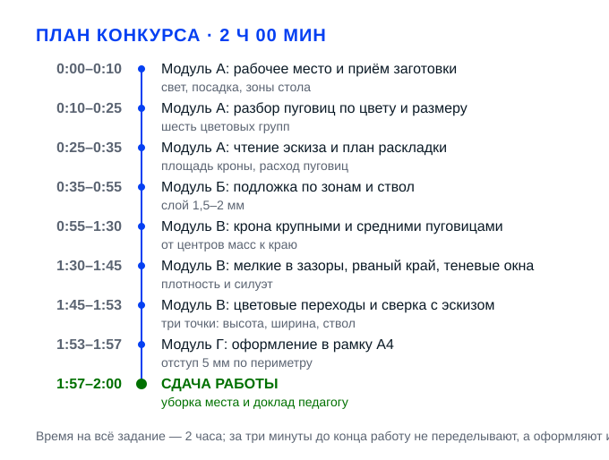
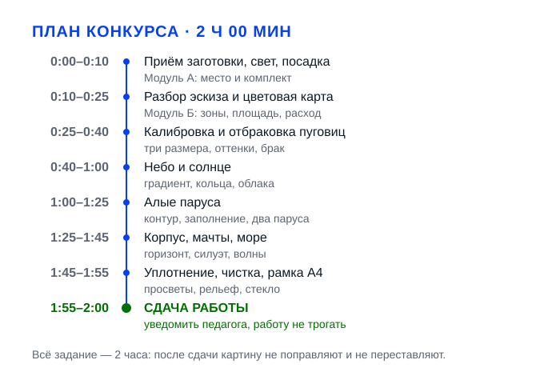
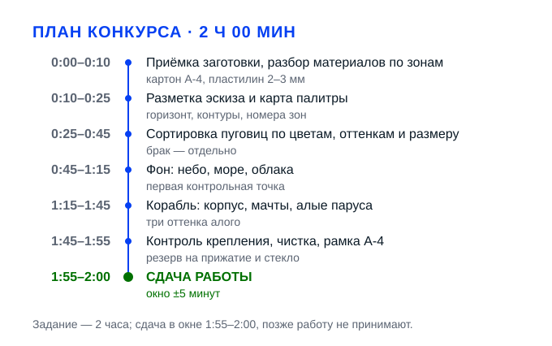

Рисование картин пуговицами (ФВ)
Задания ниже — официальные файлы «Абилимпикс» (источник: abilympics-russia.ru), разложенные по категориям. Решения написаны по тексту задания, регламенту и критериям оценки; в них указано, что именно проверяет эксперт.
Школьник
14–16 лет, базовый уровень заданияВ официальном файле категории не разделены отдельными разделами — приводим задание целиком; различия по категориям смотрите в таблице модулей.
Пошаговое решение
Конкурсное задание категории «Школьники» — картина «Осеннее дерево» в технике мозаики из пуговиц. На всё задание отводится два часа: организовать рабочее место, разобрать пуговицы по цвету и размеру, подложить под зоны пластилин нужного цвета, выложить ствол, а затем собрать крону — от крупных пуговиц в центрах цветовых масс к мелким в зазорах и по краю. Работа идёт на подготовленной заготовке: картонный лист А4 с эскизом и пластилиновой основой, клей не нужен — пуговица держится за счёт прижатия. Материалы выдаются на месте: рамка А4, пластилин, доска для лепки, стеки и контейнеры с пуговицами. Пуговицу можно снять и посадить заново, подложку — разгладить пальцем. Эксперт смотрит не только на картину, но и на последовательность: как разобраны пуговицы, держится ли плотность, читается ли объём кроны и села ли работа в рамку. Ниже задание разложено на четыре задачи и сорок шесть шагов.

Задача 1. Организовать рабочее место и разобрать пуговицы по цветуМодуль А · первые 20 минут из 2 ч 00 мин
Задание начинается не с пуговицы, а со стола. Нужно сесть так, чтобы кисть работала мелко и не уставала, разложить инструменты по зонам, принять заготовку и убедиться, что пластилин держит, а потом разобрать выданные контейнеры на цветовые группы и размеры. Эти двадцать минут кажутся подготовкой, но именно они задают темп: в мозаике из пуговиц рука делает двести-триста переносов, и каждый лишний поиск нужного оттенка съедает время из двух часов, отведённых на всё задание.
Действие 1.1. Занять место и разложить инструменты по зонам
Шаг 1.1.1
Садимся так, чтобы заготовка лежала прямо перед грудью, сантиметрах в тридцати от края стола, ступни на полу, локти на столе — тогда кисть работает мелко, а плечо не устаёт к сороковой минуте. Свет должен падать слева и спереди: у правши тень от руки не закроет место, куда ложится пуговица, а левше заготовку лучше повернуть или пересесть. Контейнеры ставим справа и чуть выше листа, чтобы брать пуговицу не глядя.
Организация рабочего места открывает последовательность выполнения задания, и эксперт видит её раньше, чем саму картину. За два часа мелкой работы неправильная посадка даёт дрожь в кисти уже к середине, и пуговицы начинают ложиться с перекосом. Свет из-за спины убивает главный контроль — видимость зазоров между пуговицами, по которым потом судят о плотности укладки.
От глаз до заготовки около сорока сантиметров, от края стола до листа — ладонь, локоть лежит на столе, а не висит. Тень от руки не попадает в рабочую зону. За пуговицей не приходится тянуться: контейнеры в пределах вытянутой руки.
Положить заготовку сбоку и работать вполоборота: через полчаса шея затекает, движения становятся размашистыми, и мелкие пуговицы уезжают за границу кроны. Сесть против окна — тоже ошибка: свет бьёт в глаза, зазоры не читаются, и дыры в мозаике обнаруживаются только на сдаче.
Эксперт обходит места в первые минуты и отмечает посадку, положение заготовки и то, не занял ли участник чужую половину стола разложенными пуговицами.
Шаг 1.1.2
Раскладываем инструменты по трём зонам: слева доска для лепки и стеки, по центру заготовка, справа контейнеры в порядке цветов. Бумажные салфетки кладём под правую руку — на них вытираем пальцы после пластилина, чтобы не пачкать светлые пуговицы, а влажную салфетку держим отдельно, она нужна для рук, а не для основы. Стеки укладываем ручкой к себе, рабочей частью от края стола.
Порядок на столе входит в оценку организации, но важнее другое: в мозаике рука постоянно ходит между контейнером и основой, и каждая лишняя секунда поиска умножается на двести с лишним движений. Салфетка под рукой нужна не для чистоты вообще, а чтобы жирный след пластилина не остался на лицевой стороне пуговицы, где его уже не оттереть.
На столе нет ничего лишнего: телефона, пенала, куртки, рюкзака. Стеки лежат рабочей частью от вас, салфетки под рабочей рукой, контейнеры закрыты, кроме того, который разбираете сейчас. Лист можно повернуть на столе, не задев ничего вокруг.
Свалить всё в кучу перед собой: пуговицы перемешиваются с крошками пластилина, светлые тона пачкаются, и вернуть им вид уже невозможно. Открыть сразу все контейнеры — вторая ошибка: пуговицы раскатываются, часть падает на пол, и на сбор нужных цветов уходит время из общего лимита.
Смотрит на зонирование стола и на то, пользуется ли участник салфетками по назначению. Отдельно отмечает, остаются ли пуговицы в контейнерах, а не рассыпаны по всей поверхности.
Шаг 1.1.3
Кладём заготовку эскизом вверх и осматриваем: картон А4 не должен быть надломлен по углам, а пластилиновая основа — покрывать всю площадь, которую предстоит заполнить, без пропусков у кромки. Пальцем проводим по основе: она мягкая, но не липкая, толщиной примерно два-три миллиметра; там, где слой тоньше, пуговица не удержится и отвалится при переносе листа. Сверяем, что нанесённый эскиз читается: ствол, контур кроны, линия земли.
Заготовка выдаётся готовой, и её состояние — единственное, что ещё можно изменить до старта: пропуск пластилина у кромки или продавленный угол обернутся пустым пятном в готовой картине. Толщина слоя напрямую определяет, как глубоко сядет пуговица, а от этого зависит, закроется ли потом рамка.
Основа блестит ровно, без сухих участков, палец оставляет неглубокую ямку, которая медленно выравнивается. Эскиз виден на всей площади, кромки картона целые. Нашли пропуск или надлом — сразу говорите педагогу, до начала раскладки.
Начать работу на заготовке с подсохшим, заветренным пластилином: пуговицы держатся слабо и при наклоне листа осыпаются целыми гроздьями. Не заметить надлом угла — при сборке в рамку картон разойдётся по трещине, и работа потеряет вид уже после того, как всё выложено.
Эксперт вместе с участником фиксирует состояние заготовки до старта. Если дефект есть и о нём сказали сразу, заготовку заменят; если промолчали, недостаток засчитают как небрежность работы.
Действие 1.2. Разобрать пуговицы по цвету и размеру
Шаг 1.2.1
Открываем только один контейнер, высыпаем содержимое на доску для лепки небольшим холмиком и сразу закрываем остальные. Доска нужна не для красоты: у неё бортик, пуговицы не скатываются на пол, а светлая поверхность не сливается с тёмными тонами. Разбираем холмик сразу, не откладывая: разложенная партия занимает меньше места и не мешает руке. Доска должна стоять устойчиво, не на весу: горка пуговиц на качающейся поверхности разъезжается сама.
Пуговицы выдаются контейнерами по числу используемых цветов, и смешать их — значит потерять главный инструмент мозаичиста: возможность быстро взять нужный оттенок. На разбор одной партии уходит две-три минуты, на разбор перемешанной кучи — втрое больше, а на всё задание отведено два часа.
На доске не осталось неопознанных пуговиц, все разложены по группам, остальные контейнеры закрыты. Проверьте, что ни одна пуговица не упала на пол и не закатилась под лист: подобранная с пола пуговица идёт в работу только после протирания.
Высыпать все контейнеры сразу: цвета перемешиваются, и вместо работы вы двадцать минут сортируете заново, теряя темп на самом старте. Работать прямо из контейнера, не высыпая, — тоже плохо: рука нащупывает пуговицу вслепую и берёт не тот оттенок.
Эксперт смотрит, как участник обращается с материалом: аккуратно ли высыпает, не теряет ли пуговицы, закрывает ли контейнеры. Нерациональная сортировка видна по темпу — к середине задания участник начинает торопиться.
Шаг 1.2.2
Раскладываем пуговицы на шесть групп осенней палитры: жёлтая, оранжевая, красная, бордовая, коричневая и зелёная. Внутри каждой группы сразу отделяем светлые оттенки от тёмных — солнечно-жёлтый от горчичного, алый от кирпичного: именно из этой разницы потом собираются переходы в кроне. Серые, белые и чёрные пуговицы откладываем отдельно, они пойдут на ствол и небо.
Мозаика читается не количеством пуговиц, а разницей оттенков: крона из пуговиц одного тона выглядит плоским пятном, и это первое, что снижает оценку за цветовое решение. Деление на шесть групп повторяет палитру осеннего дерева, поэтому в работе не придётся искать цвет — он уже лежит отдельной кучкой.
Каждая группа лежит отдельно, границы видны, светлые и тёмные оттенки внутри группы не смешаны. Оцените пропорцию: жёлтых и оранжевых должно быть больше всего, зелёных — меньше всех, иначе дерево получится летним, а не осенним.
Сортировать по принципу «рыжие сюда, остальные туда»: в работе не окажется нужного оттенка, и крона соберётся из случайных тонов. Смешать светлые и тёмные внутри группы — тогда переходы делаются на глаз, и вместо объёма получается рябь.
Эксперт оценивает, насколько осознанно подобрана палитра: видны ли группы, есть ли внутри них оттенки. Работа из трёх цветов проигрывает даже при аккуратном исполнении.
Шаг 1.2.3
Внутри каждой цветовой группы раскладываем пуговицы на три размера: крупные от двадцати пяти миллиметров, средние от двенадцати до двадцати, мелкие до десяти. Удобно раздвинуть их рядками — так видно, чего больше и чего не хватает. Отдельно откладываем пуговицы одинакового диаметра: из них потом набираются серединки цветовых пятен, где нужен ровный шаг.
Крупные держат массу и закрывают площадь, средние делают переход, мелкие доводят край и зазоры. Если всё перемешано, вы либо забиваете крону крупными и теряете детализацию, либо собираете её из мелочи и получаете рыхлую поверхность. Размер — второй по важности признак после цвета, и он же определяет расход времени.
По каждой группе видны три кучки: крупных примерно треть, средних половина, мелких остальное. Если мелких меньше десятой части — скажите педагогу сразу: без них не закрыть зазоры у края кроны и у ствола.
Работать только крупными пуговицами: площадь они закрывают быстро, но силуэт кроны получается рубленым, как аппликация из кругов. Обратная ошибка — увлечься мелочью: плотность падает, между пуговицами просвечивает пластилин, мозаика выглядит недоделанной.
Смотрит на градацию размеров в готовой работе: крупные в центре масс, мелкие по краю. Резкий переход от крупных к мелким без среднего звена читается как ошибка раскладки.
Шаг 1.2.4
Перебираем пуговицы и откладываем те, что не годятся: с ножкой на обратной стороне, с трещиной или сколом по кромке, слишком толстые, с острым литым краем. Пуговицу с ножкой проверяем ногтем — если она качается на основе, значит, плоскость не приляжет и держаться будет только за счёт вдавливания. Гнутые и вогнутые оставляем, но складываем отдельно: они дают блик и пойдут в середину кроны.
Основа здесь пластилиновая, а не клеевая, и держит она только за счёт площади прижатия: пуговица на ножке садится на одну точку и отваливается при первом наклоне листа. Скол по кромке опасен и практически — острый край цепляется за салфетку и за пальцы, а испорченная пуговица в картине видна как белая точка.
Отложенные лежат отдельной кучкой, их не больше десятой части партии. Каждая оставленная пуговица ложится на доску всей плоскостью, без качания. Трещин и сколов на лицевой стороне нет. Если такая пуговица всё же попала в работу, проверьте её на качание отдельно.
Взять пуговицу с ножкой «на край кроны, там не видно»: именно на краю она и отваливается первой, потому что пластилина под ней меньше всего. Не отбраковать скол — к концу работы в картине появляется белая щербинка, которую уже не замаскировать.
Эксперт проверяет несколько пуговиц на прочность посадки, слегка нажимая пальцем. Плохо посаженная пуговица выдаёт себя качанием и тенью под кромкой. Отдельно отмечается, отличает ли участник пуговицы по способу крепления или берёт всё подряд.
Действие 1.3. Прочитать эскиз и спланировать раскладку
Шаг 1.3.1
Кладём заготовку перед собой и размечаем взглядом четыре зоны: небо сверху, крону в центре, ствол в нижней половине, землю у кромки. Обратной стороной стеки проводим по границе кроны, чтобы запомнить её форму, и отмечаем, где крона выходит за край листа. Определяем, какая часть площади приходится на крону: обычно это половина листа, и именно на неё уйдёт основной запас пуговиц.
Эскиз — это техническое задание, и оценивается соответствие работы описанию и иллюстрациям, а не собственная фантазия. Понимание пропорций до начала раскладки экономит материал: если начать с неба и увлечься, к кроне останутся только мелкие пуговицы, и центр картины окажется пустым.
Вы можете, не глядя на эскиз, показать границу кроны и линию земли. Площадь кроны оценена — примерно половина листа. Понятно, где проходит ствол и какой он ширины внизу и вверху. Если границу кроны не удаётся провести уверенно, обведите её стекой по эскизу ещё раз.
Начать с первого попавшегося участка, не разобрав эскиз: крона съезжает в угол, ствол не попадает в свою зону, и работа расходится с заданием по композиции. Вторая ошибка — выложить небо и землю плотным слоем и остаться без пуговиц для главного.
Эксперт сверяет готовую картину с эскизом: форма кроны, положение ствола, линия земли. Смещение крупных масс хотя бы на сантиметр заметно сразу. Если крона на эскизе выходит за край, эксперт смотрит, сохранён ли этот выход в работе.
Шаг 1.3.2
Прикидываем расход: на квадрат пять на пять сантиметров при плотной укладке уходит примерно двадцать-двадцать пять пуговиц среднего размера. Умножаем на площадь кроны — получаем ориентир, сколько нужно на центр и сколько останется на край. Если пуговиц заметно меньше расчётного, планируем укладку не вплотную, а с ритмичными промежутками, чтобы пластилин не просвечивал пятнами.
Плотность — главный визуальный признак качества мозаики: при просветах работа выглядит недоделанной, при избытке пуговицы наезжают друг на друга, рельеф становится бугристым и потом не закрывается рамкой. Расчёт занимает минуту и избавляет от ситуации, когда к концу раскладки материала не хватает на треть кроны.
У вас есть цифра: сколько примерно пуговиц нужно на крону и сколько их в контейнерах, разница не больше четверти. При избытке плотность можно поднять, при дефиците заранее решаем, где оставить ритмичные промежутки.
Начать без расчёта и к концу увидеть, что крупные кончились: крона собирается из мелких, центр теряет вес, картина выглядит размытой. Обратная ошибка — укладывать в два слоя «чтобы плотнее»: поверхность вспучивается, и рамка не садится.
Эксперт оценивает равномерность плотности по всей площади. Пятна густой укладки рядом с просветами читаются как неумение распределять материал. Расчёт по площади виден по равномерности: там, где пуговиц заведомо не хватало, появляются разряжённые участки.
Шаг 1.3.3
Решаем заранее, где какие цвета: верх кроны — жёлтый и золотистый, ближе к стволу оранжевый и красный, в нижней части кроны и у ветвей бордовый с коричневым, по внешнему краю зелёный с вкраплениями жёлтого. Ствол намечаем тёмно-коричневым и чёрным, небо светло-голубым и белым, землю коричневым с зелёным. Контейнеры ставим на столе в том же порядке, в каком будут браться цвета.
Осеннее дерево держится на светотени: свет сверху, тень снизу, и если это правило нарушить, крона станет плоским пятном независимо от количества пуговиц. Порядок контейнеров на столе — часть той же логики: рука идёт за цветом по кратчайшему пути, и раскладка получается ровнее.
План цветов понятен без записи: вы называете, каким будет верх кроны и каким низ. Контейнеры стоят в порядке укладки. В плане есть хотя бы один светлый акцент в верхней части кроны и хотя бы один тёмный в нижней.
Сыпать цвета вперемешку «как ляжет»: крона получается рябой, глаз не находит в ней объёма, и работа проигрывает по цветовому решению даже при аккуратной укладке. Сделать всю крону одним тоном — вторая крайность, дерево выглядит нарисованным одним фломастером.
Эксперт смотрит на распределение цвета в готовой работе: есть ли световая вершина и затенённое основание. Хаотичное распределение оттенков читается как отсутствие замысла.
Задача 2. Подготовить пластилиновую подложку по зонам и выложить стволМодуль Б · с 20-й по 55-ю минуту задания
Основа на заготовке уже есть, но она одного цвета, и в просветах между пуговицами будет просвечивать серый или белый пластилин — мозаика сразу покажется дырявой. Поэтому сначала под каждую зону подкладывается тонкий слой пластилина нужного цвета: под крону тёплый, под небо холодный, под ствол тёмный. Затем набирается ствол: он задаёт масштаб всей картине, и по нему видно, умеет ли участник держать ширину и направление. Эта часть работы занимает около тридцати пяти минут, и на неё уходит примерно пятая часть всех пуговиц.
Действие 2.1. Размять пластилин нужных цветов
Шаг 2.1.1
Отрезаем стекой от бруска кусок размером с грецкий орех — больше за один раз не берём, иначе он остынет, пока вы его разминаете. Разминаем в ладонях секунд тридцать-сорок, пока пластилин не станет тёплым и податливым, и скатываем шарик. Готовность проверяем большим пальцем: ямка от нажатия затягивается медленно, а сам пластилин тянется, а не рвётся кусками.
Пластилин разной свежести ведёт себя по-разному, и от мягкости зависит вся дальнейшая работа: холодный не размазывается тонким слоем, а тянется за пальцем, и подложка получается с буграми. Размятый пластилин ложится ровно, и пуговицы садятся на одинаковую глубину — а именно ровная посадка нужна, чтобы работа закрылась рамкой.
Шарик держит форму, не расползается, при нажатии пальцем остаётся ямка. На срезе нет белесых крупинок и трещин. Если пластилин крошится — он старый, скажите педагогу и возьмите другой брусок из набора.
Взять сразу большой кусок и мять его целиком: центр остаётся холодным, и при размазывании в подложке появляются плотные комки. Разминать на столе, а не в руках, — вторая ошибка: пластилин липнет к доске и собирает крошки, которые потом видны в просветах.
Эксперт смотрит, как участник готовит материал: разминает ли в руках, берёт ли понемногу. Комковатая подложка заметна по рельефу даже под слоем пуговиц.
Шаг 2.1.2
Из размятых кусков скатываем жгутики толщиной примерно пять-семь миллиметров и длиной в ширину той зоны, которую будем закрывать: отдельно для кроны, отдельно для неба и земли. Катаем на доске ладонью, движения ровные, от середины к краям, чтобы жгутик не утончался к концам. Готовые жгутики складываем на край доски и накрываем салфеткой, чтобы не заветрились.
Жгутик — это заготовка слоя: от него удобно отщипывать одинаковые кусочки и размазывать их без разрывов, тогда подложка выходит равномерной по толщине. Если лепить прямо из шарика, слой получается тоньше, тоньше в одном месте и толще в другом, и пуговицы встают с перепадом высоты.
Жгутики одинаковой толщины по всей длине, не рвутся при сгибании, не липнут к пальцам. Под салфеткой они не покрываются сухой корочкой. Проверьте один: согните пополам — на сгибе не должно быть трещин.
Накатать тонких жгутиков «на глазок»: при размазывании они рвутся, и в подложке остаются пропуски, которые придётся заделывать поверх уже положенных пуговиц. Оставить жгутики открытыми — через двадцать минут они покроются плёнкой и будут ложиться неровно.
Оценивается аккуратность подготовки: ровные жгутики, накрытые салфеткой, видны как признак продуманной работы, а не суеты. Жгутики разной толщины выдают подготовку, сделанную наспех, и слой потом приходится выравнивать стекой.
Шаг 2.1.3
Держим пластилин в тепле: куски, которые ждут очереди, лежат под салфеткой у края стола, а не на подоконнике и не у кондиционера. Если в помещении прохладно, перед размазыванием подержите кусочек в кулаке двадцать секунд. Руки вытираем бумажной салфеткой после каждого цвета, чтобы не смешивать оттенки на пальцах. Если пластилин всё же затвердел, отложите его и возьмите свежий кусок: размятое заново, он ложится хуже.
Температура в помещении по требованиям к рабочим местам держится в пределах двадцати одного — двадцати четырёх градусов, но у окна и у пола холоднее, и пластилин там твердеет за десять минут. Смешанные на пальцах цвета дают грязный оттенок, который потом виден в просветах и портит цветовое решение.
Кусок, полежавший в руке, размазывается без усилия, не тянется за пальцем. Пальцы после вытирания не оставляют цветного следа на светлой салфетке. На подложке нет грязных разводов от смешанных цветов.
Размазывать пластилин холодными руками в холодном помещении: слой ложится полосами, тянется и рвётся, а на исправление уходит время, которого нет. Не вытирать пальцы между цветами — тёмный след в жёлтой зоне кроны уже не убрать, он останется под пуговицами и вылезет в зазорах.
Эксперт обращает внимание на чистоту цвета в просветах между пуговицами: грязные разводы под подложкой читаются как небрежность. Перед укладкой эксперт смотрит на подложку в проёмах: цвет должен быть чистым, без тёмных вкраплений от пальцев.
Действие 2.2. Подложить цветной пластилин под каждую зону
Шаг 2.2.1
Начинаем с кроны: отщипываем от жгутика кусочки размером с горошину и размазываем подушечкой большого пальца от середины зоны к краю, слоем примерно полтора-два миллиметра. Размазываем в одном направлении, не возвращаясь по уже пройденному месту, и следим, чтобы слой не выходил за контур кроны больше чем на два миллиметра. Работаем в той цветовой зоне, которая намечена в плане: верх тёплый, низ тёмный.
Подложка нужна для того, чтобы зазоры между пуговицами читались как цвет, а не как дыра: пластилин в цвет зоны сливается с пуговицами и работает как тень. Толщина в полтора-два миллиметра выбрана не случайно — при более тонком слое просвечивает основа, при более толстом пуговица утопает и не даёт рельефа.
Подложка закрывает зону без пропусков, край ровный, слой на ощупь одинаковый по всей площади. Наклоните лист к свету: серых и белых пятен в зоне кроны не должно остаться. Пуговица, положенная для пробы, садится на две трети толщины.
Размазать пластилин «где получится» и оставить участки основы открытыми: именно в этих местах потом будут белые точки, которые невозможно ничем закрыть, кроме мелкой пуговицы. Намазать слишком толстый слой — пуговицы утонут, рельеф пропадёт, и картина станет похожа на гладкую аппликацию.
Эксперт смотрит на просветы в готовой работе: цвет подложки должен совпадать с цветом пуговиц зоны. Белые точки в кроне — грубая ошибка, видная с расстояния шага.
Шаг 2.2.2
Переходим к небу и земле: небо подкладываем светло-голубым с белым, землю — коричневым с зеленоватым, ствол — тёмно-коричневым. Границу между небом и землёй делаем по линии горизонта, нанесённой на эскиз: сначала укладываем жгутик по границе, потом размазываем вверх и вниз от него. Край подложки на границе сглаживаем стекой, чтобы не было ступеньки.
Небо и земля занимают меньше площади, чем крона, но именно они задают пространство: если под кроной останется серый пластилин, дерево будет висеть в пустоте. Ступенька на линии горизонта опасна тем, что пуговицы на ней встанут под углом и будут качаться.
Линия горизонта ровная, без волн и разрывов, слой по обе стороны одинаковый. Ступеньки на границе нет: проведите пальцем поперёк — переход плавный. Цвета неба и земли не смешаны между собой. Линия горизонта должна совпадать с эскизом на всём протяжении, а не только в середине листа.
Подложить небо и землю одним цветом «потом разберёмся»: в просветах получится пятно, которое не совпадает ни с пуговицами неба, ни с землёй. Размазывать сразу два цвета, не вытерев палец, — вторая ошибка, на горизонте появляется грязная полоса.
Эксперт проверяет линию горизонта: она должна быть ровной и не «гулять». По ней видно, держит ли участник композицию. Отдельно фиксируется, подложены ли небо и земля до начала укладки кроны, а не после.
Шаг 2.2.3
Проходим по всей подложке стекой с плоским краем, снимая наплывы и выравнивая слой: движения короткие, по сантиметру, с легким нажимом. Там, где пластилин собрался бугром, срезаем излишек и переносим на соседний участок. После стеки проходим пальцем, смоченным водой, — поверхность становится гладкой, и пуговицы садятся ровно. Если слой где-то прорезан до картона, положите туда тонкую лепёшку пластилина и разгладьте её пальцем.
Ровный по толщине слой — условие одинаковой посадки: если под кроной пластилин в два раза толще, чем под небом, пуговицы неба окажутся ниже уровня кроны, и при сборке рамка ляжет на крону, а не на картон. Выравнивание занимает пять минут и снимает главную причину перекоса.
Проведите по подложке линейкой или краем стеки, приложив её плашмя: просветов между линейкой и пластилином быть не должно. Поверхность матовая, без бугров и вмятин от пальцев. Толщина на глаз одинаковая по всей площади.
Пропустить выравнивание: бугры и наплывы никуда не денутся, а под пуговицами станут ещё заметнее — поверхность пойдёт волной. Слишком усердно срезать пластилин — прорежете слой до картона, и в этом месте пуговица не держится.
Эксперт проводит пальцем по основе до начала укладки, если подойдёт к столу: ровность слоя проверяется на ощупь за секунду. Если основа вскрыта до картона, это видно по светлому пятну в зазоре, и такой участок считается неподготовленным.
Шаг 2.2.4
Поднимаем лист на уровень глаз и смотрим на него против света: все участки, где просвечивает картон или серый пластилин, должны быть закрыты. Убираем крошки и обрезки с поверхности мягкой кистью или уголком салфетки, не прижимая их к подложке. Отдельно проверяем кромку: у самого края листа пластилин должен быть, иначе крайние пуговицы останутся без опоры.
Просветы и крошки — самая частая причина брака в этой технике: крошка, вдавленная в подложку, потом всплывает в зазоре и выглядит как мусор в картине. Кромка важна потому, что по краю листа идёт рамка, и пуговицы там поджимаются сильнее всего. Кроме того, крошка под пуговицей мешает ей сесть ровно, и уровень посадки сбивается на ровном месте.
На просвет нет ни одного светлого пятна, поверхность чистая, кромка закрыта пластилином по всему периметру. Проведите ладонью над листом — ничего не прилипает и не остаётся на руке. Отдельно пройдитесь пальцем вдоль кромки: там не должно быть сухих участков и обрывов слоя.
Оставить крошки «они прилипнут и не видно»: под пуговицей крошка не даёт ей сесть на место, и та начинает качаться. Не закрыть кромку — крайние пуговицы держатся на честном слове и отваливаются при переносе работы в рамку.
Эксперт осматривает основу на свет и отмечает чистоту поверхности. Крошки и просветы фиксируются как дефект подготовки. Кромка проверяется отдельно: именно по ней судят, думал ли участник о том, как работа встанет в рамку.
Действие 2.3. Выложить ствол и ветки
Шаг 2.3.1
Ствол начинаем снизу: берём самые крупные тёмно-коричневые и чёрные пуговицы и укладываем их в два-три ряда по ширине ствола, прижимая большим пальцем до упора. Внизу ствол широкий — три-четыре пуговицы в ряд, к середине два, вверху одна-две. Кладём пуговицы вдоль оси ствола, а не поперёк, чтобы ряды читались как волокна древесины. Прижимаем каждую пуговицу до появления пластилина в отверстиях, иначе нижний ряд ствола просядет под весом верхних.
Ствол задаёт масштаб: если он получится узким, крона покажется огромной и работа потеряет пропорции, а слишком широкий ствол «съест» крону. Крупные пуговицы внизу и мелкие вверху дают естественное сужение, и это первое, что проверяет эксперт в композиции.
Ширина внизу три-четыре пуговицы, вверху одна-две, сужение плавное, без ступенек. Пуговицы сидят плотно, без качания, зазоры между ними не больше половины диаметра. Ствол стоит вертикально или с намеченным на эскизе наклоном.
Выложить ствол одинаковой ширины по всей высоте: он превращается в столб, и дерево выглядит искусственным. Прижимать пуговицы слабо — при переносе листа ствол осыпается первым, потому что под ним больше всего пуговиц на единицу площади.
Эксперт смотрит на пропорции ствола относительно кроны и на плотность его укладки. Просветы в стволе заметнее, чем в кроне: там тёмный пластилин на светлом фоне.
Шаг 2.3.2
Ведём ствол вверх, постепенно уменьшая пуговицы: к середине переходим на средние, у вершины оставляем мелкие. Каждую следующую пуговицу кладём с нахлёстом на предыдущую в два-три миллиметра, чтобы между ними не оставалось щели. Если по эскизу ствол изогнут, повторяем изгиб, смещая ряды на одну пуговицу через каждые три-четыре. Ведём ствол без спешки, ряд за рядом, поворачивая лист, если так удобнее дотянуться до вершины.
Нахлёст в два-три миллиметра — единственный способ получить непрерывную линию ствола: при укладке встык между пуговицами остаются щели, и ствол распадается на отдельные кружки. Смещение рядов на одну пуговицу даёт плавный изгиб без изломов. Направление ряда вдоль оси читается как волокно, а поперечные ряды превращают ствол в кирпичную кладку.
Ствол читается как единая линия, щелей между пуговицами нет, изгиб повторяет эскиз. Проверьте, приложив стеку вдоль ствола: она должна касаться всех пуговиц ряда, без провалов. Проверьте вблизи: между пуговицами одного ряда не должно быть светлых просветов шириной в спичку.
Класть пуговицы встык: щели видны как светлые полосы, ствол выглядит пунктиром. Делать изгиб резкими ступеньками — ствол получается сломанным, и это сразу читается как ошибка композиции. Класть пуговицы поперёк ствола — ряды читаются как кладка, и ствол теряет сходство с деревом.
Эксперт ведёт взглядом по стволу снизу вверх: разрывы и изломы фиксируются как дефект укладки. Смотрит и на то, держит ли участник направление: пуговицы, положенные поперёк оси, сразу превращают ствол в кладку.
Шаг 2.3.3
От ствола выводим ветки: берём мелкие пуговицы, начиная от места, где ветка отходит, и ведём вверх и в сторону, уменьшая размер к концу. Длина ветки — три-пять пуговиц, последняя самая мелкая, она обозначает кончик. Ветки не должны быть параллельными: разводим их под разными углами, как на эскизе, и не выводим за контур кроны. Прижимаем мелкие пуговицы кончиком пальца: под ними меньше площади, и они легче садятся криво.
Ветки связывают ствол с кроной: без них крона висит отдельно, и картина распадается на два несвязанных пятна. Разные углы наклона дают живой силуэт, а параллельные ветки читаются как расчёска и выдают небрежность. Кроме того, тонкие ветки не перекрывают крону и не мешают укладывать пуговицы листвы поверх них.
Ветки выходят из ствола, а не рядом с ним, углы разные, концы не выходят за контур кроны. Каждая ветка сужается к концу. Между ветками остаётся пространство, они не сливаются в одно пятно. Проверьте, что каждая ветка начинается от края ствола, а не в стороне от него.
Вывести все ветки под одним углом: крона получается метёлкой. Сделать ветки толстыми, из крупных пуговиц — они спорят со стволом и перетягивают внимание, а крона теряет главенство. Сделать ветки одинаковой длины — крона выглядит подрезанной, а дерево — искусственно симметричным.
Эксперт смотрит на связность: ветки должны читаться внутри кроны и не спорить со стволом по толщине. Ветки, выходящие из ствола под одним углом или одинаковой длины, читаются как ошибка: живое дерево всегда несимметрично.
Шаг 2.3.4
Стык веток с кроной делаем внахлёст: ветка уходит под первые пуговицы кроны, а не ложится поверх них. Кладём две-три мелкие пуговицы кроны прямо на конец ветки и прижимаем сильнее, чтобы они сели на один уровень с соседними. Проверяем стык пальцем: он должен быть без уступа. Если уступ всё же остался, снимаем верхнюю пуговицу, подкладываем под неё тонкую лепёшку пластилина и сажаем заново: так стык выравнивается без переделки всей ветки. Работаем с края кроны внутрь, чтобы не смять уже посаженное.
Уступ на стыке виден как тень и разрушает впечатление цельной картины: крона кажется наклеенной на ствол. Нахлёст под низ даёт естественное соединение, при котором ветка «входит» в листву, как в жизни. Стык — самое уязвимое место в работе: через него проходит граница двух цветов, и любая неровность читается как шов на ткани.
Стык ровный на ощупь, уступа нет, пуговицы кроны лежат на том же уровне, что и соседние. Тень под краем не читается. Ветка не выглядит обрезанной. Посмотрите на стык сбоку, приложив лист почти к уровню глаз: уступ виден как тонкая тень под кромкой. Если тень есть, пуговица сидит выше соседних.
Положить ветку поверх кроны: получается шов, который видно с любого расстояния. Оставить конец ветки открытым — он торчит из кроны, как обрубок, и это сразу заметно на сдаче. Прижать ветку пальцем, не проверив стык, — под ней остаётся воздух, и через день пуговицы кроны в этом месте просядут.
Эксперт проводит пальцем по стыку ствола и кроны, если работа позволяет: уступ и шов проверяются на ощупь. Стык проверяется и на глаз, и на ощупь: это место, где чаще всего образуется шов, видимый на просвет.
Задача 3. Выложить крону: от крупных масс к мелким зазорамМодуль В · с 55-й по 100-ю минуту, основной объём
Крона — половина площади листа и примерно три четверти всех пуговиц, поэтому она и занимает середину работы. Порядок здесь жёсткий и не зависит от настроения: сначала крупные пуговицы в центрах цветовых масс, потом средние вокруг них, потом мелкие в зазоры и по краю. Если начать с мелочи или с края, крупные потом некуда будет поставить, и крона получится рыхлой. На этом этапе важно не столько набрать площадь, сколько держать три вещи одновременно: плотность, единый уровень посадки и цветовые переходы.
Действие 3.1. Поставить крупные пуговицы в центры цветовых масс
Шаг 3.1.1
Крону делим на три-четыре цветовые массы: золотисто-жёлтую в верхней трети, оранжевую в середине, красно-бордовую справа и ниже, зелёную у левого края. В каждой массе намечаем центр — самое широкое место, и начинаем с той, что крупнее и ближе к стволу. Центр обозначаем одной самой крупной пуговицей, прижатой до упора, и от неё ведём остальные. Крупные пуговицы берём из отложенной кучки, не выискивая их в общей массе.
Масса читается лучше, чем ровное поле одинаковых пуговиц: глаз находит в кроне сгустки цвета и достраивает объём. Если начать с края, центр массы останется на мелких пуговицах, и крона потеряет вес именно там, где должна быть самая плотная укладка. Если центр массы занят мелочью, пятно выглядит выеденным.
В кроне намечены три-четыре пятна, в каждом лежит первая крупная пуговица. Расстояние между центрами не меньше трёх диаметров крупной пуговицы. Пятна не выходят за контур кроны из эскиза. Проверьте, что первая пуговица каждой массы сидит плотно: от неё зависит вся раскладка.
Разложить крупные пуговицы равномерно по всей кроне, как горошины по тарелке: массы не читаются, крона получается плоской. Начать с края и вести внутрь — к центру останутся только мелкие пуговицы, и главное пятно картины окажется самым слабым по плотности.
Эксперт оценивает композицию кроны: есть ли в ней сгустки цвета и пустоты, читается ли объём. Ровное поле пуговиц одного размера проигрывает. Смотрит и на порядок работы: начинать с центра и идти к краю — признак продуманной укладки.
Шаг 3.1.2
Ведём укладку от центра массы к её краю, ряд за рядом, прижимая каждую пуговицу большим пальцем до тех пор, пока пластилин не покажется в отверстиях. Кладём пуговицы лицевой стороной вверх и одинаково: у пуговиц с рисунком или с углублением в центре лицевая сторона узнаётся по блеску и по фаске. Ряды ведём по касательной к окружности массы, а не по прямой.
Пластилин в отверстиях — единственный надёжный признак того, что пуговица села: он выдавился внутрь, значит, площадь прижатия максимальна. Ряды по касательной дают округлую форму массы, а прямые ряды превращают её в квадрат, и это сразу видно в силуэте кроны.
В отверстиях виден пластилин, пуговица не качается под пальцем, лицевая сторона у всех верх. Край массы округлый, без углов. Уровень посадки одинаковый: проведите пальцем по ряду — ступенек нет. Пуговицы с рисунком проверяем на блеск: лицевая сторона отражает свет ярче.
Прижимать пуговицы ногтем или краем ладони: пластилин не выдавливается в отверстия, и пуговица держится только за счёт трения, а через час отваливается. Класть часть пуговиц изнанкой вверх — на матовой стороне нет блика, и в массе появляются тусклые пятна.
Эксперт нажимает несколько пуговиц в кроне. Если пуговица пружинит или качается, это фиксируется как дефект крепления. Отдельно смотрит на лицевые стороны: пуговица изнанкой вверх видна по матовой поверхности и отсутствию блика.
Шаг 3.1.3
Держим шаг: между крупными пуговицами оставляем зазор не больше трети диаметра, а лучше сажаем их почти вплотную, с нахлёстом краёв на миллиметр. Следим, чтобы соседние пуговицы не наезжали друг на друга целиком: одна пуговица, лежащая на другой, поднимает уровень и создаёт бугор. Крупные в массе кладём с одинаковым шагом, как по невидимой сетке. Сетку держим мысленно, но ровно: именно она даёт аккуратный вид всей массе.
Шаг задаёт ритм: при ровном шаге крона выглядит собранной, при случайном — рассыпанной. Нахлёст в миллиметр закрывает щели, а наезд целиком опасен тем, что верхняя пуговица держится не на основе, а на нижней, и при переносе работы слетает первой. Полный наезд ещё и поднимает рельеф, из-за чего стекло потом не ложится на картон.
Зазоры между крупными пуговицами не больше трети диаметра, полных наездов нет, уровень ровный. Проверьте на просвет: между пуговицами не должно быть сквозных белых щелей. Отойдите на полшага: при ровном шаге крона читается как тканая поверхность, при сбитом — как случайная россыпь.
Класть крупные пуговицы вразброс, с зазорами в диаметр: крона выглядит дырявой, и на закрытие этих дыр уйдёт весь запас мелких. Сажать в два слоя «чтобы не было щелей» — поверхность вспучивается, и рамка не закроется.
Эксперт смотрит на равномерность шага в пределах одной массы. Сбитый ритм читается как спешка. Эксперт отходит на два шага и смотрит на крону целиком: ритм укладки виден лучше, чем вблизи, где пуговицы закрывают друг друга.
Действие 3.2. Заполнить пространство средними пуговицами
Шаг 3.2.1
Средние пуговицы кладём вокруг крупных, заполняя промежутки между ними и краем массы: сначала обходим каждую крупную пуговицу по кругу, потом закрываем то, что осталось внутри массы. Работаем небольшой зоной в пять на пять сантиметров, а не перескакиваем по всей кроне: так видно, где ещё есть просвет, и рука не тянется через весь лист. Крупные пуговицы при этом не трогаем: они уже стоят на своих местах и задают шаг.
Средние — связующее звено: они закрывают площадь, которую крупные не закрыли, и не дают кроне распасться на отдельные острова. Работа зоной экономит время и внимание: в мозаике из пуговиц перескок с места на место означает, что вы дважды смотрите на одну и ту же щель.
Промежутки вокруг крупных закрыты, между массами остались только намеченные переходы. Внутри зоны нет просветов больше половины диаметра средней пуговицы. Зона выглядит завершённой, если смотреть на неё отдельно.
Заполнять промежутки хаотично, хватая пуговицы из разных мест: остаются незамеченные дыры, и они всплывают на финальном осмотре, когда время уже вышло. Класть средние поверх крупных — уровень поднимается, и в массе появляется горб.
Эксперт оценивает переход от крупных к средним: он должен быть плавным, без провалов по размеру. Отдельно смотрит на стык размеров: если средние пуговицы лежат только по краю массы, переход читается полосой.
Шаг 3.2.2
Следим за ориентацией пуговиц: у пуговиц с двумя отверстиями и с тиснёным рисунком поворачиваем их в разных направлениях, чтобы отверстия не выстраивались в одну линию. У пуговиц с четырьмя отверстиями ставим их «крестом» через одну, а не все подряд одинаково. Проверяем это, отведя взгляд на полшага: ряды одинаково повёрнутых пуговиц читаются как полосы.
Одинаковый поворот создаёт ложный рисунок: отверстия выстраиваются в линии, и вместо кроны получается сетка. Разные направления дают ту самую живую поверхность, из-за которой мозаику из пуговиц и ценят: глаз видит блики под разными углами. Глаз цепляется за блики, и поверхность кажется глубже, чем она есть.
Отойдите на полшага и прищурьтесь: полос из отверстий не видно, поверхность читается как рябая, а не как решётка. Соседние пуговицы не повторяют друг друга по повороту. Проверьте три-четыре пуговицы подряд: у них не должно совпадать направление отверстий.
Класть все пуговицы отверстиями вверх одинаково: получаются правильные ряды точек, и крона выглядит механической. Не обращать внимания на изнанку — матовые пуговицы без блика выбиваются из общей поверхности тёмными пятнами.
Эксперт смотрит на поверхность кроны целиком: ритм бликов и отсутствие ложных линий — признак владения техникой. Отдельно отмечает, нет ли в кроне «строчек» из отверстий: это самый частый признак небрежной укладки.
Шаг 3.2.3
Контролируем плотность: после каждых десяти-пятнадцати пуговиц отводим взгляд и проверяем, не осталось ли просвета шире половины диаметра. Просвет закрываем средней или мелкой пуговицей, но не сдвигаем уже посаженные: сдвинутая пуговица оставляет за собой вмятину в пластилине, и на её месте образуется ямка. Если пуговица всё же встала криво, снимаем её и прижимаем заново на том же месте, разгладив пластилин пальцем.
Плотность — то, что видно с расстояния двух метров, то есть с того места, откуда работу смотрит эксперт. Просвет в пластилин читается как дыра даже в том случае, если подложка подобрана в цвет. Вмятины от сдвинутых пуговиц не разглаживаются сами и остаются тёмными точками.
С двух шагов просветов шире половины диаметра нет, вмятин на подложке не видно, поверхность ровная. Наклоните лист: тени от пуговиц должны ложиться одинаково, без провалов. Отдельно проверьте просветы у ствола: там темнее, и дыры менее заметны, но именно они портят силуэт.
Гнать площадь и закрывать просветы «потом»: к концу работы их набирается два десятка, и каждый требует снятия соседних пуговиц. Сдвигать посаженные пуговицы, чтобы втиснуть ещё одну, — вторая ошибка, после неё остаётся борозда.
Эксперт осматривает крону на расстоянии и вблизи: сначала общее впечатление плотности, потом отдельные просветы. Просветы у ствола и по краю кроны осматриваются отдельно: там они теряются на тёмном фоне и остаются незамеченными.
Шаг 3.2.4
Проверяем единый уровень посадки: проводим ладонью над кроной без нажима. Ладонь должна скользить по пуговицам, не цепляясь за выступающие. Пуговицы, которые сидят выше остальных, прижимаем ещё раз большим пальцем; те, что утонули слишком глубоко, поддеваем ногтем или стекой и пересаживаем на подложенный кусочек пластилина. Особое внимание — пуговицам в углах и по периметру: там глубина рамки меньше всего.
Высота посадки определяет, закроется ли работа рамкой: у стандартной рамки А4 под стекло остаётся два-три миллиметра глубины, и пуговица, торчащая выше, не даёт стеклу лечь. Кроме того, ровный уровень даёт ровный блик, и крона выглядит цельной. Торчащая пуговица к тому же цепляется за салфетку, когда работу протирают перед сборкой.
Ладонь скользит ровно, без зацепов, на просвет вдоль листа поверхность читается как одна плоскость с мелким рельефом. Самая высокая пуговица не поднимается над соседними больше чем на миллиметр. Проверьте посадку в четырёх углах кроны: там перепад заметнее всего.
Оставлять торчащие пуговицы «рамка продавит»: стекло ляжет на пуговицу, а не на картон, и по краю появится зазор. Вдавливать пуговицы до упора пальцем в тонкую подложку — они проваливаются до картона и держатся хуже, чем соседние.
Эксперт проверяет уровень перед сборкой рамки: торчащая пуговица видна по тени, которую она отбрасывает на соседние. Смотрит на посадку в тех местах, где рамка прижимает сильнее: по периметру и в углах листа.
Действие 3.3. Закрыть зазоры мелкими пуговицами и сделать край
Шаг 3.3.1
Мелкие пуговицы идут в зазоры: там, где между средними осталось пространство меньше их диаметра, кладём самую мелкую, прижимая её кончиком большого пальца. Если зазор меньше пяти миллиметров и пуговица не входит, не расширяем его и не сдвигаем соседей — оставляем как есть, потому что такой зазор уже не читается как дыра. Работаем по всей кроне, двигаясь сверху вниз.
Мелкая пуговица в зазоре закрывает просвет и одновременно дробит поверхность, из-за чего крона кажется богаче по фактуре. Попытка расширить зазор ради пуговицы обходится дороже: сдвинутые соседи оставляют вмятины, и участок приходится перебирать заново.
Зазоров шире пяти миллиметров в кроне не осталось, мелкие пуговицы сидят на одном уровне с соседними, ни одна не качается. С расстояния вытянутой руки поверхность выглядит сплошной. Проверьте на просвет: мелкая пуговица не должна стоять на ребре и давать тень с одной стороны.
Заталкивать мелкую пуговицу в зазор силой: она встаёт на ребро, а через час вылезает и торчит. Закрывать мелкие зазоры крупными — в массе появляется бугор, и пропорция размеров ломается. Вдавливать мелкую пуговицу глубже соседних — она утонет, и в этом месте появится ямка.
Эксперт смотрит, закрыты ли просветы именно мелкими пуговицами, а не замазаны пластилином. Смотрит и на то, не замазаны ли зазоры пластилином вместо пуговиц: пластилин в просвете кроны читается как грязь.
Шаг 3.3.2
Край кроны делаем рваным: по контуру, нанесённому на эскиз, выкладываем мелкие пуговицы с выступами и впадинами в два-пять миллиметров, как у настоящей листвы. Выступы не должны выходить за контур больше чем на полдиаметра мелкой пуговицы, иначе силуэт расплывается. Между выступами оставляем небольшие впадины, но не сквозные дыры. Выступы делаем из пуговиц разного размера: одинаковые дают ритм, который читается как узор.
Ровный край из пуговиц одного размера читается как обведённый циркулем круг и сразу выдаёт аппликацию, а не мозаику. Рваный край с мелкими выступами даёт силуэт, который глаз воспринимает как листву, и это одна из главных оценок в композиции. Край — первое, что видит глаз, когда смотрит на силуэт.
Край читается неровным, выступы разные по величине, но не выходят за контур больше чем на полдиаметра. Сквозных дыр по краю нет. С расстояния двух шагов силуэт похож на крону, а не на круг. Проведите пальцем по краю: он должен быть волнистым, а не гладким.
Выложить край по линейке, все пуговицы одного размера: крона выглядит наклеенным кружком. Сделать выступы слишком длинными, в две-три пуговицы, — силуэт превращается в кляксу и не совпадает с эскизом.
Эксперт сравнивает силуэт кроны с эскизом и оценивает характер края: рваный читается как работа, ровный — как механическая раскладка. Отдельно смотрит на симметрию края: крона не должна читаться как овал, обведённый по трафарету.
Шаг 3.3.3
Оставляем в кроне два-три небольших просвета-«окна» — участка размером с крупную пуговицу, где видна подложка тёмного цвета. Делаем их в нижней части кроны, ближе к веткам, там, где листва реже. Просветы не должны быть симметричными и не должны приходиться на центр массы: их задача — дать глубину, а не разбить пятно. Окна делаем после того, как крона закрыта целиком: так видно, где тень нужнее, а не где удобнее её оставить.
Полностью забитая пуговицами крона выглядит глухой: глазу не за что зацепиться, объём пропадает. Два-три тёмных окна работают как тень между ветвями, и крона читается объёмной. Симметричные окна сразу заметны и выглядят как ошибка раскладки. Окно работает только тогда, когда оно окружено плотной укладкой.
Окон не больше трёх, все разного размера, расположены не по центру. Через них видна тёмная подложка, а не картон. Окна не соединяются между собой в полосу. Посмотрите на крону прищуренным взглядом: окна должны читаться как тени между ветками, а не как белые дыры в листве.
Оставить просветы по всей кроне «для воздуха»: она превращается в решето, и работа выглядит недоделанной. Сделать окна в центре массы — пятно распадается, и взгляд теряет главную точку. Сделать окна одинакового размера и на равном расстоянии — они читаются как узор, а не как тень.
Эксперт оценивает глубину кроны: наличие теневых окон отличает объёмную работу от плоской заливки. Смотрит, есть ли в кроне глубина: работа без единого теневого окна выглядит залитой, как аппликация из фетра.
Шаг 3.3.4
Отходим от стола на два шага и смотрим на крону целиком, прищурившись: так видны крупные пятна и провалы, а мелкие детали перестают отвлекать. Найденные просветы помечаем взглядом и возвращаемся закрывать. Затем смотрим с расстояния вытянутой руки, чтобы проверить мелкий рельеф и посадку. Отходить лучше к противоположной стороне стола, а не отодвигаться вместе с листом: расстояние меняется, а ракурс остаётся тем же. Найденные просветы закрываем сразу, не откладывая: через пять минут вы к ним привыкнете.
Два расстояния дают две разные картины: с двух шагов видно плотность и цветовые массы, с вытянутой руки — посадку и зазоры. Ошибки, найденные на этом этапе, исправляются за минуту, а после сборки в рамку стоят уже половины работы. Привыкание к работе — главный враг на этом этапе: глаз перестаёт замечать просветы уже через полчаса укладки.
С двух шагов крона читается как единое пятно с переходами цвета, без белых точек и провалов. С вытянутой руки не видно качающихся пуговиц и сквозных щелей. Отдельно проверьте периметр кроны и зону у ствола: там просветы держатся дольше всего, потому что рука туда почти не заходит.
Смотреть на работу только сверху, склонившись над столом: с этого ракурса просветы не видны, и дефекты обнаруживаются на сдаче. Проверять только вблизи — за деревьями не видно леса, цветовые массы не читаются.
Эксперт осматривает работу именно с двух шагов, как зритель на выставке. Этот ракурс и есть главный. Эксперт отходит на два шага и смотрит на крону целиком, а не по частям: так видны провалы плотности, незаметные вблизи.
Действие 3.4. Проработать цветовые переходы, блики и тени
Шаг 3.4.1
Ставим светлые акценты: в верхней трети кроны и на её левом склоне добавляем несколько самых светлых жёлтых и золотистых пуговиц, по одной-две в пятно, не больше пяти-шести на всю крону. Кладём их поверх уже выложенной массы, прижимая сильнее соседних, чтобы не поднимать уровень. Светлые пуговицы не собираем в группу: они должны быть разбросаны с шагом в две-три пуговицы.
Светотень — то, что превращает пятно в объём: источник света в картине подразумевается сверху, и светлые пуговицы в верхней части работают как блики на листве. Собранные в группу, они читаются как отдельное пятно, а не как свет. Свет задаёт направление, и от него зависит, читается ли крона как шар или как плоское пятно.
Светлых акцентов не больше шести, все в верхней половине кроны, между ними не меньше двух пуговиц основного тона. С расстояния двух шагов верх кроны выглядит светлее низа. Проверьте, что светлые пуговицы не образуют вокруг себя тёмного кольца: такие кольца читаются как контур.
Разложить светлые пуговицы по всей кроне: свет и тень перемешиваются, и объём пропадает. Сделать акценты из белых пуговиц — они выбиваются из осенней палитры и читаются как дыры. Поставить акценты по самому краю кроны — они читаются как отдельная полоса, а не как свет на листве.
Эксперт смотрит на распределение светлого и тёмного: есть ли направление света, читается ли объём. Отдельно смотрит, не превратились ли блики в отдельные светлые пятна: свет должен быть разлит, а не собран в группы.
Шаг 3.4.2
Теним низ кроны и места у ветвей: добавляем бордовые, тёмно-красные и коричневые пуговицы в нижней трети и вокруг ствола, по три-четыре в пятно. Тёмные пуговицы ставим плотнее светлых, почти вплотную, чтобы низ кроны выглядел гуще. У самого ствола оставляем полосу тёмных пуговиц шириной в одну-две, она отделяет крону от ствола. Тёмные пуговицы берём из бордовой и коричневой групп, не смешивая их между собой.
Низ кроны в природе всегда темнее: там меньше света и больше тени от верхних ветвей. Без этого затемнения крона выглядит подсвеченной снизу и теряет естественность. Полоса у ствола нужна, чтобы светлая крона не сливалась с тёмным стволом в одно пятно.
Низ кроны темнее верха, у ствола проходит тёмная полоса, переход плавный, без резкой границы. Тёмные пуговицы не выходят за нижнюю треть больше чем на треть высоты кроны. Проверьте переход на границе трети: там должен быть полутон, а не резкая смена цвета.
Затемнить всю правую половину «для объёма»: крона становится двухцветной, и осенняя палитра распадается. Сделать резкую границу между светлым и тёмным — она читается как полоса, а не как тень. Затемнить нижнюю треть полностью, до самой кромки: силуэт теряет форму.
Эксперт проверяет, есть ли в работе затенённое основание кроны: без него объём не читается ни с какого расстояния. Смотрит также на полосу у ствола: без неё светлая крона сливается с тёмным стволом в одно пятно.
Шаг 3.4.3
Добавляем цветовые вкрапления: в жёлтую массу кладём три-четыре оранжевые пуговицы, в оранжевую — красные, в красную — бордовые, в зелёную у края — жёлтые. Вкрапления ставим по одному, не группами, и прижимаем на тот же уровень. Так же поступаем с пуговицами другого рисунка: гладкие и с тиснением чередуем, чтобы поверхность не делилась на зоны по фактуре.
Резкая граница между цветовыми массами читается как аппликация из цветной бумаги, а вкрапления делают переход живым. Чередование фактур работает на тот же эффект: гладкие пуговицы дают блик, тиснёные — мягкую тень, и вместе они держат поверхность. Вкрапления ещё и связывают массы между собой, чтобы они не выглядели отдельными картинками.
На границе масс нет резкой линии: цвета переходят через два-три вкрапления. С расстояния вытянутой руки не видно участков, закрашенных одним тоном больше чем на десять пуговиц подряд. Проверьте, что вкрапления не повторяются через равные промежутки: ритм читается как орнамент.
Сделать каждую массу чистым цветом: границы получаются циркульными, работа выглядит раскрашенной по трафарету. Слишком много вкраплений — цвета смешиваются в грязь, и осенняя палитра теряет ясность. Ставить вкрапления симметрично — работа начинает читаться как узор, а не как дерево.
Эксперт оценивает богатство палитры и плавность переходов: чистые зоны и грязная смесь одинаково снижают оценку. Отдельно отмечает участки, закрашенные одним тоном: длинные одноцветные полосы читаются как заливка.
Шаг 3.4.4
Финальная сверка с эскизом: кладём заготовку рядом с исходным рисунком и сравниваем по трём точкам — высота кроны, её ширина в самом широком месте, положение ствола относительно центра. Расхождения до сантиметра оставляем, больше — исправляем, снимая пуговицы по краю и пересаживая их. Затем проверяем, что все пуговицы на месте и ни одна не потерялась.
Сверка по трём точкам занимает две минуты и ловит главные ошибки композиции: съехавшую крону, слишком узкий силуэт, смещённый ствол. Всё это оценивается отдельно, и исправить это после сборки в рамку уже невозможно. Прикладывать эскиз нужно к той же кромке листа, по которой он нанесён: сдвиг на сантиметр даёт ложное расхождение.
Высота, ширина и положение ствола совпадают с эскизом с точностью до сантиметра. Потерянных пуговиц нет: проверьте по количеству в контейнерах и на полу. Работа читается как «Осеннее дерево» без пояснений.
Сверять по памяти, не прикладывая эскиз: расхождение в два сантиметра не замечается глазом, но видно при сравнении. Пропустить потерю пуговицы — на сдаче обнаружится пустое место в самом видном месте.
Эксперт сравнивает работу с эскизом по крупным массам и проверяет целостность укладки. Смотрит и на то, сохранены ли пропорции кроны: слишком узкая или слишком широкая крона читается как ошибка композиции, даже если укладка аккуратная.
Задача 4. Довести работу, оформить в рамку и сдатьМодуль Г · последние 20 минут из 2 ч 00 мин
Последние двадцать минут решают, увидят ли эксперты то, что вы сделали за полтора часа. Сначала закрываются остатки неба и земли, проверяется периметр — пуговицы не должны выходить за край листа, потому что там ляжет рамка. Потом работа собирается: стекло протирается, пуговицы по периметру осаживаются, чтобы рамка села без зазора. И только после этого убирается место и педагог получает уведомление об окончании — это отдельный пункт в последовательности выполнения задания, а не формальность.
Действие 4.1. Довести края и посадить работу
Шаг 4.1.1
Закрываем небо и землю: небо — светло-голубыми и белыми пуговицами среднего размера, редкими, с промежутками, чтобы оно читалось как воздух, а не как стена. Землю выкладываем коричневыми и зеленоватыми плотнее, у самой кромки — мелкими. Облака, если они есть на эскизе, набираем белыми пуговицами в один ряд по форме облака, не заливая площадь целиком.
Небо и земля задают фон, но перегруженный фон отвлекает от кроны: поэтому небо выкладывается редко, а земля плотнее и темнее. Рамка по краю листа закрывает примерно пять миллиметров, и если земля у кромки останется пустой, под рамкой будет видна голая подложка.
Небо выложено с промежутками, но без сквозных просветов до картона, земля плотная, у кромки нет пустых мест. Облака читаются как отдельная форма, а не как светлое пятно. Пуговицы неба не заходят на контур кроны.
Забить небо плотно, как крону: оно перетягивает внимание, и работа выглядит перегруженной. Оставить землю пустой «её почти не видно» — под рамкой обнажится подложка, и это заметят при осмотре края. Пуговицы у самой кромки ещё и мешают рамке сесть на фальц.
Эксперт смотрит на соотношение масс: крона должна доминировать, фон — поддерживать. Отдельно оценивается, как проработан фон: он не должен спорить с кроной ни плотностью, ни яркостью, иначе главная часть картины теряется.
Шаг 4.1.2
Проверяем периметр: по всему краю листа отступаем от кромки пять миллиметров и следим, чтобы ни одна пуговица не заходила на этот отступ. Пуговицы, которые выступают за линию, снимаем и пересаживаем внутрь. Отдельно проверяем углы: там рамка прижимает сильнее всего, и пуговица в углу мешает ей сесть ровно. Отступ удобно проверять полоской картона шириной пять миллиметров: её прикладывают к кромке и смотрят, не выглядывает ли пуговица. Снятые у края пуговицы сразу пересаживаем внутрь, а не откладываем.
Рамка А4 имеет фальц шириной около пяти миллиметров, и всё, что попало под него, окажется закрытым или, хуже того, не даст рамке закрыться. Пуговица, выступающая за кромку картона, при сборке ломает угол — это самая частая причина того, что работа не входит в рамку.
По всему периметру остался чистый отступ пять миллиметров, углы свободны. Приложите линейку вдоль кромки: пуговицы не пересекают линию отступа. Картон по краю не надломлен. Пройдите по периметру ещё раз после пересадки: сдвинутая пуговица часто выходит за линию другой кромкой.
Оставить пуговицы у самой кромки «рамка прижмёт»: при закрытии рамки они вылезают наружу или отлетают, а на их месте остаются вмятины. Не проверить углы — именно там чаще всего обнаруживается, что работа не входит в рамку.
Эксперт осматривает периметр перед сборкой: чистота отступа видна сразу и говорит о понимании технологии. Отдельно смотрит на углы: там пуговицы чаще всего мешают рамке сесть, а дефект виден только при сборке.
Шаг 4.1.3
Проходим по всей поверхности и убираем следы работы: отпечатки пальцев на подложке разглаживаем подушечкой пальца, крошки снимаем мягкой кистью, случайные волоски — пинцетом или кончиком стеки. Пуговицы, севшие криво, поправляем, приподняв и посадив заново. В конце проводим ладонью над работой: ничего не должно цепляться и качаться. Салфетку меняем по мере загрязнения: грязная размазывает пластилин, а не убирает его.
Отпечатки и крошки видны в просветах и на подложке, и на светлом пластилине они читаются как грязь. Посаженная заново пуговица держится лучше, чем подправленная на месте: при сдвиге без подъёма под ней остаётся воздух, и она отходит через день. Крошки под стеклом выглядят как пыль, и убрать их без разборки рамки уже нельзя.
Поверхность чистая, отпечатков нет, крошки убраны, все пуговицы сидят плотно. Ладонь скользит ровно. На просвет вдоль листа нет торчащих пуговиц. Проверьте работу под углом к свету: при боковом освещении видно каждую ворсинку и каждое пятно на подложке. Отпечатки на светлом пластилине читаются как серые разводы.
Протереть работу влажной салфеткой «чтобы блестело»: пластилин размягчается, пуговицы начинают ездить, а на картоне остаются разводы. Оставить крошки — они прилипают к стеклу при сборке, и убрать их будет уже нельзя.
Эксперт смотрит на чистоту поверхности: работа должна выглядеть так, будто её только что закончили, а не таскали по столу. Отдельно фиксируется, нет ли на подложке вмятин от снятых пуговиц: они остаются тёмными точками.
Действие 4.2. Оформить работу в рамку
Шаг 4.2.1
Разбираем рамку: снимаем заднюю стенку, вынимаем стекло и кладём его на салфетку лицевой стороной вверх. Стекло протираем с двух сторон безворсовой салфеткой, а не бумажной — бумага оставляет волокна, которые потом видны на просвет. Края стекла держим за торцы, чтобы не оставить отпечатков на лицевой стороне. Стекло берём за торцы двумя пальцами, а не за плоскость: отпечаток, оставленный сейчас, останется под рамкой навсегда. Протираем круговыми движениями от центра к краям, чтобы не размазать пыль по всей поверхности.
Пыль и волокна на стекле видны на просвет и портят впечатление от всей работы: эксперт смотрит картину в рамке, и стекло — её лицевая поверхность. Отпечатки пальцев на стекле не оттираются после сборки, не разбирая рамку заново. Кроме того, на пыльном стекле блик становится мутным, и работа выглядит старой.
Стекло прозрачное, без волокон, разводов и отпечатков. Посмотрите на него на просвет под углом к окну — при таком освещении видно всё. Стекло целое, без сколов по кромке. Проверьте стекло с обеих сторон: внутри рамки его уже не протереть.
Протирать стекло бумажной салфеткой: остаются волокна, и работа выглядит запылённой. Ставить стекло на твёрдый стол без подложки — на кромке появляется скол, а треснувшее стекло заменить нечем. Держать стекло за плоскость — на нём остаются отпечатки, которые видны на просвет.
Эксперт смотрит на работу через стекло: чистота стекла — часть оценки оформления. Отдельно смотрит на просвет: пылинки и волокна под стеклом видны даже при слабом освещении и читаются как небрежность оформления.
Шаг 4.2.2
Прикладываем картон с работой к задней стенке рамки и проверяем глубину: между поверхностью пуговиц и фальцем должен оставаться просвет около миллиметра. Если пуговицы по периметру выше остальных, осаживаем их большим пальцем через салфетку, а самые высокие снимаем и пересаживаем на более тонкий слой пластилина. Осаживать нужно именно через салфетку: палец без неё оставляет на пуговице жирный след, который потом бликует.
Глубина рамки рассчитана на плоскую работу, и мозаика из пуговиц подходит к её пределу: миллиметр запаса — это то, что отделяет аккуратно закрытую рамку от рамки, которая не садится и стоит с зазором. Осаживать пуговицы нужно до сборки, после — уже нельзя.
Приложенная задняя стенка ложится на фальц без усилия, зазора по периметру нет. Картон не выгибается. Проверьте, нажав на центр: если картон пружинит, под ним торчит пуговица. Проверьте глубину по углам: там запас меньше всего и рамка садится плотнее.
Собирать рамку, не проверив глубину: стекло ложится на пуговицы, между стеклом и фальцем появляется щель, и в неё набивается пыль. Давить на рамку при сборке — треснет стекло или надломится картон. Осаживать пуговицы ногтем — можно сколоть кромку у самой заметной пуговицы.
Эксперт проверяет, закрывается ли рамка ровно, без зазора и без давления на стекло. Отдельно смотрит, не выгибается ли картон: выгиб означает, что под ним осталась пуговица, и рамка закроется с натягом.
Шаг 4.2.3
Собираем: кладём рамку лицевой стороной вниз на мягкую салфетку, вставляем стекло, сверху картон с работой лицевой стороной к стеклу, затем заднюю стенку. Прижимаем по периметру, а не по центру, и загибаем кляммеры или вставляем ножку подставки — по одной, начиная с длинных сторон. Работу держим за края картона, не касаясь поверхности. Рамку при сборке держим на весу, опирая на ладонь, чтобы не давить на стекло.
Давление по центру прогибает картон и может выдавить пуговицы с обратной стороны; прижим по периметру распределяет усилие на фальц. Кляммеры с длинных сторон фиксируют картон ровно, без перекоса, и рамка не поведёт себя при переносе. Кроме того, прижим по периметру не даёт картону выгнуться в центре.
Рамка закрыта ровно, стекло не хрустит и не пружинит, зазора по периметру нет, кляммеры загнуты до конца. Переверните рамку: картон не смещается и не выпадает. Проверьте, что работа стоит ровно и не шатается на столе: перекос задника виден по тени под рамкой.
Загибать кляммеры через силу: они прогибают задник, и рамка встаёт с перекосом. Вставлять картон лицевой стороной к заднику — работа окажется задом наперёд, и разбирать придётся на глазах у эксперта. Загибать кляммеры по одному с одной стороны — картон уходит в перекос.
Эксперт проверяет рамку на столе: ровно ли лежит, нет ли зазора, не шатается ли картон. Отдельно смотрит на задник: он должен лежать ровно, без перекоса, а кляммеры — прижимать картон, а не вдавливаться в него.
Шаг 4.2.4
Осматриваем готовую работу в рамке: ставим её вертикально, отходим на два шага, смотрим на просвет и под углом. Проверяем три вещи — не сбилась ли работа при сборке, нет ли под стеклом пылинок и волосков, читается ли картина целиком. Стекло снаружи протираем ещё раз сухой безворсовой салфеткой. Держим рамку вертикально, как её будут смотреть: под углом в тридцать градусов к свету видно и рельеф, и блики на стекле. Если работа читается только сверху, значит, рельеф слабый.
Собранная работа выглядит иначе, чем лист на столе: стекло добавляет блик, рамка обрезает края, и то, что казалось плотным, может оказаться разреженным. Именно в этот момент видно, попали ли пуговицы под фальц и не съехала ли композиция. Под стеклом видно и то, ровно ли сидят пуговицы по краю, где фальц закрывает их наполовину.
Работа стоит в рамке ровно, пуговицы не срезаны фальцем, под стеклом нет пыли и волосков, картина читается с двух шагов. Стекло чистое снаружи и внутри. Проверьте, что ни одна пуговица не срезана фальцем и не упирается в стекло: в обоих случаях на краю появляется тень или щель.
Не посмотреть работу в рамке до сдачи: под фальцем оказывается часть кроны, и композиция выглядит обрезанной. Оставить под стеклом волосок — он виден на светлом небе и портит впечатление больше, чем любая ошибка укладки.
Эксперт оценивает работу уже в рамке, с двух шагов: это финальный вид, по которому ставят оценку. Отдельно смотрит на край работы под фальцем: обрезанная крона или пуговица, упёршаяся в стекло, видны сразу.
Действие 4.3. Убрать рабочее место и сдать работу
Шаг 4.3.1
Убираем материал: пуговицы ссыпаем обратно в контейнеры по цветам, остатки пластилина собираем в один комок и убираем в набор, стеки протираем салфеткой и складываем в чехол. Доску для лепки очищаем от крошек и протираем влажной салфеткой. Всё возвращаем на то место, откуда взяли: инвентарь на площадке общий и учитывается. Контейнеры закрываем до щелчка: открытый контейнер при переносе опрокидывается, и пуговицы рассыпаются по полу.
Приведение рабочего места в порядок — отдельный пункт в последовательности выполнения задания, и он оценивается наравне с самой картиной. Разложенные пуговицы и пластилин на столе после сдачи читаются как незавершённая работа, даже если картина хороша.
Стол свободен: на нём только готовая работа в рамке. Контейнеры закрыты и стоят на своём месте, доска чистая, стеки в чехле, мусор в отведённом месте. Ни одна пуговица не осталась на полу. Проверьте пол под столом: упавшая пуговица находится не сразу, а на полу она опасна для соседей.
Смести всё в сторону «пусть уберут»: баллы за организацию снимаются, а потерянные пуговицы из общего набора засчитываются как недостача. Складывать пуговицы в один контейнер — следующему участнику придётся разбирать их заново.
Эксперт проходит по местам после сдачи и отмечает состояние стола: чистота и комплектность инвентаря входят в оценку организации. Отдельно отмечается, сданы ли материалы в том же составе, в котором выданы.
Шаг 4.3.2
Моем руки с мылом тёплой водой, вытираем бумажным полотенцем: пластилин оставляет жирную плёнку, которая потом переносится на одежду и на рамку. Если работали с тёмным пластилином, проходим по ногтям щёткой. Волосы поправляем, одежду приводим в порядок: сдача проходит стоя, и внешний вид участника виден. Если пластилин въелся под ногти, помогаем щёткой с мылом, а не ногтем: так не остаётся следов на руках. Фартук или нарукавники снимаем и складываем, если они выдавались.
Пластилин содержит жиры и красители, и на пальцах он остаётся до мытья с мылом: следы переносятся на стекло рамки, которое вы только что протёрли. Аккуратный внешний вид на сдаче — часть общего впечатления, и он ничего не стоит, кроме двух минут. Кроме того, следы пластилина на пальцах пачкают салфетку, которой протирают стекло.
Руки чистые, без цветных следов и липкости, ногти чистые, полотенце использованное и выброшено. Одежда без пятен пластилина, волосы убраны. Проверьте тыльную сторону ладоней и промежутки между пальцами: там остаются следы тёмного пластилина, которые видны на сдаче. Полотенце после мытья должно остаться чистым.
Протереть руки о брюки или о фартук: пятна остаются, и на сдаче они видны. Помыть руки, но не вытереть — на рамке останутся капли, а на стекле разводы. Вытереть руки о фартук и считать вопрос закрытым: пятна остаются и на руках, и на одежде, а на сдаче видно и то, и другое.
Эксперт видит участника на сдаче целиком: чистые руки и опрятный вид читаются как отношение к работе. Отдельно отмечается, приведено ли в порядок место после мытья рук: мокрая раковина и брошенное полотенце тоже считаются.
Шаг 4.3.3
Подходим к педагогу или эксперту и сообщаем об окончании работы: называем компетенцию, категорию и название картины — «Рисование картинами пуговицами, школьники, картина «Осеннее дерево», работа готова». Работу держим в руках или ставим на отведённое место, не кладём плашмя на стол без подложки. Остаёмся на месте до указаний эксперта и не уходим с площадки самовольно.
Уведомление педагога об окончании работы — последний пункт последовательности выполнения задания, и без него работа формально не считается сданной. Название и категория нужны для протокола: перепутанная подпись отправляет работу не в ту строку оценки.
Эксперт или педагог подтвердил приём работы, название и категория записаны верно, работа стоит или лежит на отведённом месте. Вы знаете, куда её поставили, и остаётесь на площадке. Уточните у педагога, нужно ли подписать работу и где лежит бланк: это экономит время на сдаче.
Молча уйти или поставить работу и не сказать ни слова: эксперт может не увидеть её до окончания времени, и работа останется неоценённой. Назвать другую категорию или перепутать название — формальная ошибка, которая стоит всей работы.
Эксперт принимает работу и фиксирует время сдачи: раньше срока — плюс к организации, позже — работа может быть не принята. Отдельно фиксируется, правильно ли названа работа: перепутанное название или категория стоят участнику строки в протоколе.
Студент
учащиеся колледжей и техникумовВ официальном файле категории не разделены отдельными разделами — приводим задание целиком; различия по категориям смотрите в таблице модулей.
Пошаговое решение
Конкурсное задание категории «Студенты» — собрать картину «Алые паруса» на заранее подготовленной заготовке: картонном листе А4 с нанесённым эскизом и слоем пластилина. Пуговицы не приклеивают, а вдавливают в пластилин, поэтому картина держится только за счёт плотности посадки и точности раскладки: снять и переставить деталь можно, но каждый раз с потерей кусочка основы. На всё задание отводится 2 часа, и внутри них нужно успеть осмотреть заготовку, разобрать эскиз на зоны, рассортировать пуговицы по цвету и оттенку, выложить небо, море, паруса и корпус, довести края и вставить работу в рамку А4. Ошибка почти всегда одна: участник начинает вдавливать пуговицы через десять минут после старта, не разложив их по оттенкам, и к середине времени обнаруживает, что алых не хватает на второй парус, а небо вышло пёстрым. Поэтому первые двадцать минут мы тратим не на красоту, а на порядок.

Задача 1. Организовать рабочее место и принять заготовкуМодуль А · первые 15 минут из 120
До старта у вас на столе лежит картонный лист А4 с нанесённым эскизом и слоем пластилина, рядом стоят контейнеры с пуговицами по цветам, лежат доска для лепки, стеки, салфетки и рамка. Задача этого модуля — превратить этот набор в работающее место: проверить свет и посадку, осмотреть заготовку на повреждения, разложить материалы по зонам так, чтобы до каждого цвета было рукой подать, и снять риски, которые потом стоят дороже времени. На всё задание отводится 2 часа, и пятнадцать минут, потраченных здесь, возвращаются с лихвой: рассортированные пуговицы экономят двадцать минут на раскладке.
Действие 1.1. Осмотреть место и принять заготовку
Шаг 1.1.1
Садимся за стол и смотрим не на заготовку, а вокруг неё: стопы полностью на полу, колени под прямым углом, спина касается спинки. Включаем лампу и кладём на стол чистый лист бумаги — если на нём видна резкая тень от руки, свет стоит сбоку или слишком низко, и мелкие пуговицы придётся различать на ощупь. Проход вокруг стола оставляем свободным на 1,5 метра: контейнеры и сумку убираем под стол, чтобы тьютор или волонтёр мог подойти с любой стороны.
Освещённость и свободный проход — условие, при котором мелкая работа вообще возможна: для участников с нарушением зрения конкурсное задание требует не менее 300 люкс, и этот же ориентир полезен всем остальным. При боковом свете алый и малиновый оттенки читаются одинаково, и цветовое решение рассыпается ещё до того, как вы это заметите. Свободные полтора метра нужны и вам — встать, размяться, подъехать на кресле-коляске, не переставляя чужие вещи.
Тень от руки не закрывает рабочую зону, лист освещён ровно, без тёмных пятен по краям. До дальнего края стола вы дотягиваетесь, не вставая, спина на спинке, стопы на полу. Вокруг стола по полу остаётся свободная полоса шириной не меньше 1,5 метра.
Самая частая ошибка — поставить контейнеры с пуговицами на проход, «чтобы были под рукой». Через сорок минут спина начинает тянуть, вы наклоняетесь к заготовке вплотную, и ряд пуговиц идёт волной. Второе последствие — замечание по охране труда, которое фиксируется отдельно от оценки самой картины.
Эксперт обходит рабочие места в первые минуты и смотрит именно организацию: свободен ли стол, есть ли свет, не лежат ли материалы на полу. Это происходит до первой пуговицы и создаёт первое впечатление о работе.
Шаг 1.1.2
Берём заготовку двумя руками за края и осматриваем её при свете: картон А4 не должен быть надломлен по углам, эскиз — читаться, а пластилиновый слой — покрывать площадь без пропусков и трещин. Пальцем, легче, чем кажется нужным, проводим по слою: он должен продавливаться, а не крошиться и не липнуть комками. Если пластилин застыл, отламываем от набора небольшой кусок, разминаем его в ладонях до мягкости и подклеиваем в проблемные места, разглаживая стеком или большим пальцем.
Пластилин — единственный крепёж в этой работе, клея в перечне нет, поэтому от его состояния зависит всё: в тёплый слой пуговица входит на 1–2 миллиметра и держится за счёт обхвата бортика, в холодный не входит вовсе, и участник начинает давить сильнее, ломая ногти и продавливая картон. Трещина в слое — это место, где пуговица потом отвалится уже при переноске в рамку, а заготовку после старта не меняют.
Слой продавливается подушечкой пальца и медленно возвращается обратно, трещин и просветов картона нет, эскиз виден по всей площади. Проверьте углы и края — там пластилин тоньше всего и чаще всего отходит.
Ошибка новичка — начать вдавливать пуговицы в холодную заготовку, стоящую у открытого окна: слой твёрдый, пуговицы садятся на половину высоты и выступают под разными углами. Вторая — заклеить трещину сверху, не размягчив пластилин: под заплаткой остаётся воздух, и через полчаса работы она отходит вместе с пуговицами.
Эксперт подходит к моменту, когда сделаны первые пуговицы, и проверяет посадку: сидят ли они в слое, не топорщатся ли, не раздавлен ли пластилин вокруг. По этим первым пуговицам видно, понял ли участник принцип работы.
Шаг 1.1.3
Сверяем комплект по перечню: рамка А4, набор пластилина, доска для лепки, набор стеков, контейнеры с пуговицами по количеству используемых цветов, маленькие бумажные салфетки и маленькие влажные салфетки. Каждую позицию не просто находим глазами, а трогаем рукой и откладываем в свою зону. Если чего-то нет или позиция не соответствует — сразу говорим тьютору или эксперту, не дожидаясь старта раскладки.
Пластилин нужен не только как основа, но и как ремонтный материал: им подклеивают отставшие пуговицы и выравнивают ямки, поэтому набор должен быть под рукой, а не в сумке. Контейнеры по количеству цветов — это готовая система сортировки, и если цветов на эскизе больше, чем контейнеров, об этом надо знать заранее, а не искать, куда высыпать голубые пуговицы, когда руки заняты.
Все семь позиций перечня лежат на столе и названы про себя по именам, ничего не осталось в упаковке. Влажные и сухие салфетки лежат отдельно друг от друга, а не одной кучей: смешав их, вы будете хватать влажную там, где нужна сухая.
Недостача обнаруживается в середине работы — классика: не хватает стеков, и края пластилина приходится разглаживать ногтем, оставляя борозды. Вторая ошибка — принять контейнеры, не проверив, что в них действительно разные цвета: иногда в двух контейнерах лежит один и тот же оттенок, и палитра «схлопывается» на третьей зоне.
Проверка комплектности входит в организационную часть оценки, и эксперт отмечает, обращался ли участник за недостающим или молча работал тем, что есть.
Действие 1.2. Разложить материалы по зонам
Шаг 1.2.1
Делим стол на три зоны и держим это деление до конца. В центре, строго перед собой, — заготовка на доске для лепки, повёрнутая так, чтобы линия горизонта шла параллельно краю стола. Слева (для правши) — контейнеры с пуговицами в порядке цветов по эскизу, справа — инструменты, салфетки и рамка. Свободная полоса шириной в ладонь между заготовкой и контейнерами нужна, чтобы ставить туда отобранные пуговицы и не шарить по всему столу.
Порядок зон экономит движения: за два часа вы выложите несколько сотен пуговиц, и каждое лишнее движение рукой через всю заготовку — это риск задеть уже посаженный ряд. Доска для лепки под заготовкой собирает крошки пластилина и не даёт им втираться в картон, а фиксированное положение листа избавляет от главной ошибки — повернуть работу «чтобы удобнее» и потерять вертикаль мачты.
Заготовка не съезжает при нажатии, контейнеры не стоят на пути руки, между зонами остаётся свободная полоса. Проверьте край листа относительно края стола: он должен быть параллелен, иначе линия горизонта на картине уйдёт в наклон, и это будет видно на расстоянии.
Разложить всё в одну кучу по центру: тогда предплечье лежит на пуговицах, часть из них падает на пол, а часть вдавливается в уже готовое небо. Вторая ошибка — положить заготовку на колени или на край стола: при нажатии она прогибается, и пластилин трескается по линии сгиба.
Эксперт смотрит на организацию зон как на отдельный навык: видно ли, что участник продумал, где что лежит, или каждый раз ищет нужный цвет по всему столу.
Шаг 1.2.2
Открываем контейнеры и выставляем их в том порядке, в каком цвета появляются на эскизе: сначала небо, потом море, затем алые паруса, корпус, мачты, солнце. Внутри каждого цвета сразу разделяем оттенки — тёмные к дальней стенке, светлые к ближней, — потому что именно оттенки делают мозаику живой, а не плоской. Если контейнеров меньше, чем цветов, ставим на стол плоские крышки и используем их как поддоны, подписав маркером или запомнив порядок.
Пуговицы одного цвета, но разных оттенков — это и есть главный приём компетенции: в задании прямо сказано, что лучше брать разные по размеру и оттенку, даже если цвет один. Когда все алые лежат в общей куче, рука тянется к первым попавшимся, и парус получается однотонным пятном. Разложенные оттенки позволяют вести цвет от тёмного края к светлому и обратно, а это первое, что замечает глаз на готовой картине.
Каждый контейнер содержит пуговицы, которые вы можете назвать одним словом: «алый», «бордо», «розовый». Если в контейнере лежит смесь, которую вы не можете описать, — сортировка не закончена. Проверьте на свет: два оттенка, которые кажутся одинаковыми при тусклой лампе, при 300 люкс обычно расходятся.
Ссыпать все пуговицы в один лоток «потом разберу»: разбор в процессе раскладки занимает втрое больше времени, а главное — вы теряете контроль над количеством, и алых не хватает именно на второй парус. Вторая ошибка — сортировать по цвету, но не по оттенку: картина выглядит так, будто её залили краской из одной банки.
Эксперт подходит и смотрит на контейнеры: рассортированы ли они по оттенкам. Это видимый признак того, что участник понимает мозаику, а не просто заполняет площадь.
Шаг 1.2.3
Кладём сухие салфетки под правую руку и влажные — рядом с заготовкой, но не над ней. Правило простое: перед тем как взять новую горсть пуговиц, вытираем пальцы сухой салфеткой, а если на подушечках остался пластилин — влажной, и только потом лезем в контейнер. Салфетку меняем, как только она стала липкой на ощупь, а не когда закончится упаковка. Салфетки не экономим: за два часа их уходит не меньше восьми-десяти, и это нормальный расход, а не расточительность.
Пластилин переносится пальцами мгновенно: одна липкая подушечка — и в контейнере с алыми пуговицами появляются малиновые разводы, а на лицевой стороне паруса — жирные пятна, которые уже не убрать, не сдвинув пуговицы. Чистые пальцы нужны и для точности: липкая пуговица прилипает к пальцу и садится криво, и вы поправляете её повторным нажатием, размазывая пластилин по отверстиям.
На подушечках пальцев нет пластилина, салфетка не оставляет следов на пуговице. Проверьте приём на первой же пуговице: если после нажатия на пальце остался цветной след, руки надо вытирать чаще, а не сильнее давить.
Вытирать руки о футболку или о край доски: пластилин размазывается по одежде и по доске, а потом переносится обратно на пуговицы. Вторая ошибка — держать влажную салфетку над заготовкой: капля воды на картоне размягчает его, и пуговица продавливает основу вместе со слоем.
Чистота лицевой стороны пуговиц — часть оценки аккуратности, и эксперт смотрит на неё при финальном осмотре, когда поправить уже ничего нельзя. Отдельно он отмечает, лежит ли влажная салфетка на заготовке: вода на картоне оставляет волнистый след, который виден на просвет.
Шаг 1.2.4
Достаём рамку А4, кладём её лицевой стороной вниз на свободный край стола и вынимаем задник и стекло, если они вставлены. Стекло ставим вертикально, прислонив к чему-нибудь устойчивому, или кладём на мягкую салфетку подальше от рабочей зоны. Задник и зажимы (кляммеры, усики) держим вместе с рамкой, чтобы в финале не искать их по всему столу. Если рамка в плёнке, снимаем её сразу и откладываем: в плёнке багет скользит, и рамка падает со стола при первом же движении.
Рамка — финальный элемент задания, и её состояние входит в оценку законченности работы: царапина на стекле или отколотый угол видны сразу и портят впечатление от всей картины, какой бы аккуратной она ни была. Стекло, лежащее плашмя в рабочей зоне, — это ещё и риск: на него ставят контейнер, оно трескается, а замена в последние минуты отнимает время у доводки.
Рамка целая, стекло без сколов и отпечатков, задник и зажимы на месте. Проверьте внутреннее окно рамки: оно должно быть не меньше листа А4, иначе края картины окажутся под багетом и часть работы просто исчезнет.
Оставить рамку в упаковке до самого конца: в последние минуты выясняется, что стекло меньше листа, и работу приходится подрезать, срезая вместе с картоном уже посаженные пуговицы. Вторая ошибка — протереть стекло влажной салфеткой и сразу вставить: разводы высохнут под стеклом и будут видны на просвет.
Оформление в рамку — отдельный пункт последовательности задания, и эксперт проверяет его на сдаче: вставлена ли работа, ровно ли лежит, нет ли перекосов.
Действие 1.3. Снять риски и настроить режим работы
Шаг 1.3.1
Мелкие пуговицы диаметром меньше сантиметра держим в контейнере с невысоким бортом и не высыпаем на стол горстью. Упавшую пуговицу поднимаем сразу, а не «потом, когда встану»: под столом их не видно, а на полу они работают как маленькие колёсики под обувью. Стеки кладём ручкой к себе, режущей кромкой от себя и не оставляем на краю стола, где их смахивает предплечье.
Это не перестраховка: рабочее место по требованиям охраны труда должно быть свободно от того, на что можно наступить или чем можно порезаться, а участнику с нарушением опорно-двигательного аппарата поднимать пуговицы с пола тяжелее, чем кому-либо. Кроме того, рассыпанные пуговицы — это потерянный цвет: если половина мелких белых ушла под стол, облака на картине останутся пустыми.
На полу под столом и вокруг него нет ни одной пуговицы, стеки лежат в пределах доски, контейнеры стоят устойчиво и не нависают над краем. Проверьте это один раз в начале и один раз в середине работы — рассыпается всегда в самый занятый момент.
Работать «в горсти»: пуговицы высыпаны на стол, часть прилипает к локтю и уезжает на пол. Вторая ошибка — оставить стек на краю стола остриём вверх: при наклоне к заготовке вы упираетесь в него рукой, и это уже травма, а не недочёт.
Безопасность на рабочем месте оценивается отдельно от художественного результата, и замечание по ней не компенсируется красивой картиной. Особое внимание — участникам, которым трудно наклоняться: у них рассыпанные пуговицы остаются на полу до конца конкурса.
Шаг 1.3.2
Работаем блоками по пятнадцать-двадцать минут, между ними — короткая пауза на десять-пятнадцать секунд: разжать кисть, покрутить ею, посмотреть в дальнюю точку комнаты. Хват меняем: крупные пуговицы берём тремя пальцами, мелкие — двумя, при вдавливании работаем не кончиком пальца, а подушечкой ближе к суставу, где усилие больше. Если рука устала раньше, чем закончилась зона, переходим на другой участок картины, а не дожимаем через силу.
Вдавливание требует постоянного дозированного усилия, и кисть устаёт быстрее, чем кажется: к сороковой минуте без пауз появляется дрожь, и пуговицы начинают садиться с наклоном. Смена хвата распределяет нагрузку между мышцами, а переход на другой участок даёт отдохнуть не только руке, но и глазам — на однообразной мозаике они перестают замечать разницу оттенков.
К концу работы почерк посадки не меняется: первые и последние пуговицы сидят одинаково ровно. Если вы замечаете, что стали давить сильнее и быстрее, — это признак усталости, значит, пора на паузу. Если к концу зоны приходится давить заметно сильнее, чем в начале, сделайте паузу на минуту, а не продолжайте.
Идти напролом «пока не сделаю небо»: к концу зоны ряд идёт косо, пуговицы входят глубже, и разница между началом и концом неба видна невооружённым глазом. Вторая ошибка — работать в неудобной позе, подтянув ноги под стул: затекает спина, и точность падает ещё до усталости кисти.
Эксперт отмечает, умеет ли участник распределять силы: ровность посадки по всей площади — самый честный признак. По ровности последних рядов он судит о выносливости и о том, умеет ли участник работать в своём темпе, а не в чужом.
Шаг 1.3.3
Уточняем у тьютора или эксперта три вещи до старта: как подать сигнал, если нужна помощь, где находится вода и можно ли выйти, и во сколько считается сдача. Договариваемся о простом жесте или слове — поднятая рука, — чтобы не тратить голос и не перебивать других. За столом не едим и не пьём: пластилин и мелкие пуговицы в этой работе находятся рядом с руками постоянно.
Конкурсное задание предполагает присутствие тьютора или волонтёра для каждого участника, и это не надзор, а инструмент: помощь в открывании контейнера, в подъёме упавшей пуговицы, в переносе рамки. Условие одно — помощь не должна превращаться в выполнение работы за участника, поэтому договорённость о сигнале нужна заранее. Время сдачи фиксируется, и опоздание к сдаче не компенсируется ничем.
Вы знаете, каким жестом зовёте тьютора, где стоит вода и во сколько заканчивается время. Проверьте часы или попросите тьютора называть контрольные точки — на 60-й и 90-й минуте. Сигнал проверяем на практике: поднимите руку и убедитесь, что вас видят, — это занимает пять секунд и снимает неопределённость.
Стесняться позвать на помощь и просидеть десять минут над заклинившим контейнером. Вторая ошибка — наоборот, звать по каждому поводу и терять собственный темп: помощь нужна там, где одному физически не справиться, а не там, где просто неудобно.
Эксперт видит, как участник взаимодействует с сопровождающим: просит по делу, благодарит, не перекладывает работу. Это часть оценки коммуникации. Отдельно фиксируется, звал ли участник на помощь в критический момент и не пытался ли скрыть проблему.
Задача 2. Разобрать эскиз и собрать цветовую картуМодуль Б · с 15-й по 40-ю минуту
Пока пуговицы не вдавлены, картина существует только на бумаге, и это лучший момент, чтобы посчитать и решить. Задача модуля — перевести эскиз в рабочую схему: разбить изображение на зоны, прикинуть площадь каждой в пуговицах, откалибровать материал по размеру и оттенку и проверить, хватает ли алого на два паруса. Дальше вы работаете уже не «по вдохновению», а по карте, и любая нехватка цвета обнаруживается на двадцать пятой минуте, когда её ещё можно закрыть, а не на сотой, когда переделывать нечем.
Действие 2.1. Прочитать эскиз как схему
Шаг 2.1.1
Кладём заготовку перед собой и обводим пальцем, не нажимая, границы всех зон: небо, солнце или облака, море, корпус корабля, мачты и реи, два алых паруса. Каждой зоне даём имя и запоминаем её форму одним словом — «треугольник», «полоса», «овал», — потому что в работе вы будете возвращаться к ней десятки раз. Отдельно отмечаем места, где зоны соприкасаются: там пуговицы двух цветов встают вплотную, и именно там чаще всего получается грязь.
Эскиз на заготовке — это не картинка для настроения, а разметка: он задаёт границы, за которые нельзя заходить, и последовательность, в которой зоны закрываются. Участник, который начинает «с паруса, он же главный», почти всегда упирается в то, что вокруг паруса ещё открытый пластилин, и, обкладывая его небом, задевает уже посаженный контур. Разбор по зонам заранее снимает эту проблему.
Вы можете, не глядя на лист, назвать пять-шесть зон и показать каждую рукой. Границы читаются на просвет: пластилин в разных зонах обычно отличается по цвету, и стык виден как линия. Стык неба и моря должен быть одной линией, а не полосой в сантиметр: полоса означает, что эскиз размыт и границу придётся выбирать самому.
Начать с самой выразительной части — парусов, оставив фон на потом: вокруг паруса образуется кольцо открытого пластилина, рука при работе опирается на готовое и сминает его. Вторая ошибка — считать эскиз приблизительным и «улучшать» форму паруса на ходу: линии на картоне останутся видны там, где пуговицы не совпали с разметкой.
Эксперт в этом модуле почти не вмешивается, но по тому, как участник рассматривает заготовку — целиком или фрагментами, — видно, есть ли у него план. Ему также видно, различает ли участник передний и задний план: паруса и корпус впереди, небо и море позади.
Шаг 2.1.2
Считаем площадь. Лист А4 — это 210 на 297 миллиметров, около 620 квадратных сантиметров; пуговица диаметром 15 миллиметров занимает примерно 1,8 квадратного сантиметра, значит, вплотную на весь лист их уйдёт около 350 штук. Дальше прикидываем доли: небо обычно занимает половину листа, море — четверть, паруса вместе с корпусом — оставшуюся четверть. Получаем ориентир: около 170 пуговиц на небо, 80 на море, 60–70 на корабль, и эту цифру держим в голове, чтобы не забить мелкой крупную зону и наоборот.
Счёт нужен не для педантизма, а чтобы распределить материал: если весь запас алых — сорок штук, а паруса требуют шестьдесят, вы узнаете об этом сейчас, а не когда первый парус уже засыпан. Кроме того, площадь диктует размер: крупные пуговицы на маленькой зоне смотрятся грубо, а мелкие на большом небе — как крупа, и мозаика теряет читаемость с расстояния полтора метра.
Прикидка сходится с реальностью: после выкладки неба у вас остаётся примерно та доля пуговиц, которую вы запланировали. Если небо съело вдвое больше расчётного, значит, вы взяли слишком крупные пуговицы или кладёте их с нахлёстом.
Считать «на глаз» и взять из контейнера горсть: когда запас кончается на середине моря, приходится менять всю палитру нижней части, и картина распадается на две разные по цвету половины. Вторая ошибка — обратная: экономить и оставлять просветы, чтобы «хватило на всё».
Умение планировать расход материала оценивается как организационный навык, и оно напрямую видно в результате: равномерность плотности по всей площади.
Шаг 2.1.3
Определяем порядок работы и записываем его для себя на салфетке тремя словами: сверху вниз, от края к центру, от крупного к мелкому. Начинаем с верхней полосы неба, ведём ряды слева направо, если вы правша, и справа налево, если левша, — так ладонь всегда опирается на пустой пластилин, а не на готовые пуговицы. Внутри каждой зоны сначала выкладываем контур, потом заполняем середину.
Направление работы — это защита уже сделанного: рука при вдавливании опирается на стол и на заготовку, и если вы идёте снизу вверх, то каждый следующий ряд давит на предыдущий. Контур первым нужен потому, что он задаёт форму: заполняя середину, вы уже видите границу и не выходите за неё, а если начать с середины, край получится рваным.
Готовые участки не сминаются, контуры зон читаются ровно, к концу работы на картине нет вмятин от ладони. Проверьте на десятой минуте: если под рукой остаются следы, поменяйте направление или подложите под запястье чистую салфетку.
Выкладывать зону по кругу от центра: край получается волной, а в середине пуговицы стоят плотнее, чем по периметру. Вторая ошибка — идти снизу вверх, опираясь на готовое море: к финалу нижняя треть картины продавлена на глубину пальца.
Последовательность работы видна в готовой картине: ровные края зон и одинаковая глубина посадки по всей площади говорят сами за себя. Направление работы видно и по следам ладони: если они остались на готовых пуговицах, порядок был выбран неверно.
Шаг 2.1.4
Проверяем геометрию до начала выкладки: линия горизонта должна быть горизонтальна краю листа, мачта — вертикальна, паруса — симметричны относительно мачты. Прикладываем к листу линейку или край второй заготовки и смотрим на просвет. Если эскиз нанесён с наклоном, выкладываем пуговицы по эскизу, а не по линейке: расхождение с разметкой заметнее, чем наклон в два градуса.
Симметрия — то, что глаз считывает первым: даже небольшая разница в высоте двух парусов превращает корабль в неустойчивую конструкцию. При этом важно понимать, что оценивается ваша работа относительно эскиза, а не относительно идеальной геометрии, поэтому спорить с разметкой нельзя — можно только точно по ней попасть.
Горизонт параллелен нижнему краю листа, мачта перпендикулярна горизонту, паруса одинаковы по высоте. Проверьте, отойдя на полтора метра: на таком расстоянии перекос виден лучше, чем вблизи. Проверьте также, что мачта не смещена относительно центра парусов: она должна делить их на две равные части.
Выравнивать «как правильно» и уводить пуговицы с линии эскиза: получается двойной контур — пуговицы с одной стороны, карандашная линия с другой. Вторая ошибка — не проверять геометрию вовсе и обнаружить наклон мачты, когда полотно уже засыпано.
Композиция и соответствие эскизу входят в оценку, и эксперт смотрит на работу именно с расстояния, а не под лупой. Он сравнивает положение ключевых линий на работе с разметкой на заготовке и отмечает расхождения больше пяти миллиметров.
Действие 2.2. Откалибровать и отбраковать пуговицы
Шаг 2.2.1
Разбираем пуговицы каждого цвета на три размерные группы: крупные — от 20 миллиметров, средние — 12–20, мелкие — меньше 12. Раскладываем их не в контейнеры, а на плоские крышки или на лист бумаги, чтобы видеть весь запас сразу и оценивать его глазами. Внутри каждой группы отдельно держим тёмные и светлые оттенки — так потом рука сама тянется в нужную кучку, без поиска.
Крупные и мелкие пуговицы в мозаике решают разные задачи: крупными закрывают площадь, мелкими прорисовывают контур и узкие места — мачту, край паруса, гребни волн. Если всё перемешано, вы будете брать первое, что попалось, и контур получится рваным, а середина — с дырами. Кроме того, калибровка по размеру мгновенно показывает, чего не хватает: чаще всего не хватает именно мелких.
Три группы видны без наложения: пуговицы в каждой кучке отличаются по диаметру примерно вдвое. Пересчитайте мелкие — их должно хватить хотя бы на все контуры, иначе контур придётся вести средними, и он станет грубым.
Сортировать только по цвету: вроде бы всё разложено, но контур паруса из пуговиц в два сантиметра съедает угол и выходит за линию. Вторая ошибка — держать мелкие в глубоком контейнере, откуда их приходится выковыривать, теряя время на каждой пуговице.
Эксперт смотрит на готовый контур: если он ведён мелкими пуговицами ровно и без разрывов, значит, материал был подготовлен. Отдельно он смотрит на долю мелких пуговиц в работе: если их почти нет, контуры выведены грубо, и это видно без всяких пояснений.
Шаг 2.2.2
Отбираем брак и складываем его в отдельную крышку: пуговицы со сколами по кромке, с трещиной, с обломанным ушком, сильно выгнутые «лодочкой», с острыми заусенцами и с облезшим покрытием. Отдельно откладываем пуговицы с ножкой — они не ложатся плоско и при вдавливании встают под углом; если других нет, такие идут только в середину крупной зоны, но не в контур.
Скол и трещина — это не только некрасиво: при вдавливании такая пуговица лопается, и осколок уходит в пластилин или в палец. Выгнутая пуговица садится на два края, оставляя под собой пустоту, — через полчаса она начинает качаться, а потом выпадает, оставив ямку, которую уже не замаскировать. Ножка поднимает пуговицу над слоем, и в готовой картине она торчит, как кнопка.
В рабочей кучке нет пуговиц с повреждённой кромкой, все лежат плоско и не качаются на столе. Проведите пальцем по кромке — заусенец чувствуется сразу, даже если глазами его не видно. Проверьте также, что в рабочей кучке нет пуговиц с облезшим покрытием: под слоем лака они выглядят иначе, чем остальные.
Использовать сколотую пуговицу «лицевой стороной вниз, всё равно не видно»: скол при этом виден по контуру, а трещина идёт дальше. Вторая ошибка — брать пуговицы с ножкой для контура: линия получается пунктиром из наклонённых кружков.
Аккуратность и качество исполнения — отдельные критерии, и брак в готовой картине замечают именно при финальном осмотре, когда исправить его уже нельзя.
Шаг 2.2.3
Считаем алые отдельно и сравниваем с планом на паруса: на два паруса средней плотности нужно примерно 55–70 пуговиц, и лучше, чтобы их было на десяток больше. Если алых не хватает, решение принимается сейчас: расширить диапазон оттенков за счёт бордо и кораллового, оставить светлые блики на парусе, чтобы он читался при меньшем числе пуговиц, или взять часть красных из другого контейнера, если он есть. Менять решение после выкладки первого паруса нельзя.
Паруса — смысловой центр картины, и именно на них смотрит эксперт в первую очередь: нехватка алого видна как проплешины, а подмена цвета на другой — как ошибка цветового решения. При этом оттенки в задании не случайно рекомендованы разные: парус, собранный из трёх родственных красных тонов, выглядит объёмнее, чем из одного, и позволяет растянуть запас.
Алых и родственных им по оттенку пуговиц хватает на оба паруса с запасом в десять штук. Разложите их двумя кучками — на первый и на второй парус — и держите это деление до конца. Отложите по пять пуговиц на каждый парус как резерв и не трогайте их до финальной доводки.
Обнаружить нехватку алого, когда первый парус уже посажен: второй приходится делать бледнее, и корабль выглядит так, будто один парус выгорел. Вторая ошибка — досыпать в алые розовые пуговицы, не глядя: розовый на парусе читается как ошибка, а не как оттенок.
Цветовое решение — один из главных критериев, и смотрят его на парусах, потому что это самая контрастная часть композиции. Он смотрит, одинаково ли плотны оба паруса: разница в плотности читается как разница в цвете.
Действие 2.3. Спланировать раскладку и проверить её насухо
Шаг 2.3.1
Договариваемся с собой о плотности: пуговицы в зоне касаются друг друга или стоят с зазором не больше миллиметра, пластилин между ними не проглядывает полосами, картон не виден вообще. Ряды ведём параллельно границе зоны, а не хаотично: в небе — горизонтально, в море — слегка наклонно, повторяя волну, в парусе — вдоль его длинной стороны. Плотность держим одинаковой по всей площади, включая углы.
Мозаика читается за счёт двух вещей: контраста цвета и равномерности заполнения. Рыхлая раскладка с просветами превращает картину в решето, а слишком плотная, с нахлёстом, поднимает рельеф до сантиметра, и тогда рамка не закрывается. Ряды вдоль границы зоны работают как штриховка: они подчёркивают форму паруса или волны, вместо того чтобы её размывать.
На просвет между пуговицами не видно ни пластилина, ни картона, зазоры одинаковые по всей зоне. Проверьте на небольшом участке в десять пуговиц, прежде чем закрывать целое небо. Проверьте углы: в углах зазоры всегда больше, потому что ряды там сходятся под прямым углом.
Класть пуговицы «как лягут», с зазорами в пару миллиметров: издалека картина выглядит пятнистой, а пластилин между пуговицами даёт грязный фон. Вторая ошибка — нахлёст в половину пуговицы: рельеф получается двойной высоты, и стекло рамки ложится на пуговицы.
Плотность и равномерность — то, что отличает работу студента от работы школьника, и оценивается при осмотре с расстояния. Рыхлая раскладка видна и вблизи, и с расстояния: она даёт характерную «сетку» из пластилина между пуговицами.
Шаг 2.3.2
Перед вдавливанием проверяем каждую пуговицу на лицевую сторону: лицевая — та, где кромка обработана и нет следа от литника, обычно она более гладкая и с бортиком. Отверстия на всех пуговицах зоны ориентируем одинаково — например, два отверстия строго вертикально, — и держим это правило по всей картине. Пуговицы с рисунком или тиснением ставим рисунком вверх и не переворачиваем.
Одинаковая ориентация отверстий — приём, который почти не заметен по отдельности и очень заметен в целом: ряд отверстий, идущий в одном направлении, читается как штриховка и придаёт мозаике графичность. Перевёрнутая пуговица с литником на лице ловит свет иначе и выглядит как дырка. На конкурсе такие мелочи складываются в общее впечатление аккуратности.
Отверстия во всей зоне смотрят в одну сторону, ни одна пуговица не стоит изнанкой вверх. Пройдите взглядом вдоль ряда: если какая-то пуговица «мигает», она перевёрнута или сдвинута по высоте. Отдельно проверьте пуговицы с четырьмя отверстиями: на них направление читается сильнее всего.
Ставить пуговицы как получится: в готовой картине появляется ощущение случайного мусора, хотя по цвету всё правильно. Вторая ошибка — ориентировать отверстия по ходу руки: направление меняется от ряда к ряду, и мозаика начинает «рябить».
Эксперт рассматривает работу вблизи на финальном осмотре, и одинаковые отверстия — один из признаков профессионального подхода. На четырёхдырочных пуговицах разнобой заметнее, чем на двухдырочных, и именно по ним он судит о внимательности.
Шаг 2.3.3
Делаем сухую раскладку: выкладываем пуговицы на пластилин, не вдавливая, на самом ответственном участке — на одном парусе и прилегающем небе. Смотрим на результат с расстояния полтора метра, прищурившись: форма читается, цвета не сливаются, парус не «растворяется» в фоне. Если что-то не так, переставляем сейчас, пока пуговицы просто лежат, — это минута работы, а не полчаса.
Пять минут сухой раскладки экономят четверть часа исправлений: вдавленную пуговицу можно снять только поддев стеком, вместе с ней уходит кусочек пластилина, и на его место нужно ставить новую, трамбуя слой. Проверка с расстояния и с прищуром — это грубый тест на контраст: если парус перестаёт читаться, значит, оттенки алого слишком близки к фону неба.
С полутора метров форма корабля читается сразу, паруса выделяются на фоне неба, границы зон не размываются. Вблизи видно, что пуговицы лежат ровно, без наклонов. Проверьте раскладку и в перевёрнутом виде: ошибки композиции на перевёрнутой картине видны гораздо отчётливее.
Пропустить этот шаг «чтобы не терять время»: через час обнаруживается, что алый парус на фоне синего неба не контрастирует, и менять уже нечего. Вторая ошибка — оценивать раскладку вплотную, наклонившись над столом: вблизи всё выглядит крупно и правильно.
Эксперт тоже смотрит с расстояния, и то, что вы увидели на сухой раскладке, он увидит на сдаче — только тогда уже поздно. Если участник пропустил этот шаг, на сдаче видно, что паруса «спорят» с небом по тону, хотя по цвету всё правильно.
Задача 3. Выложить картину «Алые паруса» на пластилиновой основеМодуль В · с 40-й по 105-ю минуту
Основной модуль: пуговицы вдавливаются в пластилиновый слой и остаются там навсегда, поэтому каждое движение здесь необратимо или почти необратимо. Работаем по плану из предыдущего модуля: сверху вниз, от контура к середине, от крупного к мелкому. Сначала небо и солнце, затем паруса как смысловой центр, потом корпус, мачты и море, и в конце — уплотнение и чистка. На этот модуль уходит примерно шестьдесят пять минут из ста двадцати, и темп надо держать ровным: рывок в начале почти всегда означает провал в конце.
Действие 3.1. Выложить небо и солнце
Шаг 3.1.1
Начинаем с верхней полосы. Разминаем пальцами небольшой кусок голубого пластилина до мягкости и подклеиваем тонким слоем в тех местах, где слой просел или есть трещина, разглаживая большим пальцем от центра к краю. Стеком с плоской кромкой выравниваем поверхность: она должна быть ровной, без бугров, потому что любой бугор под пуговицей поднимет её над общим уровнем. Излишки пластилина снимаем стеком и убираем в крышку, а не на доску.
Посадка пуговицы зависит от того, насколько ровно лежит слой: на бугре пуговица сидит выше соседей, и в готовой картине появляется светлая точка, которая ловит свет и выдаёт рельеф. Если слой, наоборот, продавлен, пуговица уходит глубже и выглядит меньше остальных. Выравнивание занимает две-три минуты и избавляет от необходимости потом подкладывать пластилин под каждую вторую пуговицу.
Поверхность под пальцем ровная, без ямок и наплывов, трещин нет, слой одинаковой толщины по всей зоне. Проведите по нему тыльной стороной стека — он не должен цепляться за бугры. Проверьте также края зоны: у границы с парусом слой чаще всего тоньше, и именно там появляются трещины.
Разглаживать мокрыми пальцами: вода размягчает картон, и он идёт волной, а пластилин начинает скользить. Вторая ошибка — оставить наплыв у края и не заметить его: первая же пуговица сядет на него с наклоном.
Эксперт оценивает ровность основы по первым рядам: если они идут волной, причина почти всегда в неподготовленном слое. Он проводит по основе тыльной стороной стека и смотрит, не цепляется ли инструмент за бугры: так проверяется подготовка слоя.
Шаг 3.1.2
Выкладываем небо градиентом: у верхнего края листа ставим самые тёмные синие пуговицы, к линии горизонта цвет светлеет через голубой к белёсому. Ведём горизонтальными рядами слева направо, прижимая каждую пуговицу подушечкой большого пальца на одну-две секунды, пока пластилин не покажется тонкой полоской по бортику. Пуговицы в ряду ставим вплотную, следующий ряд — со сдвигом на полдиаметра, как кирпичную кладку.
Градиент — это то, что делает небо небом, а не синей заливкой: в задании прямо сказано брать разные оттенки даже одного цвета, и именно на небе это видно лучше всего. Сдвиг рядов на полдиаметра даёт плотность без нахлёста и не позволяет пуговицам выстроиться в слишком жёсткие линии. Две секунды нажатия — оптимум: быстрее — пуговица не удержится, дольше — пластилин выйдет из отверстий на лицо.
Переход от тёмного к светлому виден без рывков, ни один ряд не выбивается по цвету. На просвет между пуговицами нет пластилина и картона, рельеф ровный: проведите ладонью — поверхность должна быть одинаково шершавой по всей зоне.
Набрать все синие подряд, не глядя на оттенок: небо получается пятнистым, а градиент исчезает. Вторая ошибка — давить изо всех сил, чтобы «держалось крепче»: пластилин выдавливается на лицевую сторону, и пуговицы становятся грязными, а слой под ними — тоньше.
Цветовое решение оценивается по всей картине, но небо занимает половину листа, и именно оно создаёт первое впечатление о палитре. Он смотрит на небо под углом: при боковом свете видно, одинаково ли посажены пуговицы и нет ли волны в рядах.
Шаг 3.1.3
Солнце собираем концентрическими кольцами: в центр — жёлтые пуговицы, вокруг оранжевые, затем бледно-жёлтые, если есть, и только потом небо. Кольца ведём от центра наружу, каждое следующее кольцо плотно к предыдущему, но без нахлёста. Облака, если они есть на эскизе, выкладываем белыми и перламутровыми пуговицами горизонтальными группами с мягким, «размытым» краем: у края группы ставим мелкие пуговицы, чтобы граница не была резкой.
Кольца читаются как свечение, а не как плоский жёлтый круг, и дают ту самую многослойность, за которую в мозаике ценится работа. Мягкий край облака — единственное место, где допустима нерезкая граница: всё остальное на этой картине имеет чёткий контур, и облако на его фоне выглядит естественно. Кроме того, кольца удобно считать: видно, сколько пуговиц ушло на каждое, и легко сохранить симметрию.
Солнце круглое, кольца не разорваны, переход к небу плавный. Облака не «приклеены» к солнцу: между ними остаётся полоса неба шириной хотя бы в две пуговицы. Проверьте, что солнце не спорит с парусами по яркости: жёлтое и алое рядом должны читаться как два разных пятна, а не как одно.
Сделать солнце одним жёлтым пятном: на фоне градиентного неба оно выглядит как наклейка. Вторая ошибка — вплотную подвести облако к солнцу, и тогда они сливаются в одно белёсое пятно. Третья ошибка — сделать солнце слишком большим: оно перетягивает внимание с парусов, и композиционный центр смещается.
Композиция и цветовое решение: эксперт смотрит, держится ли композиционный центр и не спорят ли между собой солнце и паруса. Он проверяет, держится ли композиционный центр: на этой картине это паруса, и ничто не должно их перебивать.
Действие 3.2. Собрать алые паруса
Шаг 3.2.1
Парус начинаем с контура. Берём самые мелкие алые пуговицы, диаметром 8–12 миллиметров, и ставим их по карандашной линии вплотную друг к другу, так чтобы внешний край пуговицы совпадал с линией. Сначала проходим две длинные стороны треугольника — переднюю и нижнюю, — потом короткую. Нажимаем чуть слабее, чем в небе: контурные пуговицы потом придётся подправлять, и лучше, если они ещё двигаются.
Контур задаёт форму, и если он поплывёт, никакое заполнение это не исправит: парус с рваным краем читается как тряпка. Мелкие пуговицы на контуре нужны потому, что крупная не может лечь по наклонной линии — она либо выходит за неё, либо оставляет щель. Слабое нажатие на этом этапе — сознательный приём: вы оставляете себе возможность выровнять линию, когда контур замкнётся и станет видно общую форму.
Замкнутый контур читается как треугольник с ровными сторонами, внешний край пуговиц идёт по линии без разрывов и уступов. Отойдите на полтора метра: форма должна быть очевидна без дорисовки. Проверьте углы треугольника: именно там контур чаще всего расходится, потому что пуговицы не встают в острый угол.
Вести контур крупными пуговицами: линия получается ступенчатой, и парус выглядит обкусанным. Вторая ошибка — вдавить контурные пуговицы намертво сразу: потом, когда обнаружится перекос, снять их без повреждения слоя уже не получится.
Соответствие эскизу и качество контура — первое, что оценивают в парусах, и это самая заметная часть работы. Он ведёт пальцем по контуру, не нажимая: любая ступенька чувствуется рукой раньше, чем видна глазом, и это самый быстрый способ проверить форму.
Шаг 3.2.2
Заполняем парус изнутри: у контура ставим средние пуговицы, ближе к середине — крупные, от 20 миллиметров. Ряды ведём вдоль длинной стороны паруса, а не горизонтально: так они подчёркивают его наклон. Внутри держим два-три оттенка красного: у передней шкаторины темнее, к задней светлее, — и следим, чтобы тёмные и светлые не шли вперемешку пятнами. Верхнюю шкаторину не трогаем: она уже задана контуром.
Крупные пуговицы в середине и мелкие по краю — это правило, которое держит форму любой зоны: глаз читает контур по мелким деталям, а массу — по крупным. Ряды вдоль длинной стороны работают как направление штриха и придают парусу натяжение. Растяжка от тёмного к светлому создаёт объём: парус кажется выгнутым, хотя он плоский.
Середина паруса заполнена без просветов, направление рядов совпадает с наклоном стороны, переход от тёмного к светлому плавный. Пуговицы не выходят за контур ни на одном участке. Проверьте наклон рядов: они должны идти параллельно длинной стороне, а не сходиться к углу.
Заполнять парус горизонтальными рядами, как небо: наклонная форма начинает «спорить» с направлением кладки, и угол паруса разваливается. Вторая ошибка — взять все алые одного оттенка: парус выглядит плоским, как вырезанным из бумаги.
Внешний вид и цветовое решение: парус — композиционный центр, и его оценивают и вблизи, и с расстояния. Он сравнивает парус с эскизом по силуэту, а не по деталям: важно, чтобы наклон и пропорции совпадали, мелкие отличия в мозаике неизбежны.
Шаг 3.2.3
Вдавливаем пуговицу подушечкой большого пальца строго вертикально, без проворота и без сдвига в сторону, на одну-две секунды до появления пластилина в отверстиях. Если пуговица качается, снимаем её, подкладываем под неё маленький шарик пластилина размером с булавочную головку и ставим заново. Излишек, выдавленный по бортику, снимаем плоской кромкой стека и вытираем о салфетку, а не о край доски.
Вертикальное нажатие без проворота — единственный способ посадить пуговицу ровно: при повороте пластилин размазывается по лицевой стороне и забивает отверстия, а пуговица садится с перекосом. Шарик под качающуюся пуговицу заполняет пустоту под ней и работает как вторая точка опоры — без него пуговица со временем выпадает. Снятие излишка стеком сохраняет чистый бортик, по которому потом читается вся мозаика.
Пуговица сидит без качания, лицевая сторона чистая, пластилин виден в отверстиях, но не размазан по полю. Бортик обжат равномерно по всей окружности, без наплыва с одной стороны. Проверьте посадку под углом к свету: пуговица с перекосом даёт тень с одной стороны, ровная — нет.
Крутить пуговицу, вдавливая, «чтобы лучше села»: пластилин выдавливается на лицо, и через десять пуговиц парус выглядит засаленным. Вторая ошибка — оставить качающуюся пуговицу: при переносе в рамку она выпадет, и на картине останется ямка.
Аккуратность исполнения оценивается по лицевой стороне: чистые пуговицы без пластилина — видимый признак аккуратной работы. Он смотрит на бортики пуговиц: равномерно обжатый бортик означает, что нажатие было вертикальным, а не боковым.
Шаг 3.2.4
Второй парус собираем тем же порядком, но с двумя поправками: он должен быть симметричен первому по высоте и наклону, а по оттенку — на полтона светлее или темнее, чтобы паруса не сливались. Перед началом раскладываем пуговицы второго паруса отдельной кучкой и проверяем, что алых хватает до конца. Заканчиваем паруса одновременно: если один готов, а второй только начат, соблазн забрать пуговицы из первого слишком велик.
Два одинаковых по цвету паруса на градиентном небе сливаются в одно пятно, и корабль теряет объём; разница в полтона даёт ощущение, что один парус ближе, другой дальше. Симметрия по высоте — то, что делает силуэт устойчивым: даже десять миллиметров разницы видны с расстояния. Раздельные кучки защищают от самого обидного варианта — снять уже посаженные пуговицы с готового паруса.
Паруса одинаковы по высоте и наклону, различаются оттенком, но не цветом. С расстояния полтора метра видно два паруса, а не одно красное пятно. Проверьте, что между парусами остаётся полоса неба: если они смыкаются, силуэт превращается в один красный блок.
Сделать второй парус заметно светлее «для разнообразия»: он читается как другой материал, будто пуговицы выгорели. Вторая ошибка — забрать алые из первого паруса, оставив в нём дыры, которые потом закрываются розовыми.
Сравнение парусов между собой — стандартный приём эксперта: он смотрит на них как на пару, а не по отдельности. Он смотрит на паруса как на пару и отмечает, одинаково ли они плотны и симметричны; разница в полтона — плюс, разница в цвете — минус.
Действие 3.3. Сделать корпус, мачты и море
Шаг 3.3.1
Корпус выкладываем тёмными пуговицами — коричневыми, чёрными, тёмно-серыми — горизонтальными рядами от верхней палубы вниз. У ватерлинии ставим самые крупные, к носу и корме размер уменьшаем, чтобы силуэт сужался. Верхнюю линию борта ведём ровно, она должна быть параллельна линии горизонта, иначе корабль будет выглядеть кренящимся. Нос и корму подрезаем по эскизу, не выходя за линию: заступ виден сразу, потому что рядом светлое море.
Горизонтальные ряды на корпусе поддерживают главную горизонталь картины — линию воды, — и корабль стоит устойчиво. Крупные пуговицы у воды и мелкие на оконечностях дают перспективное сужение: нос кажется дальше, корпус — объёмнее. Ровный борт — это та линия, по которой глаз проверяет, не перекошена ли вся работа.
Борт параллелен горизонту, силуэт сужается к носу и корме, просветов нет. Проверьте линию борта линейкой или краем листа — расхождение больше двух-трёх миллиметров уже заметно. Проверьте, что корпус не «висит» над водой: между ним и морем должна быть чёткая линия, а не размытая полоса.
Класть корпус хаотично, «как темные лягут»: силуэт размывается, и корабль перестаёт читаться как корабль. Вторая ошибка — вести борт с наклоном: вся композиция кажется заваленной набок. Третья ошибка — сделать корпус слишком высоким: тогда он перетягивает внимание с парусов.
Композиция и соответствие эскизу: корпус — вторая по значимости зона после парусов. Он смотрит на силуэт целиком и проверяет, читается ли корабль с расстояния: если приходится дорисовывать форму в голове, значит, корпус выложен неверно.
Шаг 3.3.2
Мачту ведём одной вертикальной линией из самых мелких пуговиц, 6–8 миллиметров, вплотную друг к другу; если таких нет, ставим пуговицы в два ряда со сдвигом. Рей — горизонтальную перекладину — выкладываем так же, но чуть толще, в один ряд средних пуговиц. Мачту ставим последней из крупных элементов, когда паруса и корпус уже на месте: так видно, куда именно она должна встать.
Тонкая линия из мелких пуговиц — единственный способ изобразить мачту в мозаике, не превратив её в столб. Мачта связывает паруса и корпус в единую конструкцию, и если она смещена хотя бы на сантиметр, корабль выглядит развалившимся. Ставить её после парусов нужно потому, что именно паруса задают её положение: она должна проходить по их передней кромке.
Мачта вертикальна, проходит по кромке парусов и упирается в корпус, без изломов и утолщений. Толщина линии одинакова по всей высоте. Проверьте, что мачта не уходит за верхний край листа: она должна заканчиваться в пределах картона, иначе композиция «обрезана».
Сделать мачту из средних пуговиц: линия становится толщиной в сантиметр и читается как второй корпус. Вторая ошибка — выложить мачту до парусов и потом подгонять паруса под неё, теряя форму. Третья ошибка — сделать мачту из пуговиц разного размера: линия получается с утолщениями, как сучковатая палка.
Эксперт смотрит на конструкцию целиком: мачта, паруса и корпус должны читаться как один объект, а не как три отдельных пятна. Он смотрит на пересечение мачты с парусами и корпусом: в этих двух точках конструкция должна читаться без разрывов.
Шаг 3.3.3
Море начинаем от линии горизонта и ведём вниз рядами, которые слегка отклоняются от горизонтали — волной. Цвет держим от светлого бирюзового у горизонта к тёмно-синему внизу, а гребни волн подчёркиваем рядами белых и голубых пуговиц, уложенных с нахлёстом в половину диаметра, как рыбья чешуя. Нахлёст делаем только в море: здесь он изображает волну, а не нарушает плотность.
Море занимает нижнюю четверть листа, и именно на нём видно, умеет ли участник работать с фактурой: ровные ряды дают гладкую воду, наклонные с нахлёстом — волнение. Нахлёст в половину пуговицы поднимает рельеф на два-три миллиметра, и это допустимо только в этой зоне, потому что там он читается как пена. Светлое у горизонта и тёмное внизу — обратный градиент по отношению к небу, и вместе они дают глубину.
Волны читаются как волны, а не как кривые ряды; нахлёст равномерный, без случайных двойных слоёв. Линия горизонта ровная, море не заходит на небо. Проверьте, что гребни волн не поднимаются выше линии горизонта: это самая частая ошибка в нижней зоне.
Класть море идеально ровными рядами: вода выглядит как линолеум, и вся нижняя часть картины становится скучной. Вторая ошибка — делать нахлёст по всему морю в три слоя: рельеф вырастает до сантиметра, и рамка не закрывается.
Качество исполнения и внешний вид: фактура моря — то, что отличает работу с пониманием материала. Он оценивает, есть ли в море направление: волны должны идти в одну сторону, иначе вода выглядит как рябь на луже.
Шаг 3.3.4
На стыках зон работаем особенно внимательно: пуговица у границы ставится так, чтобы её край шёл по линии, но сама она не переходила в соседнюю зону. Сначала закрываем ту зону, у которой контур сложнее, и уже потом подводим к ней соседнюю. Если пуговица всё-таки встала с заходом за линию, снимаем её сразу, пока пластилин не схватился, и ставим на место меньшую по диаметру.
Стык — самое заметное место в мозаике: именно там появляются «затёки» цвета, из-за которых парус кажется обведённым чужой краской. Правило «край по линии» даёт чистую границу без дополнительной обводки. Снимать пуговицу нужно сразу: через пять минут пластилин вокруг неё уже обжат, и при снятии вырывается ямка.
Границы зон читаются как линии, а не как переходы; ни одна пуговица не заходит за контур больше чем на треть диаметра. Пройдите по всем стыкам глазами с расстояния — это быстрее, чем искать их потом. Проверьте стык паруса и неба на просвет: там чаще всего остаётся щель в миллиметр, которая видна как светлая линия.
Подводить небо к парусу вплотную, пока парус не закончен: синие пуговицы попадают в алую зону, и снять их, не повредив контур, уже нельзя. Вторая ошибка — маскировать заход пуговицей другого цвета сверху: получается бугор в два слоя.
Чистота границ — прямой критерий аккуратности, и эксперт проверяет стыки в первую очередь. Он проводит взглядом по всем границам зон подряд: любая пуговица, зашедшая за линию больше чем на треть, сразу бросается в глаза.
Действие 3.4. Уплотнить, выровнять и вычистить
Шаг 3.4.1
Проходим всю картину и ищем просветы: наклоняем лист к свету под углом примерно тридцать градусов — тогда щели между пуговицами видны как светлые точки. Каждый просвет закрываем пуговицей подходящего размера, вставляя её сверху и поджимая соседние. Если просвет узкий и пуговица не входит, раздвигаем ряд стеком на миллиметр и ставим мелкую. После уплотнения ещё раз пройдите ладонью: вставленные пуговицы могли подняться выше соседних.
Просветы — главный враг мозаики: при взгляде под углом они превращаются в сетку светлых точек, и картина выглядит недоделанной, даже если цвет и форма безупречны. Наклон к свету — единственный надёжный способ их найти: при прямом взгляде сверху щели не видны. Раздвигать ряд стеком, а не пальцем, нужно потому, что палец сминает соседние пуговицы и расширяет проблему.
Под наклоном к свету на картине нет светлых точек, пластилин нигде не проглядывает полосами. Проверьте отдельно углы листа и стыки зон — там просветы держатся дольше всего. Проверьте, что после уплотнения не появилось новых бугров: вставленная пуговица часто садится выше остальных.
Проверять только сверху: картина кажется плотной, а на стене при боковом свете проявляется сетка. Вторая ошибка — забивать щели пластилином: он светлее пуговиц и читается как грязь. Третья ошибка — закрывать просветы пуговицами другого оттенка: щель исчезает, но появляется цветное пятно.
Плотность заполнения оценивается визуально с разных углов, и эксперт обязательно смотрит работу под наклоном. Он наклоняет работу к свету под острым углом и ведёт взглядом по диагонали: так просветы видны как пунктирные линии.
Шаг 3.4.2
Выравниваем высоту: проводим ладонью над картиной, не нажимая, и находим пуговицы, которые торчат выше остальных. Их подсаживаем лёгким нажатием или, если не идёт, снимаем и ставим на меньшее количество пластилина. Отдельно проверяем углы парусов и нос корабля — там пуговицы чаще всего стоят на буграх и поднимаются над плоскостью на два-три миллиметра.
Ровный рельеф нужен по двум причинам: он определяет, закроется ли работа стеклом рамки, и он влияет на восприятие — выступающая пуговица ловит свет и выглядит светлее, хотя цвет тот же. Общая высота рельефа на этой картине держится в пределах четырёх-шести миллиметров, и любая пуговица выше этого порога становится проблемой при оформлении.
Ладонь идёт по картине ровно, без рывков и «ступенек», все пуговицы на одном уровне. Приложите линейку ребром поперёк работы — она не должна качаться на отдельной пуговице. Проверьте края листа: там пуговицы сидят выше всего, потому что слой пластилина тоньше.
Давить на все пуговицы подряд «чтобы выровнять»: слой под ними истончается, и через час они начинают выпадать. Вторая ошибка — оставить торчащую пуговицу, рассчитывая, что «рамка глубокая». Третья ошибка — подсаживать пуговицу силой, не проверив, нет ли под ней бугра пластилина.
Качество исполнения: ровный рельеф — признак того, что участник контролировал усилие, а не работал на ощупь. Он проводит ладонью над работой, не нажимая: рука чувствует перепад высоты в миллиметр, а глаз его часто пропускает.
Шаг 3.4.3
Чистим лицевую сторону: снимаем пластилин с пуговиц ногтем или тупой кромкой стека, размягчённый налёт убираем влажной салфеткой и сразу вытираем насухо бумажной. Отверстия прочищаем зубочисткой или кончиком стека, если они забились. Работаем по зонам, от неба к морю, и после каждой зоны меняем салфетку. Если налёт не сходит, не трите сильнее: подождите полминуты, пока влага размягчит пластилин, и снимите его повторно.
Пластилиновый налёт — это то, что отличает аккуратную работу от небрежной на финальном осмотре: на тёмных пуговицах он виден как седые разводы, на светлых — как жирные пятна. Влажная салфетка растворяет налёт, но оставляет воду, поэтому сразу за ней идёт сухая. Прочистка отверстий важна потому, что именно по ним читается графичность мозаики, и забитые отверстия превращают пуговицы в гладкие кружки.
Лицевая сторона всех пуговиц чистая, отверстия открыты, на картине нет разводов и ворсинок от салфетки. Посмотрите на работу под углом к свету — налёт проявляется именно так. Проверьте углы парусов и нос корабля: там пластилина всегда больше, и налёт появляется в первую очередь.
Тереть влажной салфеткой всю картину целиком: вода попадает в стыки, пластилин размягчается, и пуговицы начинают ездить. Вторая ошибка — чистить уже вставленную в рамку работу: до пуговиц не добраться, а стекло пачкается изнутри.
Чистота и аккуратность — критерий, который проверяется вблизи, и именно здесь теряются баллы, набранные формой и цветом. Он смотрит на работу под углом к окну: именно так проявляются разводы, которые не видны при прямом свете.
Задача 4. Довести картину, оформить в рамку и сдать работуМодуль Г · последние 20 минут из 120
Финальный модуль решает исход: здесь картина либо становится законченной вещью, либо остаётся набором пуговиц на картоне. За двадцать минут нужно успеть осмотреть работу с расстояния, поправить точечные ошибки, проверить крепление, вставить лист в рамку А4 и привести место в порядок. Сдавать нужно не «как получилось», а с уверенностью, что работа доедет до стола эксперта без потерь: пуговицы держатся только пластилином, и любая недожатая деталь выпадет по дороге.
Действие 4.1. Осмотреть и точечно исправить
Шаг 4.1.1
Ставим картину вертикально, прислонив к чему-нибудь устойчивому, и отходим на полтора метра. Смотрим тридцать секунд молча, ничего не поправляя: сначала общий силуэт, потом паруса, потом небо и море. Затем прищуриваемся до состояния, когда детали исчезают и остаются только пятна, — так проверяется контраст. В конце смотрим на перевёрнутую работу: если держать лист вверх ногами, ошибки композиции видны гораздо лучше.
С расстояния полтора метра картина воспринимается так, как её увидит эксперт и любой зритель; вблизи глаз адаптируется и перестаёт замечать перекосы. Тест с прищуром — грубая проверка цветовых масс: если паруса пропадают, значит, они не отделяются от фона по тону, и это уже не исправить точечно. Перевёрнутый вид отключает привычку «дочитывать» знакомое изображение, и наклон горизонта становится очевидным.
Силуэт корабля читается сразу, паруса выделяются на фоне неба, линия горизонта не завалена. Вы можете назвать две-три конкретные вещи, которые надо поправить, — если таких вещей больше пяти, значит, осмотр надо было делать раньше.
Смотреть на работу вплотную, наклонившись над столом: всё кажется правильным, а на стене обнаруживается, что мачта наклонена. Вторая ошибка — сразу начать поправлять без плана и растерять время на мелочах, оставив без внимания рамку.
Финальный осмотр эксперт делает именно с расстояния и при хорошем свете, поэтому ваша проверка должна воспроизводить его условия. Он отходит на полтора метра и смотрит тридцать секунд молча, прежде чем подойти ближе и начать рассматривать детали.
Шаг 4.1.2
Исправляем по списку, начиная с самого заметного. Пуговицу, которая выбивается по цвету, снимаем, поддев плоской кромкой стека, вынимаем из ямки остатки пластилина, скатываем маленький шарик, укладываем его в углубление и ставим новую пуговицу того же размера. Если пуговица стоит криво, но сидит плотно, её можно не снимать: аккуратно поджать с одной стороны, подложив под противоположный край тонкую полоску пластилина.
Точечная правка занимает секунды, а вот снятие пуговицы с обжатым пластилином — операция с последствиями: ямку обязательно надо заполнить, иначе новая пуговица сядет глубже соседних и будет выглядеть как дырка. Порядок «сначала самое заметное» защищает от классической ситуации, когда участник полирует незаметный угол, а через десять минут истекает время и работа сдаётся с кривой мачтой.
После правки в зоне нет ямок, новая пуговица стоит на одном уровне с соседями и не отличается по оттенку от группы. Проверьте место правки под наклоном к свету — там чаще всего остаётся светлое пятно от пластилина.
Снимать пуговицу и ставить новую, не заполнив ямку: она садится на два миллиметра глубже, и на картине появляется тёмное пятно, которое заметнее исходной ошибки. Вторая ошибка — поправлять всё подряд, включая то, что и так читается нормально.
Качество исполнения и аккуратность: следы правок видны эксперту так же хорошо, как исходные ошибки. Он ищет следы правок: светлые пятна пластилина вокруг переставленных пуговиц и разницу в глубине посадки между соседями.
Шаг 4.1.3
Проверяем геометрию по трём линиям: горизонт, мачта, борта парусов. Прикладываем к горизонту край второго листа или линейку, к мачте — вертикальный край рамки. Отдельно проверяем симметрию парусов: расстояние от мачты до передней и задней шкаторины должно быть одинаковым сверху и снизу. Если расхождение в пределах двух-трёх миллиметров, оставляем как есть: правка на таком масштабе скорее испортит, чем улучшит.
Горизонт и мачта — две линии, по которым глаз проверяет всю картину, и любое отклонение от них воспринимается как ошибка независимо от качества мозаики. При этом важно понимать предел точности: на мозаике из пуговиц идеальная геометрия недостижима, и попытка выровнять линию на миллиметр приводит к тому, что пуговицы выходят за контур и появляются щели.
Горизонт параллелен краю листа, мачта перпендикулярна горизонту, паруса симметричны. Все три проверки занимают не больше двух минут, если делать их линейкой, а не на глаз. Проверьте также, что корпус не наклонён относительно горизонта: он должен быть параллелен линии воды.
Выравнивать горизонт, сдвигая уже посаженные пуговицы: край зоны рвётся, и вместо небольшого наклона появляется рваная граница. Вторая ошибка — проверять геометрию после того, как работа вставлена в рамку: там уже ничего не поправить.
Композиция и соответствие эскизу — критерии, по которым эксперт сравнивает вашу работу с разметкой на заготовке. Он прикладывает к работе край листа бумаги и смотрит линию горизонта на просвет — это быстрее, чем оценивать на глаз.
Шаг 4.1.4
Проверяем крепление: наклоняем лист над столом сначала на сорок пять градусов, потом почти вертикально и слегка встряхиваем, но не трясём сильно. Пуговица, которая держится слабо, на этом тесте обнаруживается сразу — она сдвигается или выпадает. Каждую такую поджимаем или переставляем на шарик пластилина. Отдельно проходим по краям листа и по контуру парусов — там посадка самая слабая.
Пуговицы держатся только за счёт обхвата бортика пластилином, и прочность посадки зависит от того, насколько ровно она была вдавлена: пуговица, стоящая на бугре или с перекосом, держится одной точкой. Тест наклоном воспроизводит то, что произойдёт при переносе работы в рамку и на выставку. Края листа слабые потому, что там слой тоньше всего.
При наклоне до вертикали ни одна пуговица не сдвигается и не выпадает, после встряхивания на столе не появилось ни одной. Проверьте по периметру и по контуру парусов отдельно. Проверьте отдельно контур парусов: именно там пуговицы сидят слабее всего, потому что ставились первыми и с меньшим нажимом.
Трясти работу сильно «для проверки»: часть пуговиц вылетает, и вы тратите последние минуты на восстановление того, что было в порядке. Вторая ошибка — пропустить этот тест и узнать о слабой посадке, когда работа уже в рамке.
Эксперт при оценке поднимает работу и рассматривает под углом — то же, что делает ваш тест, только без предупреждения. Он поднимает работу над столом и наклоняет её: пуговица, держащаяся на одной точке, сдвигается при этом заметно.
Действие 4.2. Оформить работу в рамку
Шаг 4.2.1
Готовим рамку: протираем стекло с двух сторон безворсовой салфеткой, сначала влажной, потом сухой, и держим его за торцы, а не за плоскость. Внутреннюю сторону задника и багет изнутри протираем сухой тканью от пыли и крошек пластилина. Проверяем, что внутреннее окно не меньше листа А4 и что зажимы целы. Если рамка стеклянная и тяжёлая, работаем над столом, застеленным салфеткой: упавшее стекло на твёрдой поверхности лопается.
Пыль и крошки под стеклом видны на просвет как звёзды, и убрать их, не вынимая работу, уже не получится. Отпечатки пальцев на стекле проявляются при боковом свете — именно так работу будут смотреть на выставке. Крошки пластилина опаснее пыли: они прилипают к стеклу изнутри и оставляют жирные следы, которые не стираются.
Стекло чистое с обеих сторон, на просвет нет ворсинок и разводов, багет изнутри без пыли. Проверьте, взяв стекло за торцы и посмотрев на свет под углом. Проверьте стекло с обеих сторон, подняв его на уровень глаз: разводы видны только на просвет, а не под углом сверху.
Протирать стекло круговыми движениями: разводы остаются кольцами и видны на просвет. Вторая ошибка — брать стекло за плоскость: отпечатки остаются с внутренней стороны, где вы их не увидите. Третья ошибка — ставить рамку на край стола: при первом же движении она падает и багет скалывается.
Оформление в рамку — обязательный пункт последовательности задания, и его результат оценивается на сдаче. Он смотрит на стекло под углом к свету и проверяет, нет ли ворсинок и отпечатков с внутренней стороны.
Шаг 4.2.2
Кладём рамку лицевой стороной вниз, сверху опускаем стекло, затем лист с картиной пуговицами вверх, затем задник. Прижимаем не по центру, а по краям, чтобы не выдавить пуговицы. Зажимы заводим по периметру, начиная с углов: сначала два противоположных, потом остальные, и только после этого проверяем, не сместился ли лист. Если лист входит плотно, не подрезаем его: подрезка снимает крайние пуговицы вместе с картоном.
Порядок сборки «рамка — стекло — работа — задник» единственный, при котором картина не касается стекла лицевой стороной до финального прижатия. Прижим по краям распределяет усилие на багет, а не на рельеф. Зажимы с углов нужны потому, что именно углы держат лист от сдвига: если начать с середины, лист успевает поехать, и картина встаёт косо.
Лист стоит ровно, поля одинаковые со всех сторон, картина не сдвинута относительно окна. Зажимы защёлкнуты до конца, задник не выступает за багет. Проверьте, что картина не сдвинулась при защёлкивании последнего зажима: именно на нём лист чаще всего едет в сторону.
Прижимать задник ладонью по центру: давление идёт прямо на пуговицы, часть из них продавливается глубже, а стекло может треснуть. Вторая ошибка — защёлкнуть зажимы, не проверив положение листа, и обнаружить перекос уже после сборки.
Оформление и законченность работы: эксперт проверяет, ровно ли вставлена картина и держится ли она в рамке. Он проверяет поля и положение листа относительно окна: перекос в три миллиметра уже заметен на стене.
Шаг 4.2.3
Проверяем зазор между стеклом и рельефом: наклоняем рамку к свету и смотрим, не касаются ли пуговицы стекла. Если касаются — а на этой картине рельеф четыре-шесть миллиметров, — вынимаем стекло и оставляем работу без него либо ставим по периметру прокладку из полосок картона толщиной два-три миллиметра, уложенных на задник под багет. Прокладку клеим на задник тонкой полоской, чтобы она не съехала при перевозке.
Стекло, лежащее на пуговицах, даёт блики в точках касания и постепенно передавливает рельеф; при перевозке такая работа ещё и «звенит» на каждой неровности. Прокладка по периметру поднимает стекло на нужную высоту, не увеличивая нагрузку на картину. Если стекла нет, работа всё равно считается оформленной: в перечне оборудования указана рамка А4, а не стекло.
При наклоне к свету между пуговицами и стеклом остаётся видимый зазор, блики не «прилипают» к отдельным пуговицам. Рамка не шатается, если положить её на стол и слегка нажать на углы. Проверьте, что после установки прокладки зажимы закрываются до конца: иначе задник держится неплотно.
Оставить стекло, лежащее на пуговицах: при переноске оно давит на рельеф, и часть пуговиц проседает. Вторая ошибка — вынуть стекло и не поставить прокладку, оставив зажимы незащёлкнутыми: задник выпадает.
Законченность работы — отдельный критерий, и работа без оформления оценивается ниже, даже если мозаика выполнена хорошо. Он наклоняет рамку к свету и смотрит, не появляется ли блик в точке касания стекла и пуговицы.
Действие 4.3. Убрать место и сдать работу
Шаг 4.3.1
Убираем по зонам, в обратном порядке от начала работы: пуговицы из крышек и с доски ссыпаем обратно в контейнеры по цветам, доску и стеки протираем от пластилина, салфетки выбрасываем, крошки смахиваем со стола в мусор, а не на пол. Контейнеры закрываем и ставим туда, откуда взяли. Рамку с работой ставим на отведённое место, не прислоняя к проходу.
Уборка входит в последовательность задания отдельным пунктом, и её оценивают визуально: чистый стол читается как «участник довёл работу до конца». Кроме того, рассыпанные пуговицы на полу — риск падения для следующего участника, а стеки, оставленные на столе, могут испортить чужую работу. Возврат пуговиц по цветам нужен не из вежливости: по перечню контейнеры идут по количеству цветов, и следующему участнику достанется перемешанный набор.
Стол пустой, доска и стеки чистые, на полу под столом нет ни одной пуговицы, контейнеры закрыты и стоят на месте. Пройдите по своему месту глазами человека, который сядет за него следующим. Проверьте место под столом: крошки пластилина прилипают к обуви и разносятся по всей площадке.
Смахнуть крошки и обрезки пластилина на пол «их уберут»: это замечание по охране труда и минус в оценке организации. Вторая ошибка — ссыпать все пуговицы в один контейнер, чтобы ускорить уборку. Третья ошибка — оставить на столе обрезки пластилина: они прилипают к рукам следующего участника.
Организация рабочего места и соблюдение порядка оцениваются в конце, и это самые простые баллы из всех. Он проходит по освобождённым местам после сдачи и отмечает, остались ли на столах следы пластилина и крошки.
Шаг 4.3.2
Сдаём остатки и инструмент: называем, что осталось, что израсходовано и что пришло в негодность. Если пуговиц какого-то цвета не осталось вовсе или, наоборот, осталось больше половины — говорим об этом: это объясняет особенности вашей раскладки. Сломанный стек или испорченную пуговицу показываем сразу, а не оставляем в контейнере. Остатки раскладываем по контейнерам до отчёта, чтобы называть не по памяти, а по факту.
Честный и точный отчёт — часть оценки коммуникации и организации, и он же защищает вас: если испорченный инструмент обнаружат после, вопрос будет уже к вам. Информация об остатках помогает эксперту понять, почему парус светлее эскиза или почему небо плотнее, чем предполагалось. Сказать об этом самому — значит показать, что вы контролировали процесс.
Вы можете назвать три-четыре позиции остатков и объяснить, на что ушёл основной расход. Инструмент сдан комплектно, испорченное названо. Проверьте, что контейнеры закрыты и подписаны, если подписи были: открытый контейнер при переноске опрокидывается.
Промолчать об испорченном инструменте или о нехватке пуговиц: замечание всё равно появится, но уже как сокрытие. Вторая ошибка — отчитаться формально, одним словом «всё», не назвав ни одной позиции. Третья ошибка — оставить пуговицы на столе «пусть лежат»: их смешают с чужими, и цветовая карта следующего участника собьётся.
Эксперт слушает отчёт и оценивает, насколько участник понимает, что и зачем он делал; это часть оценки коммуникации. Он задаёт один-два вопроса по ходу работы и слушает, насколько связно участник объясняет свои решения.
Шаг 4.3.3
Уведомляем педагога или эксперта об окончании работы до истечения двух часов, а не в последнюю секунду: поднимаем руку, называем номер рабочего места и говорим, что работа готова. После этого работу не трогаем — не поправляем пуговицы, не переставляем рамку, не протираем стекло. Стоим рядом, пока эксперт не подойдёт и не зафиксирует сдачу. Если эксперт занят, ждём у своего места, а не идём искать его по площадке.
Время сдачи фиксируется по факту, и опоздание не компенсируется качеством: работа, сданная после отведённых двух часов, оценивается отдельно и, как правило, с потерей баллов. Последние минуты — самое опасное время для правок: именно тогда участники снимают «одну лишнюю» пуговицу и оставляют ямку. Стоять рядом нужно для того, чтобы эксперт мог задать вопрос и увидеть, что работа не переносилась и не менялась после сдачи.
Сигнал подан до окончания времени, работа стоит на месте, рамка не сдвинута, стекло чистое. Вы можете назвать, какие зоны делались первыми и сколько времени ушло на паруса. Проверьте, что сигнал заметили: эксперт кивнул или подошёл — это и есть фиксация сдачи.
Ждать «пока всё будет идеально» и подать сигнал за десять секунд до конца: любая заминка с фиксацией превращается в опоздание. Вторая ошибка — после сигнала начать поправлять картину: эксперт видит изменение работы после сдачи.
Эксперт фиксирует время сдачи и состояние работы в этот момент; всё, что произошло после, уже не оценивается. Он подходит к работе после сигнала и оценивает именно то состояние, в котором она была сдана.
Специалист
работающие профессионалыВ официальном файле категории не разделены отдельными разделами — приводим задание целиком; различия по категориям смотрите в таблице модулей.
Пошаговое решение
Конкурсное задание по компетенции «Рисование картин пуговицами» для категории «Специалисты» — картина «Алые паруса» по принципу мозаики на подготовленной заготовке: картонный лист А-4 с эскизом и слоем пластилина. На всё задание отводится два часа. Пуговицы крепятся не на клей, а на пластилиновую основу: материал выдавливается в отверстия и держит пуговицу, поэтому работа проверяется на ощупь. Порядок в задании задан прямо: организовать рабочее место, положить заготовку, подобрать пуговицы по цвету так, чтобы они были разные по размеру и оттенку, закрепить их на основе по цвету, придать работе законченность и оформить её в рамку А-4, затем убрать место и уведомить педагога. За этими пунктами стоит технология: разметка, палитра, порядок укладки зон, объём из оттенков, контроль крепления. Ниже задание разложено на пять задач и сорок пять шагов — с размерами, углами и признаками готовности.

Задача 1. Организовать рабочее место и принять заготовкуМодуль А · организация, приёмка заготовки, план на 2 часа
Конкурсное задание даёт на всё ровно два часа, и первые пятнадцать минут решают, сколько из них останется на паруса. За это время нужно разложить зоны, проверить картонную заготовку А-4 с эскизом и пластилиновой основой, убедиться, что слой пластилина держит пуговицу, и разметить поле так, чтобы через час не искать границу горизонта под слоем пуговиц. Отдельно проверяется комплектность: рамка А-4, набор пластилина, доска для лепки, стеки, контейнеры с пуговицами по числу цветов, бумажные и влажные салфетки. Всё, что не сделано здесь, отнимается у выкладки, а выкладку ускорить нельзя.
Действие 1.1. Разложить материалы по зонам
Шаг 1.1.1
Расстилаем на столе доску для лепки так, чтобы её дальний край совпал с краем стола, а сама доска легла без перекоса, — на ней будет стоять заготовка. Контейнеры с пуговицами выстраиваем в верхнем ряду в том порядке, в каком цвета идут на эскизе: сначала белые и голубые, дальше синие и бирюзовые, в конце алые и бордовые. Стеки кладём справа от доски, бумажные салфетки — под правую руку, влажные — отдельной стопкой, чтобы мокрое не касалось картона.
Порядок контейнеров — это не педантизм, а экономия времени: за два часа вы будете тянуться к ним несколько сотен раз, и каждая лишняя секунда поиска складывается в минуты, которых в конце не хватит на рамку. Критерий организации рабочего места эксперт смотрит в первые минуты, и разложенные по цвету контейнеры читаются как понимание технологии, а не как случайная куча.
Проверьте рукой: от центра заготовки до любого контейнера не больше вытянутой руки, и ничего не стоит на пути локтя. Доска не качается, стеки не скатываются, салфетки не лежат на пластилине. Если контейнер приходится искать взглядом дольше секунды, переставьте его сейчас.
Типичная ошибка — свалить все пуговицы в одну коробку «потом разберу по ходу»: разбор займёт те же двадцать минут, но уже внутри работы над картиной, и фон останется недоделанным. Вторая — поставить контейнеры за заготовкой: чтобы дотянуться, придётся тянуться через картину и смазывать уложенные ряды.
Эксперт проходит по местам до старта и отмечает, готова ли зона к работе; отдельно смотрит, не лежат ли материалы прямо на заготовке. Отдельно отмечается, свободен ли проход между рабочими местами шириной полтора метра.
Шаг 1.1.2
Садимся так, чтобы заготовка лежала в 35–40 см от глаз, а предплечья стояли на столе, а не висели в воздухе. Свет ставим слева, если работаете правой рукой, и справа, если левой: тогда тень от кисти не падает на поле, где выкладывается очередной ряд. Высоту стула подбираем по плечам — они не должны быть подняты, потому что за два часа это решает, устанет рука к середине или нет.
Тень на поле — главная причина, по которой пуговицы ставятся с зазором в пару миллиметров, а видно это становится только на общем просмотре. Ровная посадка и правильно поставленный свет дают точность: сбоку заготовка кажется ровной, а сверху сразу видно, где ряд ушёл в сторону. Критерий аккуратности складывается из сотни таких мелочей, и начинается он с посадки.
Положите на заготовку лист бумаги: тень от руки не должна накрывать рабочую зону. Плечи на месте, локти на столе, шея не наклонена вперёд, глазам не приходится напрягаться, чтобы различить контур эскиза.
Свет сзади или справа при работе правой рукой — и половину картины вы делаете почти вслепую, а к концу часа глаза устают настолько, что ошибки в оттенках уже не замечаются. Вторая ошибка — работать стоя: через сорок минут дрожит рука, и мелкие пуговицы ставятся криво.
Эксперт отмечает, оборудовано ли место с учётом нозологии: для слабовидящих — лупа с подсветкой и освещённость не ниже 300 люкс, для участников в кресле — регулируемая высота и наклон стола.
Шаг 1.1.3
Моем руки и вытираем насухо бумажной салфеткой: пластилин липнет к влажным пальцам, тянется за рукой и оставляет на картоне серые следы. Клей «Момент», если он есть в наборе, отставляем в сторону и не открываем до раскладки — на пластилиновой основе он нужен только для отдельных тяжёлых пуговиц. Если работа с клеем всё же предстоит, заранее просим волонтёра приоткрыть окно или створку, чтобы не дышать парами над работой.
Влажные и жирные пальцы портят две вещи сразу: пачкают светлые пуговицы и оставляют отпечатки на картоне вокруг эскиза, а стереть их нечем — картон не стирается. Клей в этом задании вспомогательный, и открытая банка на столе в первые двадцать минут только мешает: липкие следы на инструменте и пары над самой заготовкой.
Тыльная сторона ладони сухая, на пальцах нет блеска. Банка клея закрыта и стоит не ближе 20 см от заготовки, инструмент не липнет к рукам. Салфетки сухие, клей закрыт, на столе нет открытых банок и разлитых капель.
Начать работу с влажными руками — и белые пуговицы неба к середине картины станут серыми от пластилина, а оттереть их, не сдвинув, уже не получится. Вторая ошибка — открыть клей «заранее» и работать над ним: пуговицы пахнут, а на пластилине остаются липкие пятна.
Соблюдение санитарных требований и техники безопасности при работе с клеем эксперт фиксирует по ходу работы, а не в конце, когда следы уже убраны. Клей и растворители держатся вне зоны дыхания — это требование охраны труда.
Шаг 1.1.4
Проходим по перечню из задания и называем вслух каждую позицию: рамка А-4, набор пластилина для заготовки, доска для лепки, набор стеков, контейнеры с пуговицами по количеству используемых цветов, бумажные салфетки, влажные салфетки. Чего нет — сразу говорим педагогу или техническому эксперту, не откладывая на середину работы. Пуговицы поштучно не пересчитываем, достаточно оценить, что каждого цвета заведомо больше, чем уйдёт на зону.
Замена материалов после старта идёт только через главного эксперта, и то если он сочтёт причину уважительной. Пропущенная позиция обнаруживается в самый неудобный момент — когда небо уже выложено и не хватает голубых на облака. Умение работать по перечню входит в организационные критерии, и эксперт видит, сверялся участник со списком или надеялся на память.
Все семь позиций на месте или отмечены как отсутствующие и озвучены. Контейнеров ровно столько, сколько цветов в эскизе; лишний не мешает, но и не помогает, а недостающий придётся делить по ходу. Если рамка меньше листа хотя бы на миллиметр, скажите об этом до старта.
Пропустить проверку рамки — и в конце выясняется, что стекло с трещиной или рамка на два миллиметра меньше картона, а времени на замену уже нет. Вторая ошибка — промолчать о нехватке пуговиц: их не добавят, и зону придётся упрощать на ходу.
Эксперт проверяет комплектность вместе с участником при приёмке и фиксирует расхождения в протоколе, поэтому озвученная проблема защищает вас. Нехватка материала, о которой участник сообщил заранее, ему не засчитывается как ошибка.
Действие 1.2. Принять и проверить заготовку
Шаг 1.2.1
Кладём заготовку на доску и осматриваем картон по краю: формат А-4 — это 210 на 297 мм, углы должны быть прямыми, кромка ровной, без заломов и расслоения. Проверяем, не повело ли лист «лодочкой»: прикладываем ребро ладони к центру и смотрим, качается ли картон на столе. Эскиз должен быть виден целиком, линии — не стёртыми, потому что по ним вы будете ориентироваться все два часа.
Картон — основа, и все дефекты листа проявятся в конце: волна не даст работе ровно лечь в рамку, а расслоённая кромка разойдётся под весом пуговиц. Стёртый эскиз означает потерю разметки, а восстанавливать её по памяти на уже начатой работе почти невозможно: пропорции сбиваются, и картина перестаёт читаться.
Лист лежит на доске без качания, углы прямые, эскиз читается при взгляде сверху. Проведите пальцем по кромке — она плотная, без «бороды» из волокон, и не отслаивается на углах. Сжатый лист проверяется так: положите его на ровную доску и нажмите на центр ладонью.
Взять заготовку не глядя и обнаружить волну только при вставке в рамку: тогда работа либо не войдёт, либо её придётся прижимать силой и сдвинуть пуговицы. Вторая ошибка — начать на листе с потёртым эскизом: к середине вы уже не понимаете, где проходила граница паруса.
Приёмка заготовки — первый момент, когда эксперт видит работу; дефект, о котором участник не сказал, позже считается его невнимательностью. Кромка картона не должна крошиться: крошки под стеклом выглядят как мусор.
Шаг 1.2.2
Проверяем пластилиновую основу пальцем, а не глазами: нажимаем большим пальцем в трёх местах — у верхнего края, в центре и у нижнего — и смотрим, восстанавливается ли ямка. Толщина слоя должна быть примерно 2–3 мм и одинаковой по всему полю: на просвет у края видно, где пластилина меньше. Если основа затвердела, разминаем проблемный участок в руках и подмазываем стекой, не снимая слой до картона.
Пуговица держится не клеем, а тем, что пластилин выдавливается в её отверстия и обхватывает бортик. На тонком или засохшем слое этого не происходит: пуговица садится поверх и держится до первого наклона рамки. Ровная толщина важна и для вида: там, где слой толще, пуговицы стоят выше и дают бугор на общей плоскости картины.
Ямка от пальца восстанавливается за две-три секунды, палец не встречает твёрдых корок, у краёв слой не тоньше двух миллиметров. Пройдите по полю подушечками пальцев: перепады высоты чувствуются сразу.
Начинать на засохшей основе, рассчитывая, что пуговицы «прилипнут»: к середине работы половина начнёт отваливаться, а вставлять их заново в разрытый пластилин — значит испортить уже выложенный ряд. Сухая основа не принимает пуговицу вовсе: она ложится сверху и держится только до наклона.
Качество заготовки эксперт оценивает при осмотре и позже, на сдаче: отвалившиеся пуговицы видны сразу и снимают баллы за крепление. Если основа тонкая, эксперт заметит это по просевшим пуговицам на готовой картине.
Шаг 1.2.3
Стекой или остриём карандаша наносим на пластилин тонкие линии разметки: линию горизонта, контур корпуса, границы парусов и облаков. Каждой зоне присваиваем номер и подписываем на картоне по краю, вне поля картины: небо, море, облака и солнце, корпус, паруса. Сверху, на обороте картона, ставим стрелку «верх», чтобы не перевернуть работу при вставке в рамку.
Разметка — единственное, что удерживает композицию, когда пуговицы начинают перекрывать эскиз. Через сорок минут вы уже не увидите карандашных линий под слоем пуговиц, и без номеров зон легко положить голубые в море, а синие в небо. Стрелка «верх» спасает от ошибки на финише, когда работа вставляется в рамку в спешке.
Отойдите на полтора метра: горизонт на одной высоте по всей ширине, контур корпуса замкнут, номера зон читаются. Проверьте, что линии не прорезали пластилин до картона и не подняли его по краям. Линии разметки должны быть тонкими: жирная борозда потом читается как тень.
Размечать «на глаз» и без номеров: к моменту выкладки парусов зоны путаются, а переделка фона в конце стоит дороже, чем вся разметка в начале. Вторая ошибка — процарапать пластилин до картона: в борозде пуговица не держится.
Точность разметки эксперт видит по пропорциям готовой работы; сбитый горизонт читается даже на беглом взгляде с расстояния. Разметка видна на фото приёмки, и по ней потом сверяют соответствие эскизу.
Шаг 1.2.4
Разбираем рамку А-4: вынимаем задник, вытаскиваем стекло, проверяем, есть ли паспарту и прижимные лапки. Стекло протираем с двух сторон и ставим в стороне, лицевой стороной вниз, чтобы не собрать пыль. Рамку откладываем на край стола так, чтобы её не задевали локтем: понадобится она только в последние десять минут, но разобранной должна быть уже сейчас.
Рамка, подготовленная заранее, экономит на финише те минуты, которых всегда не хватает. Пыль и ворсинки под стеклом — частая причина снижения оценки: работа сделана хорошо, а выглядит небрежно. Проверка лапок заранее нужна потому, что крепление задника без них превращается в отдельную задачу, которую на финише решают скотчем и наспех.
Стекло чистое при взгляде на просвет, задник входит в паз без усилия, лапки на месте и не отогнуты. Внутренний размер рамки совпадает с листом — картон не должен болтаться внутри. Проверьте, что стекло не поцарапано: царапина на просвет выглядит как трещина.
Оставить сборку рамки на последние две минуты — и работа уезжает на сдачу с пылью под стеклом или перекошенным задником, потому что времени поправить уже нет. Вторая ошибка — не проверить, есть ли паспарту: оно закрывает часть поля, и об этом нужно знать до выкладки.
Оформление в рамку — отдельный критерий; эксперт смотрит, ровно ли лежит работа и нет ли под стеклом мусора. Эксперт отмечает, разобрана ли рамка заранее: это признак знания последовательности.
Действие 1.3. Распределить два часа
Шаг 1.3.1
Делим 120 минут на окна и записываем их на листке, который кладём на видное место: до десятой минуты — организация и приёмка, до двадцать пятой — разметка и палитра, до сорок пятой — сортировка пуговиц, до семьдесят пятой — фон, до сто пятой — корабль и паруса, до сто пятнадцатой — контроль и рамка, последние пять минут — сдача. Время сверяем по часам на стене или по телефону, но телефон не держим в руках.
Два часа на картину А-4 с плотным заполнением — это ровно столько, чтобы не спешить, но и не иметь запаса. Без окон самая интересная часть, паруса, съедает время фона, и работа сдаётся с пустым низом. Планирование входит в организационные критерии, и листок с окнами эксперт видит на столе — это заметный признак того, что участник управляет работой, а не наоборот.
К сорок пятой минуте рассортированы все пуговицы, к семьдесят пятой закрыт фон, к сто пятой закончены паруса. Если к контрольной точке не успеваете — упрощайте детали, а не растягивайте этап. Сверяйтесь с листком, а не с ощущением времени: на выкладке оно течёт иначе.
Работать без часов и «по вдохновению»: на парусах время уходит вдвое, и последние двадцать минут уходят на то, чтобы лихорадочно закрывать пустоты крупными пуговицами вразнобой. Вторая ошибка — поставить все окна с запасом «на всякий случай»: тогда план не работает вовсе.
Эксперт следит за темпом и за тем, остаётся ли у участника время на оформление; работа, сданная в спешке, обычно проигрывает в аккуратности. Листок с окнами времени на столе эксперт читает как рабочий инструмент, а не как шпаргалку.
Шаг 1.3.2
Намечаем три контрольные точки, в которых останавливаемся и смотрим на работу целиком: после фона, после корпуса и перед рамкой. В каждой точке отходим на полтора метра, прищуриваемся и проверяем силуэт: читается ли корабль, не съедает ли фон паруса. Если что-то не читается — правим сейчас, пока соседние зоны не закрыты. Отмечаем точки прямо в листке с окнами времени, чтобы не пропустить их в работе.
Ошибку в композиции видно только на расстоянии и только до того, как работа закончена: потом любая правка означает разбор плотно уложенного ряда. Три остановки стоят примерно пять минут и спасают от переделки на двадцать. Критерий соответствия эскизу оценивается по целому, а не по отдельным фрагментам, поэтому целостный взгляд нужен ещё в процессе.
На расстоянии полутора метров силуэт корабля читается без объяснений, горизонт ровный, паруса выделяются цветом. Если приходится вглядываться, чтобы понять, где паруса, — контраста мало. Проверьте ещё и контраст: паруса должны отличаться от неба не только цветом, но и плотностью.
Ни разу не отойти от стола: вблизи всё выглядит правильно, а на защите работа с двух метров рассыпается в пятно, потому что алые пуговицы утонули в бордовых. Вторая ошибка — смотреть на работу только сверху вниз, с той же точки, где сидите: перспектива искажается.
Эксперт смотрит работу именно с расстояния, поэтому промежуточные просмотры с дистанции — привычка, которая приносит баллы. Эксперт тоже отходит на два метра, поэтому ваши промежуточные просмотры совпадают с его точкой зрения.
Шаг 1.3.3
Оставляем в плане пять минут резерва и тратим их только на две вещи: прижать отходящие пуговицы и протереть стекло. Всё остальное — «добавить облако», «переложить флаг» — в резерв не входит: это украшения, которые легко превращаются в разбор. Резерв ставим между контролем и рамкой, а не в самом конце, иначе он уйдёт на текучку. Если резерв всё же ушёл на доделку, отметьте это для себя: в следующий раз окна ставятся иначе.
Последние минуты всегда съедаются мелочами, и если резерва нет, работа сдаётся с неприжатой пуговицей в углу. Практика показывает, что эти пять минут дают больше баллов, чем любое дополнительное украшение: крепление и чистота проверяются у всех, декор — по желанию.
К моменту сдачи резерв израсходован на крепление и чистку, а не на доделку фрагментов. Если резерв не понадобился — темп был ровный, и это хороший знак. Проверьте, что работа стоит ровно, а стекло чистое: это две вещи, которые делаются в резерв.
Потратить резерв на «последний штрих» и сдать работу с пятном пластилина на картоне: пятно стоит дороже, чем весь штрих, и убрать его на месте уже нечем. Вторая ошибка — оставить резерв в конце и потратить его на сборку рамки, которую не подготовили.
Аккуратность на сдаче эксперт оценивает первым делом — до того, как начнёт разбирать композицию. Эксперт замечает, сдана работа заранее или в последнюю секунду: это говорит об управлении временем.
Задача 2. Разобрать пуговицы по цвету и собрать палитруМодуль Б · сортировка материала и карта цвета
Пока пуговицы лежат в контейнерах, картина не собирается: рука будет тянуться к нужному цвету вслепую, а глаз — постоянно сверяться с эскизом. Задача этого этапа — превратить набор пуговиц в палитру: разложить по цветам и оттенкам, отделить брак, выстроить размерные ряды и заранее решить, какая зона каким материалом закрывается. В задании прямо сказано, что пуговицы лучше брать разные, даже одного цвета, и чтобы оттенки были, — именно оттенки дают объём. Здесь же считается, хватает ли материала: ошибка в подсчёте обнаруживается в середине зоны, когда менять что-то поздно.
Действие 2.1. Рассортировать материал
Шаг 2.1.1
Высыпаем первый контейнер на доску и разбираем пуговицы кучками по цвету: белые, голубые, синие, бирюзовые, алые, бордовые, жёлтые, зелёные, чёрные. Внутри одного цвета сразу отделяем оттенки — светлый, средний, тёмный, — потому что именно они дают объём. Разобранные кучки не сдвигаем с места: каждая остаётся там, где её собрали, иначе через минуту всё смешается снова.
Сортировка по оттенкам, а не только по цветам, отличает мозаику от аппликации: три оттенка синего на небе дают глубину, один оттенок даёт плоское пятно. В задании отдельно сказано, что пуговицы лучше брать разные и с оттенками, — это и есть технология, а не украшение. Кроме того, разложенные кучки позволяют набирать пуговицу рукой, не глядя, и не терять темп.
Кучки не пересекаются, внутри каждой пуговицы одного оттенка. Прищурьтесь: кучки должны различаться по тону, а не сливаться в одно пятно. Если кучки начинают расползаться, подложите под каждую бумажную салфетку и подпишите цвет.
Разложить только по основным цветам: небо получится однотонным, а паруса не будут отличаться от бордовых пуговиц кормы, и силуэт потеряется на фоне. Вторая ошибка — разложить пуговицы на самом поле заготовки: пластилин пачкается, и следы остаются.
Эксперт отмечает, работает ли участник с оттенками; одноцветные зоны читаются как упрощение задания. Эксперт смотрит на кучки при обходе: разложенный по оттенкам материал читается как подготовка.
Шаг 2.1.2
Каждую пуговицу берём в пальцы и поворачиваем: скол, трещина, обломанное ушко, ржавое пятно на металле — всё это в отдельный лоток. Отдельно откладываем пуговицы с острыми заусенцами на кромке и слишком выпуклые «купола», которые не сядут на плоскость. Проверяем и отверстия: если они залиты краской или забиты грязью, пуговица не прижмётся и пластилин не выдавится внутрь.
Скол на кромке — не косметика: он цепляется за ткань и за палец, а на работе, которую будут брать в руки, оставляет занозу. Ржавчина на металле со временем проступает на пластилине бурым ореолом, и убрать его с готовой картины невозможно. Отбраковка занимает минуты, а исправление последствий — часы, которых в задании нет.
Проведите подушечкой пальца по кромке каждой пуговицы из отложенной кучки — она должна быть гладкой. Отбракованных не больше десятой части, иначе критерий слишком строгий и вы выбрасываете рабочий материал.
Оставить в работе пуговицы со сколами «их почти не видно»: они и правда не видны, пока не начнут цепляться за салфетку при протирке и рвать её волокнами, оставляя ворс на пластилине. Вторая ошибка — выбросить все мелкие пуговицы «они всё равно не нужны»: ими делаются флаг и снасти.
Качество подготовки материала эксперт видит по готовой работе: сколы и ржавые ореолы на светлом фоне заметны сразу. Отдельно отмечается, нет ли на рабочем месте ржавых и колотых пуговиц: это вопрос безопасности.
Шаг 2.1.3
Раскладываем каждый цвет ещё и по размеру: мелкие 10–14 мм, средние 15–20 мм, крупные 21–30 мм. Мелкие идут на облака, блики, снасти и мелкие детали, средние — на паруса и корпус, крупные — на плотное заполнение неба и моря. Диаметр проверяем на глаз по линейке, которая лежит рядом: разница в пять миллиметров на картине А-4 уже видна. Линейку держим под рукой и не убираем до конца сортировки.
Размер — второй инструмент после цвета: ряд из мелких пуговиц читается как линия, ряд из крупных — как пятно. Если пустить крупные в облака, они перевесят паруса, и главный объект потеряет акцент. Кроме того, крупными пуговицами быстрее закрываются большие плоскости, и это прямой выигрыш времени, которого в двух часах нет.
В каждой цветовой кучке видны три размерные группы, линейка для грубой проверки не нужна. Крупных хватает на фон, мелких — на детали. Если группа одна, значит, вы не различаете калибр на глаз — отложите линейку и переберите кучку.
Брать пуговицы подряд, не глядя на размер: фон получается рябым, а мелкие детали вроде флага закрываются крупной пуговицей и превращаются в пятно. Вторая ошибка — оставить крупные пуговицы только на фон: на парусах они дают грубый рельеф.
Гармония размеров оценивается в критерии композиции: работа, где всё одного калибра, выглядит плоской. Эксперт отмечает, держится ли единый калибр внутри зоны: смешанные размеры читаются как спешка.
Шаг 2.1.4
Переворачиваем несколько пуговиц и смотрим на изнанку: у плоских с двумя и четырьмя отверстиями посадка на пластилин надёжная, у пуговиц с ушком-ножкой слабая, их лучше ставить по краю, где они упираются в бортик. Пуговицы с высоким бортом и «куполом» сажаем в самых спокойных местах — в небе и на море, а не на парусах, где нужна ровная плоскость. Проверяем не все пуговицы, а по три-четыре каждого типа.
Крепление здесь держится на том, что пластилин выдавливается в отверстия: чем их больше и чем тоньше пуговица, тем надёжнее. Пуговица с ножкой опирается на одну точку и при наклоне рамки работает как рычаг — отходит первой. Понимание этого заранее избавляет от «отвалившихся» участков на сдаче, когда исправлять уже нечем.
Возьмите пуговицу с ножкой и прижмите к пластилину: она качается. Возьмите плоскую с четырьмя отверстиями: сидит плотно, пластилин выступил в отверстиях. Проверьте и толстые пуговицы: они поднимаются над плоскостью и мешают стеклу.
Поставить пуговицы с ножками в центр паруса: они отходят при первом же прижатии соседних, и парус начинает проваливаться в самом заметном месте картины. Вторая ошибка — ставить пуговицы с ножкой на самом краю поля: они упираются в паспарту.
Надёжность крепления проверяется на сдаче: эксперт проводит пальцем по работе и смотрит, не шатаются ли пуговицы. Крепление проверяется на готовой работе: шатающаяся пуговица видна и без пальца.
Действие 2.2. Сопоставить палитру с эскизом
Шаг 2.2.1
На полях эскиза, вне поля картины, подписываем напротив каждой зоны её номер и цвет: «небо — голубой трёх оттенков», «море — синий и бирюзовый», «паруса — алый двух оттенков». Рядом ставим примерное количество, например «паруса: 40–45 средних». Так у вас появляется карта, по которой можно работать, не оглядываясь на эскиз каждые полминуты. Карту подписываем карандашом, чтобы можно было поправить без грязи.
Карта палитры превращает творческую задачу в понятную последовательность и экономит время: вместо постоянного сравнения с эскизом вы работаете по подписям. Ещё она спасает от главной ошибки — закончившихся пуговиц нужного цвета в середине зоны. Количество, записанное заранее, позволяет вовремя перейти с крупных на средние, а не искать замену на ходу.
У каждой зоны есть номер, цвет и примерное количество. Пройдите по карте пальцем: если для какой-то зоны цвет не назван, значит, она не продумана и будет решаться случайно. Если подпись не читается на расстоянии вытянутой руки, перепишите её крупнее.
Пропустить карту и работать «по ощущению»: к парусам выясняется, что алых пуговиц хватает только на половину, и вторая половина идёт бордовыми, отчего паруса становятся грязными. Вторая ошибка — держать карту в голове: на третьем десятке пуговиц память подводит.
Продуманность палитры видна в результате: у сильных работ цвет каждой зоны держится от края до края. Эксперт видит карту на полях эскиза и оценивает её как признак планирования.
Шаг 2.2.2
Набираем по 10–12 пуговиц каждой зоны и выкладываем их на пластилин без нажатия — просто кладём сверху. Отходим на полтора метра и смотрим: читается ли силуэт, не спорят ли оттенки, хватает ли контраста между парусами и небом. Пробную раскладку делаем в двух-трёх ключевых местах: на границе неба и моря, на парусе и на облаке. Пробные пуговицы потом не выбрасываем, а возвращаем в свои кучки.
Пробная раскладка стоит две минуты и показывает то, что не видно на эскизе: как ведут себя реальные оттенки рядом. На бумаге алый и бордовый различаются, а в пуговицах могут слиться в одно пятно. Кроме того, раскладка даёт почувствовать силу прижатия: на пробных пуговицах это ещё не страшно.
На расстоянии силуэт читается, паруса выделяются, граница неба и моря видна. Если приходится объяснять себе, где что, — меняйте оттенок, а не положение. Проверьте контраст на фото: сфотографируйте раскладку и посмотрите на экране.
Пропустить пробу и начать с плотного прижатия: первая же ошибка в оттенке обнаруживается, когда уже прижато тридцать пуговиц, и снять их без следов не получится. Вторая ошибка — пробовать только на одном участке: на парусе и на небе оттенки ведут себя по-разному.
Пробные раскладки эксперт иногда застаёт в процессе и отмечает, проверяет ли участник решение до того, как закрепить. Эксперт отмечает, есть ли на работе следы пробных нажатий: они должны быть незаметны.
Шаг 2.2.3
Считаем грубо, по площади: небо на А-4 занимает примерно половину поля, и при диаметре двадцать миллиметров на него уходит около 60–70 пуговиц, на море — 35–40, на паруса — 40–45, на корпус — 20–25. Если пуговиц какого-то цвета меньше, чем нужно, меняем калибр: крупные закрывают ту же площадь меньшим числом. Композицию при этом не трогаем — менять силуэт на этом этапе дороже, чем размер пуговиц.
Расчёт по площади — единственный способ не оказаться в середине зоны без материала. Интуитивная оценка «вроде хватит» ошибается в полтора-два раза, потому что глаз не учитывает зазоры. Замена калибра сохраняет и композицию, и цветовое решение, тогда как перекраивание силуэта разрушает всю карту палитры.
Для каждой зоны есть число и запас хотя бы в десять пуговиц. Если запаса нет — заранее решайте, какую зону упрощаете, а не оставляйте решение на середину. Запишите числа рядом с картой палитры: так видно, какая зона рискованная.
Не считать вовсе: небо закрывается на две трети, и остаток приходится добивать пуговицами другого оттенка, отчего на небе появляется хорошо заметное пятно. Вторая ошибка — считать по количеству пуговиц, а не по площади: крупные закрывают втрое больше.
Ровность цветовых зон — прямой критерий: пятна и «заплатки» из другого оттенка эксперт отмечает отдельно. Эксперт проверяет, нет ли в работе пустых участков, закрытых другим цветом: это признак просчёта.
Задача 3. Закрыть фон: небо, море, облакаМодуль В · фон картины, больше половины поля
Фон занимает больше половины листа А-4, и именно он задаёт, будет ли работа выглядеть картиной или набором пуговиц. Здесь работают три вещи: порядок укладки, чтобы не смазывать сделанное, оттенки, чтобы появилась глубина, и плотность, чтобы между пуговицами не просвечивал пластилин. Фон выкладывается первым не потому, что он проще, а потому, что корабль должен лечь поверх него и остаться главным объектом. На этот этап уходит примерно треть всего времени — около тридцати минут из ста двадцати.
Действие 3.1. Выложить небо
Шаг 3.1.1
Начинаем небо с верхнего края: первый ряд кладём вплотную к бортику, прижимая каждую пуговицу большим пальцем до упора, чтобы пластилин выступил в отверстиях. Дальше ведём ряды сверху вниз и справа налево, если работаете правой рукой: так ладонь не ложится на уже уложенное. Ряды не обязаны быть идеально прямыми — мозаика допускает сдвиг, но зазор между пуговицами не должен превышать миллиметра.
Порядок сверху вниз и от ведущей руки — это защита уже сделанного: при обратном направлении локоть и предплечье едут по свежим пуговицам и сдвигают их. Плотность важнее ровности: именно зазоры выдают небрежность, потому что в них просвечивает пластилин, и он отличается по цвету от пуговиц. Небо — самая большая зона, и здесь закладывается общее впечатление от работы.
При взгляде под углом тридцать градусов пластилин между пуговицами не виден. Проведите пальцем по ряду: пуговицы не сдвигаются, поверхность чуть шероховатая, но ровная. Если палец проваливается между пуговицами, ряд слишком редкий — доложите мелкие.
Класть небо снизу вверх: положив два-три ряда, вы упираетесь ладонью в собственные пуговицы и сдвигаете их, а заметить это получится только на общем просмотре. Вторая ошибка — вести ряды слева направо при работе правой рукой: ладонь ложится на свежий ряд.
Плотность заполнения эксперт проверяет на просвет и под углом: пустоты видны сразу, даже если сверху всё кажется ровным. Эксперт проверяет небо на просвет у окна: именно там видно, где пластилин открыт.
Шаг 3.1.2
Распределяем оттенки по высоте: у самой верхней кромки — самый насыщенный синий, к середине неба — средний голубой, у линии горизонта — почти белый. Переход делаем не полосами, а в шахматном порядке: в ряду среднего оттенка через каждые две-три пуговицы ставим одну из соседнего. Так граница размывается, и небо выглядит градиентом, а не тремя нашитыми полосами.
Градиент придаёт мозаике глубину и отличает её от плоской заливки. Резкая граница между оттенками читается как ошибка цвета, а не как приём. При этом шахматный переход прощает неточность: если оттенок подобран не идеально, размытая граница это скрывает, тогда как полоса подчёркивает.
Прищурьтесь: небо должно выглядеть плавным пятном, светлеющим книзу. Если видны горизонтальные полосы, переход слишком резкий. Сфотографируйте небо и посмотрите на снимок в уменьшении: полосы проявляются сразу.
Разложить небо тремя ровными полосами: работа сразу начинает выглядеть как аппликация из трёх кусков, и никакая аккуратность это не исправит. Вторая ошибка — взять для неба два оттенка: переход получается ступенькой в середине.
Цветовое решение — отдельный критерий; плавность переходов эксперт оценивает на расстоянии двух метров. Эксперт смотрит на градиент с расстояния: вблизи он кажется пятнистым, издалека — ровным.
Шаг 3.1.3
На границе с морем и с облаками доходим ровно до линии разметки и не переходим её: пуговица, легшая на полмиллиметра ниже горизонта, сдвинет всю линию. Стыки между крупными пуговицами заполняем мелкими того же оттенка — они закрывают щели и не дают пластилину просвечивать. Если пуговица встала криво, снимаем её сразу, пока пластилин тёплый, и ставим заново, а не прижимаем сильнее.
Горизонт — самая заметная линия в морском пейзаже: любая ступенька на нём бросается в глаза даже неспециалисту. Мелкие пуговицы в стыках выполняют роль затирки, и без них работа выглядит собранной наспех. Снятая сразу пуговица оставляет почти незаметный след, а прижатая «на место» силой — вмятину, которую уже не убрать.
Линия горизонта ровная по всей ширине, ступенек нет. Проверьте край линейкой или ребром стеки: отклонение больше миллиметра видно. Проверьте и торец у бортика: пуговица не должна нависать над краем картона.
Заполнять стыки, прижимая крупные пуговицы сильнее: они вылезают вперёд и дают бугор, а щели остаются на месте. Вторая ошибка — заполнять стыки, оставляя крупные пуговицы вплотную: они выталкивают друг друга.
Ровность горизонта эксперт проверяет линейкой или на просвет; это одна из первых вещей, которую замечают на защите. Ступенька на горизонте — первое, что эксперт проверяет линейкой.
Действие 3.2. Выложить море
Шаг 3.2.1
Море начинаем от линии горизонта: первый ряд ставим точно по разметке, пуговицы вплотную друг к другу, без зазоров. Дальше ведём волны дугами: в каждой следующей полосе центр дуги смещаем на 10–15 мм, чтобы волны шли в шахматном порядке, а не повторяли друг друга. Крупные пуговицы ставим в глубине, у горизонта, мелкие — ближе к нижнему краю, где волна мельче.
Волна читается не цветом, а ритмом: повторяющиеся одинаковые дуги превращают море в орнамент. Смещение центра на 10–15 мм даёт ту самую живую поверхность, которая отличает пейзаж от узора. Разница в калибре работает как перспектива: мелкое внизу кажется ближе, крупное вверху — дальше.
Отойдите на полтора метра и прищурьтесь: море должно выглядеть рябым, с движением. Если видны ровные горизонтальные полосы, ритм слишком регулярный. Проверьте, что волны не повторяют рисунок разметки: линии должны быть только ориентиром.
Выложить море ровными рядами, как кирпичную кладку: вода становится плоской и не сочетается с объёмными парусами. Вторая ошибка — делать волны одинаковой высоты: море становится полосатым, как ткань. Волна должна где-то подниматься, где-то опадать, как на настоящей воде.
Динамика и ритм в композиции оцениваются вместе с цветом; статичное море снижает общее впечатление от работы. Ритм волн эксперт оценивает вместе с ритмом облаков: они должны работать в одном ключе.
Шаг 3.2.2
Под корпусом корабля ставим четыре-шесть светлых пуговиц — это отражение и блик на воде. Располагаем их не по прямой, а короткими штрихами по две-три пуговицы, с разрывом: отражение в воде всегда дробное. У нижней кромки картины добавляем тёмных пуговиц, чтобы море держало низ и работа не казалась обрезанной. Блик ставим последним в море, чтобы он лёг поверх волн, а не под них.
Блик связывает корабль с водой: без него судно выглядит наклеенным на фон. Дробность отражения — приём из живописи, который в мозаике работает даже сильнее, потому что пуговицы сами дают рельеф. Тёмная кромка внизу нужна композиционно: она замыкает работу и не даёт глазу выпасть за край.
Блик читается как светлое пятно под корпусом, но не как ровная полоса. Нижний край моря темнее среднего, и работа не выглядит обрезанной. Отражение должно быть уже корпуса: если оно шире, корабль выглядит стоящим на светлой площадке.
Сделать отражение сплошной светлой полосой: она превращается во вторую линию горизонта и спорит с настоящей. Вторая ошибка — поставить блик далеко от корпуса: он читается как отдельное светлое пятно. Отражение ставят только под корпусом и никогда сбоку от носа.
Светотень и связность композиции — часть оценки; висящий корабль без отражения эксперт отметит. Эксперт смотрит, связан ли корабль с водой: отражение — главный признак.
Шаг 3.2.3
Дойдя до нижнего края, кладём последний ряд вплотную к бортику и проверяем, что нигде не осталось открытого пластилина. Если у бортика остаётся полоска в два-три миллиметра, закрываем её мелкими пуговицами того же цвета, а не оставляем на потом. Одновременно проверяем, не вышли ли пуговицы за границу поля, которая уйдёт под паспарту. Салфетку держим под рукой, чтобы сразу убрать выступивший пластилин.
Открытый пластилин у бортика — самая заметная небрежность: он темнее пуговиц и читается как дыра. Мелкие пуговицы в узкой полосе решают проблему без перестройки ряда. Выход за поле эскиза тоже опасен: под паспарту уйдёт часть рисунка, и композиция сместится.
Проведите пальцем по периметру: пластилин не открыт, пуговицы не выступают за линию разметки. Посмотрите на просвет — щелей нет. Пройдите по нижнему краю линейкой: пуговицы должны стоять ровно, без нависания.
Оставить у бортика полоску «её закроет рамка»: рамка А-4 закрывает три-пять миллиметров, и если полоска шире, она останется видимой. Вторая ошибка — оставить полоску у бортика и закрыть её паспарту: оно закрывает не больше пяти миллиметров.
Заполнение поля до границ эксперт проверяет по периметру; открытые участки заготовки видны сразу. Незакрытые участки заготовки эксперт видит по цвету пластилина: он темнее любой пуговицы.
Действие 3.3. Поставить облака и солнце
Шаг 3.3.1
Облака выкладываем тремя-четырьмя «кучами» разного размера, располагая их несимметрично: одно большое слева вверху, два поменьше справа и одно маленькое у горизонта. Внутри каждой кучи крупные пуговицы идут в центре, мелкие — по краям, чтобы край получался рваным, а не ровным. Белые пуговицы чередуем с чуть голубоватыми: чисто белое облако на голубом небе выглядит вырезанным.
Асимметрия — условие того, что пейзаж выглядит живым: симметричные облака превращают небо в декоративный орнамент. Рваный край из мелких пуговиц имитирует реальную форму облака, у которого нет чёткого контура. Подмешивание голубоватых пуговиц даёт воздушность: чистый белый слишком контрастен и выпрыгивает вперёд парусов.
Облака не повторяют друг друга по форме и не выстроены в линию. При взгляде на работу они не спорят с парусами за внимание. Проверьте, что облака не закрывают верхушки мачт: они должны стоять за кораблём.
Сделать облака одинаковыми овалами в ряд: небо становится похожим на обои, и вся композиция теряет глубину. Вторая ошибка — расположить облака симметрично относительно центра: небо становится декорацией.
Композиционное равновесие эксперт оценивает по расположению пятен: облака не должны перевешивать корабль. Эксперт оценивает распределение пятен по полю: пустая половина неба так же заметна, как перегруженная.
Шаг 3.3.2
Солнце, если оно есть в эскизе, выкладываем кругом из мелких жёлтых пуговиц в два ряда: внутренний ряд плотный, внешний — разреженный, с промежутками. Положение выбираем так, чтобы оно не оказалось за парусом и не спорило с главным объектом: чаще всего это верхняя треть, смещённая в сторону от корабля. Если солнца в эскизе нет, не добавляем его от себя — композиция уже выстроена.
Солнце — сильный акцент, и второй такой же акцент рядом с парусами разрушает иерархию: глаз не понимает, что главное. Разреженный внешний ряд даёт ощущение свечения без лишней массы. Добавлять объекты, которых нет в эскизе, нельзя: оценка идёт за соответствие заданной картине.
Солнце читается как круг, не спорит с парусами по яркости. Если оно притягивает взгляд первым — уменьшите его или сдвиньте. Проверьте, что солнце не касается облака: они должны быть разнесены хотя бы на две пуговицы.
Поставить солнце прямо над кораблём: оно становится центром композиции, а паруса уходят на второй план. Вторая ошибка — сделать солнце крупным: оно перевешивает паруса и разрушает иерархию. Паруса в этом случае читаются как фон, а не как главный объект.
Соответствие эскизу — прямой критерий; лишние объекты эксперт отмечает как отступление от задания. Эксперт сверяет работу с эскизом по расположению объектов, а не только по цвету.
Шаг 3.3.3
Закончив фон, отходим на полтора метра, прищуриваемся и смотрим на работу как на целое: небо светлее к горизонту, море темнее внизу, облака не вылезают за свои границы. Проверяем рукой плотность: проводим ладонью по фону и ищем шаткие пуговицы. Найденные прижимаем сразу, пока не начали корпус, — потом до них не добраться. Если находите пустоту, закрывайте её мелкими пуговицами того же оттенка.
Фон занимает больше половины поля, и все его огрехи видны на итоговом просмотре. Проверка на этом этапе стоит две минуты, а исправление после выкладки корабля — двадцать: придётся работать вокруг готового объекта. Шаткие пуговицы, прижатые сейчас, не отойдут к сдаче.
Ладонь не находит качающихся пуговиц, фон ровный по плотности, границы зон на месте. Прищуренный взгляд даёт цельное светлое небо и тёмное море. Проверьте границу неба и моря ещё раз: после облаков она могла сбиться.
Пропустить проверку и перейти к кораблю: через полчаса выясняется, что в небе осталась пустота, а добраться до неё можно только поверх парусов. Вторая ошибка — начать корабль, не проверив фон: потом любая правка идёт поверх парусов.
Промежуточные просмотры эксперт замечает и оценивает как системность работы, а не как потерю времени. Эксперт замечает, проверяет ли участник работу по этапам: это часть системности.
Задача 4. Выложить корабль и алые парусаМодуль Г · главный объект картины
Корабль с алыми парусами — то, ради чего написано всё остальное, и именно его эксперт узнаёт с двух метров. Здесь важно всё: силуэт корпуса, вертикали мачт, форма парусов и три оттенка алого, которые дают объём. На этот этап уходит примерно тридцать минут, и это самая ответственная часть работы: ошибка в парусе обходится дороже, чем в любом другом месте, потому что переделывать приходится поверх готового фона. Правило простое: сначала контур и вертикали, потом заполнение, потом оттенки.
Действие 4.1. Выложить корпус, мачты и снасти
Шаг 4.1.1
Корпус начинаем с нижней линии: выкладываем тёмные, почти чёрные пуговицы по контуру днища, от носа к корме, вплотную друг к другу. Потом заполняем внутреннюю часть корпуса сверху вниз, рядами, оставляя верхнюю палубу более светлой. Корпус делаем чуть шире, чем на эскизе, на одну пуговицу с каждой стороны: мозаика съедает контур, и тонкая линия в пуговицах не читается.
Контур из тёмных пуговиц держит силуэт: без него корпус расплывается и сливается с морем. Утолщение на пуговицу — компенсация того, что мозаика не может передать линию тоньше диаметра пуговицы. Светлая палуба нужна, чтобы корпус не выглядел чёрным пятном и сохранял объём.
Силуэт корпуса читается с полутора метров, днище не сливается с морем. Нос и корма различимы, линия палубы ровная. Проверьте, что нос смотрит в ту же сторону, что на эскизе: разворот меняет всю композицию.
Выложить корпус по тонкому контуру эскиза: в пуговицах линия рвётся, и корабль выглядит развалившимся на части. Вторая ошибка — заполнить корпус крупными пуговицами: он становится тяжёлым и перевешивает паруса.
Читаемость главного объекта — ключевой критерий; если силуэт не узнаётся, работа теряет баллы независимо от аккуратности. Эксперт узнаёт силуэт с двух метров: если не узнаёт, дальше работу не разбирают.
Шаг 4.1.2
Мачты выкладываем вертикальными линиями из мелких пуговиц в один ряд, толщиной в одну пуговицу: центральная выше, боковые короче, по эскизу. Ведём строго вертикально, проверяя себя по краю стеки или по линейке, приложенной к работе. Верх мачты заканчиваем одной мелкой пуговицей, чтобы линия не обрывалась на полпути. Если мачта получается из десяти пуговиц, считайте их вслух, чтобы не сбиться.
Мачта — это вертикаль, и любое отклонение на десять градусов сразу читается как падающая. Один ряд мелких пуговиц даёт нужную толщину: два ряда превращают мачту в столб и ломают пропорции корабля. Ровная вертикаль проверяется инструментом, а не глазом, потому что глаз в мелкой мозаике ошибается.
Приложите линейку или ребро стеки к каждой мачте: отклонение не больше миллиметра на всю высоту. Верхушки на одной линии, если так задумано эскизом. Проверьте расстояние между мачтами: оно должно быть одинаковым по всей высоте.
Выкладывать мачты на глаз, без проверки: к парусам выясняется, что центральная ушла в сторону, и выравнивать её приходится, разбирая часть паруса. Вторая ошибка — сделать мачту толще паруса: пропорции корабля ломаются.
Пропорции и вертикали эксперт проверяет на просвет; кривая мачта видна даже без линейки. Эксперт проверяет вертикали на просвет: кривая мачта видна даже без линейки.
Шаг 4.1.3
Реи — горизонтальные перекладины на мачтах — выкладываем из мелких пуговиц 10–12 мм, по одной в ряд, строго горизонтально. Снасти, если они есть в эскизе, делаем пунктиром: пуговица, пропуск в одну, пуговица — так тонкая линия читается, не утяжеляя небо. Все горизонтали сверяем с линией горизонта: они должны быть ей параллельны. Реи ставим после мачт, чтобы не задевать их при укладке.
Реи и снасти делают корабль кораблём, но при этом не должны перетягивать внимание с парусов. Пунктир из мелких пуговиц даёт тонкую линию, которая не превращается в плотную полосу. Параллельность горизонту важна: наклонная рея сразу читается как ошибка перспективы.
Реи параллельны горизонту, снасти не толще одной пуговицы. С расстояния детали видны, но не спорят с парусами. Проверьте, что снасти не пересекают паруса: они должны идти по небу, за плоскостью паруса.
Сделать снасти в два ряда «чтобы было видно»: небо покрывается частой сеткой, и паруса теряют главенство. Вторая ошибка — выложить реи крупными пуговицами: они читаются как второй корпус. Детали должны быть легче главного объекта по массе и по цвету.
Проработка деталей оценивается отдельно, но только если она не разрушает композицию. Эксперт смотрит, не превратились ли детали в шум: небо должно оставаться чистым.
Действие 4.2. Выложить алые паруса
Шаг 4.2.1
Паруса начинаем с верхней кромки: первый ряд алых пуговиц кладём по линии, обозначенной на эскизе, и ведём вниз, ряд за рядом, прижимая каждую пуговицу до упора. Работаем от мачты к внешнему краю паруса, чтобы не задевать уже уложенное. Нижнюю кромку паруса делаем чуть разреженной — она должна дышать и не превращаться в жёсткую линию. Следим, чтобы алая пуговица не вышла за контур паруса.
Паруса — главный объект картины, и порядок сверху вниз здесь критичен: положив нижний ряд первым, вы будете упираться в него ладонью. Движение от мачты к краю повторяет логику настоящего паруса, который надут от середины. Разреженная нижняя кромка даёт ощущение ткани, а плотная превращает парус в щит.
Верхняя кромка ровная, парус читается как треугольник или трапеция по эскизу, нижний край легче верхнего. При взгляде сбоку рельеф ровный, без бугров. Проверьте симметрию, если парусов два: они должны быть одинаковы по высоте.
Класть паруса от края к мачте: к центру накапливается сдвиг, и парус перекашивается, а исправить это можно только разбором. Вторая ошибка — начать с маленького паруса: на большом потом не хватает пуговиц нужного оттенка.
Форма и читаемость парусов — то, что эксперт оценивает в первую очередь, ещё до деталей. Эксперт смотрит на форму паруса: она должна читаться как ткань, а не как щит.
Шаг 4.2.2
Внутри паруса пуговицы ставим с перекрытием в один-два миллиметра, слегка заводя каждую следующую под предыдущую, — так поверхность получается монолитной. Чтобы парус выглядел надутым, в середине прижимаем пуговицы сильнее, а по краям слабее: получается пологий купол. Проверяем ладонью: парус выпуклый на ощупь, но без резких ступенек. Если очередная пуговица не заходит под предыдущую, снимаем её и ставим снова, пока пластилин тёплый.
Перекрытие убирает щели и не даёт пластилину просвечивать между пуговицами, а на алых это особенно заметно. Купол — простой приём, который передаёт объём и ветер: плоский парус читается как наклейка. Разная сила прижатия работает только при постепенном переходе, иначе появляются бугры.
На просвет между алыми пуговицами не видно пластилина. Ладонь скользит по парусу с плавным подъёмом к середине, без ступенек. Посмотрите на парус сбоку: он должен давать плавную тень, без резких уступов.
Прижать все пуговицы одинаково сильно: парус становится плоским, и корабль теряет движение, а работа — глубину. Вторая ошибка — прижать края сильнее середины: парус получается вогнутым, как воронка. Перекрытие по краям нужно такое же, как в центре паруса.
Рельеф и объём эксперт оценивает на ощупь и на косом свете: плоские зоны видны как блики. Эксперт проводит пальцем по парусу: купол чувствуется, а ступеньки — нет.
Шаг 4.2.3
Алые пуговицы делим на три оттенка: светлый, основной и тёмный. Основной кладём по центру паруса, светлый — по внешнему краю и в верхней части, тёмный — у мачты и в нижнем углу, где парус в тени. Тёмные пуговицы не должны идти сплошной полосой: две-три в ряд, потом возврат к основному. Оттенки раскладываем отдельными кучками, чтобы не искать их в общей массе.
Три оттенка одного цвета дают объём, который невозможно получить одним тоном: глаз читает свет и тень даже в мозаике. Тень у мачты логична физически — там парус затенён и от собственной складки, и от мачты. Сплошная тёмная полоса выглядит как дефект, а не как тень, поэтому её нужно разбивать.
Прищурьтесь: парус выглядит объёмным, тень читается у мачты, свет — по краю. Если весь парус одного тона, оттенки подобраны зря. Проверьте, что тёмные пуговицы не образуют полосу по нижнему краю паруса.
Использовать один оттенок алого: паруса становятся плоским красным пятном, и вся работа проигрывает по цвету. Вторая ошибка — сделать тень светлее основного тона: парус выглядит выцветшим. Тень делается темнее основы ровно на один шаг, не больше.
Цветовая моделировка формы — то, что отличает сильную работу; однотонные объекты эксперт отмечает как упрощение. Эксперт смотрит на парус вблизи: оттенки должны быть видны, но не спорить.
Шаг 4.2.4
Последними ставим мелкие акценты: флаг или вымпел на верхушке мачты, пару мелких пуговиц на палубе, одну-две светлых на гребне волны у носа. Каждый акцент — не больше трёх пуговиц, иначе он превращается в самостоятельный объект. После этого отходим на два метра и смотрим силуэт целиком, не поправляя ничего вблизи. Акценты ставим после того, как паруса закончены: иначе они мешают укладке.
Мелкие акценты оживляют работу и показывают, что автор понимает иерархию: главное — паруса, остальное поддерживает. Три пуговицы — предел, за которым деталь начинает спорить с главным объектом. Просмотр с двух метров — это взгляд эксперта, и он показывает, читается ли замысел.
С двух метров корабль читается сразу, паруса выделяются, акценты не отвлекают. Ничего не висит в воздухе без опоры. Проверьте, что флаг не выходит за поле: он должен оставаться внутри разметки. Акценты должны поддерживать силуэт корабля, а не жить своей жизнью.
Добавить флаг размером с парус: акцент перетягивает внимание, и композиция разваливается на два центра. Вторая ошибка — добавить акценты в самом конце, не проверив силуэт: они закрывают главное. Три пуговицы — предел для любой детали, включая флаг и вымпел.
Целостность восприятия — финальный критерий, по которому эксперт судит работу на защите. Эксперт смотрит работу с двух метров и сразу видит, где акцент спорит с главным.
Задача 5. Завершить работу, оформить в рамку и сдатьМодуль Д · контроль крепления, оформление, сдача
Финальная часть задания прямо прописана в конкурсных материалах: привести рабочее место в порядок и уведомить педагога об окончании работы. Между этими двумя пунктами стоит то, что решает судьбу баллов: прижать каждую пуговицу, снять излишки пластилина, выровнять горизонт, вставить картину в рамку А-4 и протереть стекло. На всё это остаётся примерно пятнадцать минут из ста двадцати, и они должны быть в плане заранее. Работа, которая держится на пластилине, оценивается не только по виду, но и на ощупь, поэтому контроль крепления — не формальность.
Действие 5.1. Проверить крепление и чистоту
Шаг 5.1.1
Берём бумажную салфетку, складываем вчетверо и через неё прижимаем каждую пуговицу большим пальцем: сначала проходим по периметру, потом по зонам, двигаясь сверху вниз. Через салфетку палец не пачкается пластилином и не оставляет следов на светлых пуговицах. Отдельно проверяем углы и края — там пуговицы отходят чаще всего. Проходим в том же порядке, в котором выкладывали, чтобы не пропустить зону.
Крепление проверяется на сдаче физически: эксперт проводит пальцем и смотрит, держится ли. Пуговица, отошедшая в углу, стоит дороже любого изъяна в композиции, потому что читается как брак. Салфетка нужна и для чистоты: следы пальцев на белых пуговицах неба заметны и на фото, и на защите.
Проведите ладонью по всей работе: ни одна пуговица не качается и не щёлкает под пальцем. Углы держат так же, как центр. Проверьте самые высокие пуговицы: они должны сидеть не выше остальных. Щелчок под пальцем означает, что пуговица не села в основу.
Прижимать голым пальцем: на светлых пуговицах остаются серые отпечатки, а стереть их, не сдвинув пуговицу, уже нельзя. Вторая ошибка — прижимать через мокрую салфетку: вода попадает в отверстия и размягчает основу.
Надёжность крепления эксперт проверяет на сдаче выборочно — по краям и в центре. Эксперт проверяет края и центр выборочно, но именно там чаще всего находит отходящие пуговицы.
Шаг 5.1.2
Стекой снимаем пластилин, выступивший в отверстиях и по краям пуговиц: ведём остриём по кромке под углом тридцать-сорок градусов, срезая излишек, но не поддевая саму пуговицу. Между пуговицами, где пластилин вышел бугорком, аккуратно снимаем его кончиком стеки. Работаем при хорошем свете и не спешим: одно неверное движение сдвигает пуговицу. Стеку держим почти плашмя, чтобы не поцарапать пуговицы.
Выступивший пластилин другого цвета — самая заметная грязь в мозаике: он темнее пуговиц и собирает пыль. Срезание под углом снимает излишек, не надавливая на пуговицу, тогда как движение на себя работает как рычаг и выдёргивает её. Чистота поверхности входит в критерий аккуратности наравне с ровностью рядов.
При взгляде под углом тридцать градусов пластилин не выступает над пуговицами. Проведите пальцем в салфетке: поверхность не липнет и не цепляется. Проверьте отверстия: в них не должно оставаться пластилина другого цвета.
Срезать пластилин, надавливая на пуговицу: она проседает, рядом появляется вмятина, и участок приходится переделывать. Вторая ошибка — срезать пластилин ножом: он царапает пуговицы и оставляет борозды на картоне.
Чистота исполнения — отдельный критерий; излишки пластилина эксперт видит на косом свете. Эксперт смотрит на работу под углом: выступивший пластилин даёт тень.
Шаг 5.1.3
Прикладываем линейку или ребро стеки к линии горизонта и к нижним рядам моря, проверяя, нет ли ступенек больше миллиметра. Так же проверяем вертикали мачт и края парусов. Найденные перекосы исправляем не сдвигом пуговиц, а добавлением мелкой пуговицы в нужное место; если это невозможно, оставляем как есть — идеальная геометрия мозаике не обязательна, а грубые ступеньки видны.
Линейка находит то, что глаз в мелкой мозаике пропускает: ступеньку в два-три миллиметра на длине двадцать сантиметров. При этом мозаика не требует идеальной геометрии — требует отсутствия явных сбоев, и разница здесь принципиальная. Сдвигать уже прижатые пуговицы ради миллиметра нельзя: след от сдвига заметнее самого перекоса.
Горизонт и вертикали мачт отклоняются не больше чем на один-два миллиметра на всю длину. Явных лестниц нет. Проверьте нижнюю кромку: она чаще всего уходит вниз, потому что рука устаёт. Отклонение вниз у нижней кромки особенно заметно, когда работа встанет в рамку.
Выравнивать ряды сдвигом прижатых пуговиц: остаются борозды в пластилине, и они читаются хуже, чем исходный перекос. Вторая ошибка — проверять геометрию на весу: работу надо положить на ровный стол. После сдвига пластилин теряет плотность, и пуговица садится глубже соседних.
Геометрия композиции проверяется линейкой на защите; грубые сбои эксперт отмечает отдельно. Эксперт прикладывает линейку к горизонту: это самая быстрая проверка качества.
Шаг 5.1.4
Влажной салфеткой, отжатой до полусухого состояния, протираем картон по краям поля и сами пуговицы: движения лёгкие, без нажима, по одному направлению. Следы пластилина на картоне убираем мягким ластиком или скатанным шариком пластилина — он вытягивает жир с поверхности. Салфетку меняем, как только она запачкалась, и не трём одно место дважды. Ластик используем только мягкий, чтобы не поднять волокна картона.
Картон впитывает пластилин мгновенно, и серый след на белом поле виден сильнее, чем любая ошибка в ряду. Влажная салфетка работает только отжатая: мокрая размочит картон и оставит волну, которая потом не даст работе лечь в рамку. Шарик пластилина — самый безопасный способ убрать жир, потому что он не оставляет ворса.
При взгляде на просвет на картоне нет серых разводов, пуговицы чистые, ворса нет. Картон не вздулся и не пахнет сыростью. Проверьте углы: там скапливается пластилин, и его не видно при взгляде сверху.
Протереть картон мокрой салфеткой: он разбухает, и после высыхания по краю идёт волна, из-за которой работа не входит в рамку. Вторая ошибка — тереть картон салфеткой с мылом: остаются разводы, которые видны на фото.
Чистоту поля эксперт видит сразу, до всякого разбора композиции. Эксперт смотрит на поле на просвет и под углом: серые разводы и ворс читаются как грязь.
Действие 5.2. Оформить картину в рамку
Шаг 5.2.1
Кладём рамку лицевой стороной вниз, вставляем стекло, сверху — работу пуговицами вверх, следя за стрелкой «верх» на обороте картона. Придерживаем работу за края картона, не за пуговицы: любое нажатие на поле сдвинет ряд. Если есть паспарту, кладём его поверх работы, проверив, что оно не закрывает значимую часть рисунка. Стекло берём за торцы, чтобы не оставить отпечатков на лицевой стороне.
Ошибка ориентации на этом этапе стоит всей работы: перевёрнутая картина выглядит как брак, а переворачивать её в рамке — значит двигать пуговицы. Держать за картон нужно потому, что пуговицы держатся на пластилине, а не на клею, и давление сверху их смещает. Паспарту закрывает три-пять миллиметров по периметру, и это надо учитывать заранее.
Работа лежит ровно, верх совпадает со стрелкой, паспарту не срезает паруса и корпус. Стекло не касается самых высоких пуговиц. Проверьте, что картон не выступает за рамку: он должен лежать заподлицо. Картон не должен выпирать из паза и болтаться в углах.
Взять работу за поле с пуговицами: под пальцами остаётся вмятина, а несколько пуговиц сдвигаются, и заметить это под стеклом уже невозможно. Вторая ошибка — вставлять работу пуговицами вниз: они мнутся о стекло и оставляют следы.
Оформление оценивается отдельно: ровно ли лежит работа, нет ли перекоса относительно рамки. Эксперт проверяет ориентацию работы по подписи и по композиции.
Шаг 5.2.2
Ставим задник на место и загибаем прижимные лапки по периметру, начиная с углов и двигаясь к середине сторон. Если лапок нет, фиксируем задник тонкими полосками малярного скотча по четырём сторонам, не заходя на стекло. Проверяем, что картон не ходит внутри рамки: при лёгком встряхивании не должно быть стука. Лапки загибаем аккуратно, чтобы не поцарапать задник и не треснуло стекло.
Незакреплённый задник — причина того, что работа съезжает при переноске: картон смещается вниз, и под паспарту открывается пустая полоса. Загибание от углов к середине не даёт картону выгнуться дугой. Скотч по сторонам, а не по углам, держит равномерно и не мешает снять задник при необходимости.
Встряхните рамку над столом: стука и смещения нет. Задник лежит заподлицо, лапки прижаты, скотч не выглядывает за край. Проверьте, что скотч не виден с лицевой стороны и не заходит на стекло. Задник должен лежать без перекоса, одинаково глубоко по всем четырём сторонам.
Закрепить только два угла: картон выгибается, и под стеклом появляется зазор, который на фото выглядит как щель. Вторая ошибка — приклеить задник на двусторонний скотч: снять его потом невозможно. Лапки загибаются один раз: повторно они не держат и отламываются.
Качество сборки эксперт проверяет, поднимая работу: стук внутри рамки слышен сразу. Эксперт поднимает работу и слушает: стук внутри рамки — признак незакреплённого задника.
Шаг 5.2.3
Протираем стекло с обеих сторон микрофиброй или бумажной салфеткой: сначала снаружи, потом, сняв задник, изнутри, и сразу закрываем. Двигаемся не кругами, а прямыми движениями от центра к краям, чтобы не оставить разводов. Свет направляем сбоку: на косом свете видно каждую ворсинку и отпечаток. Микрофибру держим отдельно от бумажных салфеток: она не оставляет ворса.
Пыль и ворсинки под стеклом — самая обидная потеря баллов: работа сделана, а выглядит небрежно, и убрать соринку после сборки уже нельзя. Круговые движения оставляют радужные разводы, которые на фото превращаются в блики. Боковой свет — единственный способ увидеть то, что видит эксперт.
Посмотрите на стекло под углом к свету: ворсинок, отпечатков и разводов нет. Протрите ещё раз, если нашли хоть одну соринку. Проверьте стекло с обеих сторон: внутри пыль видна только под углом. Стекло должно быть прозрачным, без радужных полос и разводов от пальцев.
Протереть стекло только снаружи: внутри остаётся пыль от пуговиц и пластилина, и она видна на просвет. Вторая ошибка — дышать на стекло, чтобы протереть: разводы остаются и видны на фото. Внутреннюю сторону протирают при снятом заднике, иначе пыль остаётся под стеклом.
Аккуратность оформления — критерий, по которому эксперт судит и отношение к работе. Эксперт смотрит на стекло под углом к свету и замечает каждую ворсинку.
Шаг 5.2.4
На обороте картона или на отдельной этикетке пишем печатными буквами: фамилию и имя, компетенцию «Рисование картин пуговицами», категорию «Специалисты», дату. Если этикетка крепится на лицевую сторону, ставим её в правом нижнем углу, не закрывая рисунок. Пишем заранее, до начала работы, если правила позволяют, — на финише руки заняты и время сжато.
Подпись — формальность, но без неё работу бывает невозможно идентифицировать при оценке, особенно если рамки одинаковые. Печатные буквы нужны потому, что почерк на финише, когда рука устала, читается плохо. Этикетка на лицевой стороне не должна перекрывать поле: это часть оформления, а не наклейка.
Все четыре позиции читаются, этикетка не закрывает рисунок, крепление держится. Фамилия написана без ошибок. Проверьте, что этикетка держится: на финише клей схватывается не всегда. Подпись должна читаться при обычном освещении, без наклона к лампе.
Подписать работу в последнюю минуту на весу: буквы расплываются, а этикетка клеится криво и поверх поля. Вторая ошибка — подписать работу только на обороте: при выставлении на стол её не видно. Печатные буквы пишутся медленно, зато читаются всегда и без домысливания.
Идентификация работы — техническое требование; отсутствие подписи эксперт отмечает в протоколе. Эксперт сверяет подпись с протоколом: несовпадение задерживает оценку.
Действие 5.3. Убрать место и сдать работу
Шаг 5.3.1
Собираем инструмент: стеки в контейнер, доску для лепки протираем влажной салфеткой и ставим сушиться, остатки пластилина скатываем в комок и убираем в отведённое место. Крошки пластилина с пола и стола собираем салфеткой, а не смахиваем рукой. Контейнеры с пуговицами закрываем и ставим туда, где они стояли. Мусор складываем в один пакет, а не разбрасываем по столам.
Уборка входит в последовательность задания прямым пунктом: привести рабочее место в порядок. Беспорядок после сдачи читается как незавершённость, а разбросанные пуговицы на полу — это ещё и риск падения для следующего участника. Чистое место нужно и вам: если предстоит защита, работать с макетом придётся за тем же столом.
Стол свободен, доска чистая, инструмент на месте, пол без крошек. Посмотрите от двери: место должно выглядеть так, будто на нём не работали. Проверьте, что на полу нет пуговиц: они скользкие и опасны для следующего участника.
Оставить пластилин на доске «пусть подсохнет»: он прилипает к поверхности, и оттереть его без стеки уже не получится. Вторая ошибка — оставить контейнеры открытыми: пуговицы высыпаются при переноске. Открытые контейнеры теряют комплектность, и на сдаче не хватает части пуговиц.
Порядок на месте после работы эксперт фиксирует при обходе; это часть организационных баллов. Эксперт обходит места после сдачи и отмечает, убран ли инструмент.
Шаг 5.3.2
Ставим готовую работу на демонстрационный стол, отведённый для сдачи, лицевой стороной к зрителю и строго вертикально или с наклоном не больше пятнадцати градусов. Рядом кладём подпись, если она отдельная. Не ставим работу под прямые солнечные лучи и не прислоняем к другим работам: пластилин мягкий, и при нагреве пуговицы могут сползти. Проверяем, что работа не мешает проходу шириной полтора метра.
Положение работы на столе влияет на восприятие: при сильном наклоне пуговицы дают тени, и работа выглядит грязнее, чем есть. Нагрев от солнца или лампы размягчает пластилин, и под собственным весом крупные пуговицы проседают. Соседство с другими работами опасно и физически: рамки царапаются, а поправить уже нечем.
Работа стоит устойчиво, не качается, лицевая сторона обращена к проходу экспертов. Рядом нет источников тепла и других рамок вплотную. Проверьте, что подпись лежит рядом и не улетит от сквозняка. Работа должна стоять в отведённой зоне стола, а не на его краю.
Положить работу плашмя или прислонить под углом сорок пять градусов: пуговицы начинают сползать, и к моменту оценки картина уже не та, что вы сдавали. Вторая ошибка — поставить работу у батареи: пластилин размягчается за полчаса.
Эксперт оценивает работу в том положении, в котором она выставлена; неудачная постановка может стоить баллов за вид. Эксперт подходит к столу сдачи и оценивает работу в том виде, в каком она стоит.
Шаг 5.3.3
Подходим к педагогу или эксперту, называем себя, компетенцию и категорию, говорим: работа закончена, картина «Алые паруса» в рамке А-4 стоит на столе. Уточняем, нужно ли что-то ещё, и остаёмся рядом, пока работу не осмотрят. Время сдачи фиксируем по часам и называем его сами, если попросят. Если эксперта нет на месте, ждём рядом и не уходим с работы: сдача фиксируется только при нём.
Уведомление об окончании — обязательный пункт последовательности в задании: без него работа может считаться несданной. Спокойное и точное сообщение показывает, что участник владеет ситуацией, а это отдельный критерий коммуникации. Оставаться рядом нужно, чтобы ответить на вопросы и поправить то, что эксперт попросит.
Эксперт подтвердил приём работы, время зафиксировано. Вы можете коротко объяснить, из чего сделана картина и почему выбраны такие оттенки. Проверьте, что время сдачи не вышло за окно: после него работу не принимают.
Уйти с площадки, не уведомив: работа стоит на столе, но в протоколе её нет, и баллы не начисляются. Вторая ошибка — уйти, оставив работу на столе без уведомления: её просто не найдут в протоколе. Факт сдачи фиксируется только по уведомлению, а не по наличию работы на столе.
Коммуникацию и умение представить работу эксперт оценивает в момент сдачи. Эксперт оценивает, как участник представляет работу: коротко, по делу и без оправданий.